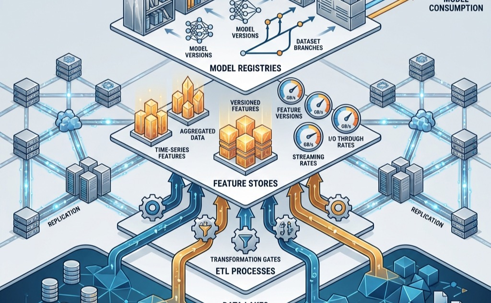

The Fuel Line
Data Storage

Purpose
Why does storage become the invisible bottleneck that prevents accelerators from reaching their potential?
Accelerators can compute faster than storage can feed them. A modern GPU processes data at terabytes per second internally, but even the fastest Non-Volatile Memory Express (NVMe) drives deliver single-digit gigabytes per second, and distributed storage systems add latency that compounds into idle accelerators waiting for data to arrive. This mismatch is invisible in benchmarks that measure accelerator performance in isolation but dominates real workloads where training data must stream continuously, checkpoints must be saved reliably, and model weights must be loaded at serving time. The gap between what accelerators can consume and what storage can deliver shapes system architecture at every level: it forces careful attention to data formats, caching strategies, and pipeline design that would be unnecessary if storage kept pace with compute. Organizations that optimize accelerator utilization without addressing storage discover that their expensive hardware runs at a fraction of capacity because nobody planned for the data path.
Learning Objectives
- Analyze how ML workloads invert traditional storage assumptions and apply the data pipeline throughput equation to calculate required bandwidth for different training scenarios.
- Compare the six tiers of the ML storage hierarchy (HBM through Archive) in terms of bandwidth, latency, capacity, and cost per gigabyte.
- Design data pipeline architectures that use prefetching and pipelining to hide storage latency and prevent accelerator starvation.
- Explain how GPU Direct Storage bypasses the CPU to reduce data loading latency for accelerator-bound workloads.
- Evaluate storage cost tradeoffs across tiers, including hidden costs such as egress fees and input/output operations per second (IOPS) charges, to design tiering strategies for training and inference workloads.
- Explain how checkpoint storage requirements (tiered staging from NVMe to shared storage) interact with cluster fault tolerance strategies.
The previous two chapters built the engine and wired it together. Compute Infrastructure established that a modern accelerator node packs eight GPUs delivering petaFLOPS of aggregate compute, and Network Fabrics showed how InfiniBand fabrics connect thousands of such nodes at hundreds of gigabits per second. An engine without fuel is expensive sculpture. The fleet also needs fuel: training data, model weights, optimizer state, and intermediate checkpoints. This chapter asks how to deliver that fuel fast enough that 1,000 accelerators never starve.
Systems Perspective 1.1: Connection: The Fleet Stack
Consider the running example that will thread through this chapter. A 175-billion parameter language model trains on 1.5 trillion tokens of text, roughly 3 TB in compressed form. Each training epoch reads every token once, in a shuffled order determined by the random seed. There is no “hot” subset of data that dominates access; every byte is consumed exactly once per pass. Meanwhile, each accelerator processes its local batch in roughly 200 ms, then waits for the next. If storage cannot deliver data within that 200 ms window, the accelerator sits idle, and the organization pays for silicon that produces heat instead of gradients.
The problem is deceptive because storage technology has improved enormously. NVMe drives achieve 7.0 GB/s of sequential throughput, a figure that would have seemed extraordinary a decade ago. The accelerators, however, improved faster. An H100 GPU consumes data from its HBM at 3.35 TB/s, roughly 479\(\times\) faster than a single NVMe drive can feed it. The gap between storage delivery and accelerator consumption is the central tension of this chapter, and it cannot be solved by any single technology. Instead, it requires a hierarchy of storage tiers, each carefully matched to a specific phase of the ML lifecycle, connected by pipelines that hide latency through prefetching and pipelining.
The storage problem is fundamentally one of physics meeting economics. Physics dictates that data closer to the accelerator (in both physical distance and interconnect hops) can be delivered faster but in smaller quantities. Economics dictates that cheaper storage can hold more data but at greater distance. The engineering art is constructing a pipeline that bridges these constraints, keeping the expensive top tier full by drawing from cheaper lower tiers fast enough that the accelerator never perceives the delay. This chapter shows how to reason quantitatively about each tier in the hierarchy, how to size the pipeline that connects them, and how to make the economic tradeoffs that determine which data lives where.
Training our 175B model requires roughly 15 TB of training data (including preprocessed variants), stored across the hierarchy. The model generates 350 GB weight-only checkpoints (1,750 GB with optimizer state) every 30 minutes. Over a 30-day training run on 256 nodes, the storage system must deliver 3 TB of training data per epoch, absorb 7.6 PB of checkpoint writes, and stage model weights for evaluation runs. These numbers thread through every section of this chapter, grounding abstract principles in concrete engineering constraints.
The chapter proceeds through three layers of increasing distance from the accelerator. We begin with how ML workloads differ from traditional storage workloads, then trace the six-tier storage hierarchy from HBM to cold archive, examining the physics and economics at each level. We then turn to the data pipeline equation that governs required bandwidth, the GPU Direct Storage technology that eliminates CPU bottlenecks, and the economics that determine which tier houses which data. We conclude with common fallacies that trap even experienced engineers.
Storage is the least glamorous component of the ML infrastructure stack. Accelerators attract headlines for their FLOPS counts, and network fabrics inspire admiration for their bandwidth. Storage, by contrast, is expected to work invisibly, and when it does, nobody notices. When storage fails to keep pace with the accelerators it feeds, however, the consequences are immediate and expensive: idle silicon, wasted power, and training runs that take twice as long as they should. The organizations that achieve the highest accelerator utilization are invariably those that invested as much engineering effort in their storage pipeline as in their compute and network infrastructure.
How ML Workloads Invert Storage Assumptions
A database administrator moving to an ML infrastructure team would find that nearly every storage design principle they relied on produces the wrong answer. To see why, return to our 175B model training on 1.5 trillion tokens. Each training epoch reads every token, in shuffled order, exactly once. The next epoch shuffles again and reads them all once more. There is no “hot data” in the traditional sense and no 80/20 rule where a small fraction of data accounts for most accesses. The standard storage optimizations fail precisely because they assume the opposite.
Traditional storage systems evolved to serve transactional databases, workloads characterized by small random accesses, strong consistency, and moderate bandwidth. A database server might issue thousands of 4 KB reads per second to serve user queries. The industry optimized for this pattern over decades, developing sophisticated caching algorithms, write-ahead logs, and RAID1 configurations tuned for small-block random access. Each optimization assumed that the most recently accessed data would likely be accessed again soon.
1 RAID (Redundant Array of Independent Disks): A 1988 Berkeley taxonomy of drive-combining strategies, each trading redundancy against bandwidth. ML training inverts the database-era default: RAID 0 (striping, no parity) maximizes sequential read throughput at the cost of zero fault tolerance, a safe trade-off[^fn-raid0-immutable] because training data is immutable and durably backed in object storage. Choosing RAID 5 or 6 instead wastes 15–25 percent of bandwidth on parity calculations that protect data already protected elsewhere.
ML workloads systematically invert these assumptions. Training data access is predominantly sequential, streaming through datasets that span hundreds of terabytes. Individual accesses are large (megabytes rather than kilobytes) because models consume batches of images or text sequences. Consistency requirements are relaxed, since slightly stale features rarely affect model quality. Bandwidth demands, however, are extreme: hundreds of gigabytes per second, sustained for days or weeks. The mismatch between what storage was optimized for and what ML actually needs creates what we call the I/O Wall (Principle \(\ref{nte-io-wall}\)): when storage throughput cannot deliver training data as fast as accelerators consume it, GPUs idle regardless of their computational power. A storage system that was adequate for 8 GPUs becomes the bottleneck at 64, making the data pipeline, not the model, the limiting factor.
Napkin Math 1.1: The Thundering Herd: Shard Contention
The Math: This is a variant of the “Birthday Problem” in probability.
- Probability of No Collision: \(\approx e^{-n^2/2N} = e^{-32^2/2000} \approx 0.60\).
- Probability of Contention: \(1 - 0.60 = \mathbf{40\%}\).
The Systems Insight: Even with a large number of shards, there is a 40.1 percent chance that the storage system will experience a “Hot Spot” in any given epoch. In a distributed fleet, these collisions create Tail Latency: the entire cluster waits for the two GPUs sharing a disk to finish. To solve this, production data loaders use Global Shuffling and Deterministic Shard Assignment to ensure that workers are perfectly distributed across the storage fabric, eliminating the “Thundering Herd” effect.
Systems Perspective 1.2: The Widening I/O Wall
Figure 1 makes this widening gap visually precise by tracking GPU throughput and storage bandwidth side by side on the same timescale.
{kind=link}
Figure 1 illustrates why the I/O Wall is the defining constraint of this chapter. The nearly 60\(\times\) ratio between GPU throughput growth (236\(\times\)) and storage bandwidth growth (4\(\times\)) means that every new GPU generation increases the pressure on the data pipeline. Without a multi-tier storage hierarchy, prefetching, and format optimization, the expensive accelerators at the top of the stack would spend more time waiting for data than computing on it. The remainder of this chapter examines how each tier of the storage hierarchy addresses a different facet of this chasm.
The first inversion is access pattern. Where database workloads exhibit random access patterns that benefit from seek-time optimization, ML training performs massive sequential scans. A training epoch reads every sample once, in whatever order the shuffling algorithm produces. This pattern resembles video streaming more than database queries. Storage systems optimized for random IOPS2 waste their capabilities on ML workloads, while systems optimized for sequential throughput excel. The distinction is quantitatively dramatic: a modern NVMe drive delivers 3.5 GB/s for sequential reads but only 0.5 GB/s for 4 KB random reads, a 7\(\times\) penalty for the wrong access pattern. The penalty is even more severe on hard drives, where mechanical seek times impose a 100\(\times\) throughput reduction for random access compared to sequential.
2 IOPS (Input/Output Operations Per Second): The metric that dominated storage procurement for decades because database workloads issue millions of small random reads. ML training inverts this priority: a pipeline streaming 256 MB shards sequentially needs sustained GB/s throughput, not per-operation speed. Provisioning storage by IOPS rating for an ML workload over-spends on random-access capability the pipeline never exercises.
The shuffling that ML training requires adds a complication. While each epoch reads every sample once, the order is randomized to prevent the model from memorizing the sequence of training examples. True random shuffling would require random access across the entire dataset, destroying the sequential access pattern. The practical solution is to shuffle at a coarser granularity: shuffle the order of large data shards, then shuffle samples within each shard’s local buffer. This achieves sufficient randomness for training convergence while preserving the sequential I/O pattern that storage hardware demands. The shard size determines the trade-off: larger shards provide more within-shard shuffle diversity but require more memory for the shuffle buffer.
The second inversion is working set size. Traditional applications exhibit locality: a web server repeatedly accesses popular pages, and a cache holding the top 10 percent of content serves 90 percent of requests. ML training datasets are accessed uniformly. Our 3 TB text corpus has no “popular” tokens; each is consumed once per epoch. A cache of any practical size holds only a tiny fraction of the dataset, and every sample is effectively “cold” when accessed. This lack of temporal locality renders traditional caching strategies ineffective. Even an LRU3 (Least Recently Used) cache, the workhorse of database systems, achieves a 0 percent hit rate on uniformly accessed data, because by the time a sample is accessed again in the next epoch, it has long been evicted to make room for other samples.
3 LRU (Least Recently Used): LRU’s optimality proofs assume temporal locality, the property that recently accessed data will be accessed again soon. ML training’s uniform-access-per-epoch pattern violates this assumption maximally: every sample is accessed exactly once, making LRU’s eviction decisions no better than random. Teams that provision a large DRAM cache expecting database-like hit rates on training data discover 0 percent reuse, wasting memory that would be better allocated to prefetch buffers.
The exception to this uniformity is multi-task or curriculum learning, where certain subsets of the dataset are accessed more frequently during specific training phases. In curriculum learning, the trainer begins with “easy” examples and progressively introduces harder ones. This creates a temporary working set that does exhibit locality, and local caching at the NVMe tier can exploit this structure. For the majority of large-scale pretraining workloads, however, the access pattern is effectively uniform, and the storage system must be designed for full-dataset streaming rather than hot-subset caching.
The third inversion is write pattern. Transactional systems generate continuous streams of small writes, each immediately durable. ML systems generate occasional massive writes when saving checkpoints. A 175B parameter model checkpoint, including optimizer state, occupies roughly 1,750 GB. Saving it every ten minutes generates concentrated bursts that saturate bandwidth for seconds, followed by long idle periods. These bursts are the “checkpoint storms” that parallel file systems must absorb without disrupting ongoing training reads. The bursty write pattern is particularly challenging because all nodes in the cluster write their checkpoint shards simultaneously. If 1,024 nodes each write 4 GB, the parallel file system receives 4 TB of writes in a single burst, which must complete before the training pipeline can resume.
| Workload Pattern | Traditional Assumption | ML Reality |
|---|---|---|
| Access pattern | Random access | Sequential streaming |
| Working set | Fits in cache | Exceeds all cache levels |
| Write pattern | Continuous small writes | Bursty large writes |
| Read/write ratio | Balanced | Phase-dependent (100:1 to 1:0) |
| Locality | Strong temporal locality | No locality (uniform sampling) |
As Table 1 shows, these inversions have a fourth, subtler dimension: the read/write ratio shifts dramatically by lifecycle phase. During training, reads dominate writes by 100:1 or more, as the system streams through data continuously and saves checkpoints occasionally. During checkpoint-heavy phases in fault-prone clusters, writes can briefly dominate. During data preprocessing, both reads and writes are heavy. No single storage configuration optimizes for all phases, which is why ML systems require a multi-tier hierarchy rather than a single storage technology.
A fifth inversion emerges when comparing training and inference workloads. Training reads datasets sequentially and writes checkpoints in bursts. Inference, by contrast, reads model weights once at startup (a large sequential read of potentially hundreds of gigabytes), then performs no further storage I/O during normal operation because the model resides entirely in HBM. The storage challenge for inference is cold-start latency: the time required to load a model from storage to HBM when scaling up or recovering from failure. A 175B parameter model in FP16 occupies 350 GB; loading it from NVMe at 14 GB/s takes 25 seconds, while loading from a parallel file system at 4 GB/s per node takes nearly 90 seconds. For serving workloads with strict availability requirements (covered in Inference at Scale), this cold-start time drives the design toward keeping warm replicas in host DRAM or using model sharding to parallelize the load across multiple storage devices.
When scaling from a single user to thousands of concurrent inference requests, the storage challenge shifts from a single-stream throughput problem to a massive fan-out distribution problem. A serving cluster with 100 replicas of our 175B parameter model requires 35 TB of model weights distributed across the cluster. When a new model version is deployed (a model rollout), all 100 replicas must be updated, triggering a 35 TB data distribution event that must complete within minutes to minimize serving disruption. This is analogous to the checkpoint storm in training but in reverse: instead of many nodes writing to a central location simultaneously, many nodes are reading the same data simultaneously. The storage system must sustain this burst read bandwidth for model distribution while continuing to serve inference requests from the existing model version without degradation.
These inversions have direct consequences for system procurement and architecture. An organization provisioning storage for ML based on database-era heuristics will over-invest in random IOPS (which ML does not need), under-invest in sequential bandwidth (which ML desperately needs), and fail to account for the bursty write patterns that checkpointing creates.
Checkpoint 1.1: Storage Workload Analysis
You are designing the storage subsystem for a new ML training cluster with 512 GPUs. The primary workload will train large language models on a 10 TB text dataset.
- Based on the five inversions described earlier, which storage optimization strategies from the database world would be counterproductive for this workload? Name at least three.
- If each training epoch reads the full 10 TB dataset once and the cluster trains for 100 epochs, what is the total data volume read? How does this compare to a typical database workload?
- The model saves a 500 GB checkpoint every 15 minutes. If checkpoint saves must complete within 30 seconds to minimize training disruption, what minimum write bandwidth is required?
- Given the write pattern (bursty checkpoints every 15 minutes), what percentage of time is the storage system in “write mode” vs. “read mode”?
The storage hierarchy described in the next section is the engineering response to these inverted requirements.
Understanding how data is accessed across storage tiers is essential for choosing the right storage system. Figure 2 compares throughput for sequential vs. random access, showing how storage performance degrades dramatically when workloads deviate from sequential streaming.
{kind=link}
The gap labeled “The I/O Wall” in Figure 2 widens as request sizes shrink: at 4 KB, sequential reads outperform random reads by 10\(\times\). This is why datasets stored as millions of small files (the “small file problem”) perform catastrophically on ML workloads, even on high-bandwidth storage. The solution, as we will see in the parallel file system and object storage tiers, is to aggregate small samples into large sequential shards.
The practical consequence for our running example is stark. The 1.5 trillion tokens of training data, stored as compressed text, produce roughly 3 TB of sequential reads per epoch. If each token were stored as an individual file (as naive data collection might produce), the metadata overhead alone would throttle throughput to a fraction of what the storage hardware can deliver. Instead, the data must be pre-processed into large shards, typically 256 MB to 4 GB each, so that each read operation amortizes the fixed overhead of file open, seek, and close across millions of tokens. This preprocessing step transforms the access pattern from random (one file per sample) to sequential (one contiguous read per shard), moving the workload from the red line to the blue line in Figure 2.
With these inversions established, we can trace the storage hierarchy that ML systems use to bridge the gap between accelerator appetite and storage capacity.
Self-Check: Question
A procurement team is sizing storage for a large-scale pretraining cluster on a 200 TB immutable text corpus. Which provisioning choice most directly wastes budget given the section’s five inversions?
- Paying a premium for drives advertised at very high 4 KB random-read IOPS while underprovisioning sustained sequential GB/s.
- Aggregating samples into 256 MB to 4 GB shards before ingestion to amortize metadata overhead.
- Using local NVMe as a warm cache for repeated multi-epoch reads after staging from object storage once.
- Sizing the parallel file system write tier to absorb synchronized checkpoint bursts from every node.
True or False: A 200 GB LRU-managed DRAM cache in front of a 3 TB pretraining dataset should achieve roughly 90 percent hit rate after the first epoch warms the cache, because each sample is revisited every epoch.
A training pipeline loads 256 MB shards from local NVMe. The trainer needs each sample delivered in effectively random order to satisfy convergence. Explain why shard-level shuffle plus within-shard buffer mixing is the practical compromise, and describe the specific trade-off it introduces between storage throughput and training convergence.
A serving team rolls out a new 175B-parameter model version to 100 replicas. The chapter describes this as the mirror image of a training checkpoint storm. Which storage profile best captures the dominant challenge?
- Millions of small durable transaction writes, as in an OLTP database, because each replica must journal its state change.
- A synchronized fan-out read burst of roughly 35 TB (100 replicas times 350 GB weights) that must complete within the rollout SLO while ongoing inference continues.
- Continuous high-frequency random reads of user features on the hot path, because every inference request now touches the new model weights.
- A steady write stream equal to the old-to-new weight delta, because only changed parameters need to be distributed.
A 1,024-node training cluster adds 256 more nodes expecting proportional training-time reduction, but wall-clock per epoch barely changes. Profiling shows each node’s compute utilization dropped from 78 percent to 62 percent. Using the section’s workload-inversion framework, explain what storage-side mechanism most likely produced this pattern and what measurement would confirm it.
Contrast the dominant storage concern for a 30-day pretraining run with the dominant concern for cold-starting 20 inference replicas of the same 175B-parameter model. Explain why the same storage stack must be provisioned differently for each lifecycle phase.
The ML Storage Hierarchy
A system architect must organize storage to serve workloads that simultaneously demand terabytes-per-second bandwidth (for computation), petabyte-scale capacity (for datasets), and eleven-nines durability (for checkpoints). No single technology satisfies all three requirements. HBM provides bandwidth but not capacity. Object storage provides capacity and durability but not bandwidth. The resolution is a multi-tier hierarchy that places small amounts of fast, expensive storage close to the accelerator and large amounts of slow, cheap storage at the periphery. Each tier exists because it resolves a specific tension between physics (bandwidth and latency are governed by distance from the accelerator) and economics (cost per bit decreases as capacity increases). The hierarchy extends the classic processor memory hierarchy (registers, L1/L2 cache, DRAM) that students encounter in computer architecture courses, adding tiers below DRAM that are unique to large-scale data systems. Table 2 reveals the extreme bandwidth disparities that ML systems must navigate.
| Storage Tier | Typical Capacity | Bandwidth | Latency | Cost ($/GB) |
|---|---|---|---|---|
| GPU HBM | 80 GB | 3.35 TB/s | ~10 ns | ~15.00 |
| Host DRAM | 512 GB–2 TB | 200 GB/s | ~100 ns | ~3.00 |
| Local NVMe SSD | 4–30 TB | 7–25 GB/s | ~10 μs | ~0.10 |
| Parallel File System | 100+ PB | 1+ TB/s aggregate | ~1 ms | ~0.03 |
| Object Storage | Unlimited | 100 GB/s aggregate | ~50 ms | ~0.02 |
| Archive/Cold Storage | Unlimited | 1 GB/s | Minutes to hours | ~0.004 |
Principle 1: The Storage Hierarchy Principle
Figure 3 maps these six tiers into a spatial hierarchy, showing how bandwidth decreases and capacity increases at each step away from the accelerator.
{kind=link}
The pyramid in Figure 3 encodes a fundamental trade-off: every step down the hierarchy trades bandwidth for capacity and cost. This trade-off is not arbitrary; it reflects the physics of data proximity. HBM sits on the same silicon interposer as the accelerator, connected by thousands of parallel traces measured in millimeters. Host DRAM communicates over PCIe lanes spanning centimeters. NVMe reaches across a circuit board via a PCIe connector. The parallel file system traverses meters of cable and network switches. Object storage may span kilometers of fiber between data centers. At each level, the increasing physical distance translates directly into increased latency, decreased bandwidth per connection, and decreased cost per byte (because the same medium can store more data at lower density).
The engineering challenge is to ensure that data flows upward through the pyramid fast enough that the top tier (HBM) is never empty when the accelerator needs it. Return to our running example: the 3 TB dataset lives in object storage (Tier 4), but the accelerator needs each batch in HBM (Tier 0) within 200 ms. The data must be promoted through intermediate tiers, staged in progressively faster storage, so that by the time the accelerator requests a batch, it is already waiting in host DRAM, one PCIe transfer away from HBM.
Bandwidth cliffs between tiers
The bandwidth ratios between adjacent tiers reveal the severity of each transition in the hierarchy. Between HBM and host DRAM, the ratio is roughly 17\(\times\) (3.35 TB/s vs. ~200 GB/s). Between host DRAM and NVMe, the ratio is roughly 15\(\times\) (200 GB/s vs. ~14 GB/s from a 4-drive RAID-0). Between NVMe and a parallel file system, the ratio depends on the per-node allocation: if a 1 TB/s aggregate PFS serves 256 nodes, each node receives roughly 4 GB/s, a 3.5\(\times\) reduction from local NVMe. Between the parallel file system and object storage, the ratio is typically 10\(\times\) or more, depending on the number of concurrent clients and network bandwidth.
These bandwidth cliffs have a critical implication: the pipeline cannot simply “stream through” the hierarchy in real time. If the accelerator consumes data at 3.35 TB/s from HBM, and the next tier down delivers only 200 GB/s, then HBM can be emptied in under 50 ms but takes 400 ms to refill from host DRAM. The only way the accelerator avoids stalling is if the batch it needs next is already in HBM before it finishes the current batch. This is why every tier in the hierarchy serves as a prefetch buffer for the tier above it: host DRAM buffers data for HBM, NVMe buffers data for host DRAM, the parallel file system buffers data for NVMe, and object storage is the ultimate source of truth. Each buffer must be deep enough to absorb the latency and bandwidth variance of the tier below it.
The bandwidth arithmetic also explains why increasing cluster size creates storage pressure. A single node with 8 GPUs needs roughly 4 to 40 GB/s of storage bandwidth (depending on workload). A cluster of 256 such nodes needs 1,000 to 10,000 GB/s. A cluster of 10,000 nodes needs 40 to 400 TB/s. At the upper end, even a world-class parallel file system with 1,000 OSS nodes delivering 1 TB/s aggregate cannot satisfy the demand, and the architecture must rely on local NVMe caching to reduce the load on shared storage.
Napkin Math 1.2: Text vs. Image Bandwidth
For text training, the demand is surprisingly low. With a typical batch size of 4,096 tokens per GPU and a 200 ms step time, the aggregate bandwidth is:
\[2{,}048 \text{ GPUs} \times 4{,}096 \text{ tokens/GPU} \times 4 \text{ bytes/token} \div 0.2\text{s} \approx \mathbf{160 \text{ MB/s}}\]
This is easily served by a single network-attached storage node.
For image training, the picture changes dramatically. Using a common batch size of 256 images (ImageNet at \(224 \times 224,\) roughly 150 KB/image), the aggregate bandwidth explodes:
\[2{,}048 \text{ GPUs} \times 256 \text{ images/GPU} \times 150 \text{ KB/image} \div 0.2\text{s} \approx \mathbf{393 \text{ GB/s}}\]
This is over 2,400\(\times\) higher than the text workload and requires a high-performance parallel file system. This fundamental difference drives hierarchy design: text training is volume-heavy but bandwidth-light, bottlenecked by total dataset size and checkpointing; image training is bandwidth-heavy, bottlenecked by the storage system’s ability to feed the accelerators.
The bandwidth cliff between tiers also has implications for the data format at each level. At the HBM tier, data must be in the format the accelerator can directly compute on: float16 tensors, packed token IDs, or pre-processed feature vectors. At the NVMe tier, data can be in a more compact format (compressed JPEG, tokenized text with dictionary encoding) because the CPU has time to decode it while the accelerator processes the previous batch. At the object storage tier, maximum compression is desirable to minimize both storage cost and transfer time, even if decompression adds CPU overhead. The format transition from compressed storage to compute-ready tensors is part of the pipeline’s “value-added” work, transforming raw bytes into the representation that the accelerator needs. This transformation happens in host DRAM, which is why host DRAM serves as the critical staging area for the pipeline.
The format challenge intensifies for multi-modal training, which combines text, images, audio, and video in a single model. Each modality has a dramatically different data profile: a text token is 4 bytes, a high-resolution image is 150 KB, and a short video clip is 10 MB. They also have different compression characteristics and require different augmentation pipelines. A multi-modal training job must manage multiple parallel data streams, each with its own bandwidth profile and prefetch requirements. The storage hierarchy must be provisioned for the sum of all modalities’ bandwidth demands, not the dominant one alone. For a training job combining 3 TB of text with 50 TB of images and 200 TB of video, the video modality overwhelmingly dominates both storage capacity and I/O bandwidth requirements, even though the text modality may contribute more to model quality. This asymmetry between storage cost and training value is a recurring challenge in multi-modal system design.
The following subsections examine each tier in detail, starting from the apex where computation occurs and descending to the base where data is born.
Tier 0: GPU HBM
The most critical resource in the entire system is also the most scarce. High Bandwidth Memory (HBM) is the only storage tier where weights and activations can reside during active computation. As established in Compute Infrastructure, HBM is a 3D-stacked memory technology that places DRAM dies vertically atop the accelerator, connected by thousands of through-silicon vias that provide aggregate bandwidth of 3.35 TB/s on an H100. This bandwidth, roughly 500\(\times\) faster than DDR5 system DRAM, is what makes modern deep learning feasible: a matrix multiplication involving billions of parameters requires reading those parameters from memory every forward and backward pass.
The constraint at this tier is capacity, not bandwidth. An H100 provides 80 GB of HBM, enough to hold a 40-billion parameter model in FP16 (2 bytes per parameter), but nowhere near enough for the 175B parameter models that define the frontier. To understand the severity of this constraint, consider the memory budget for training our 175B model. The model weights in FP16 consume 350 GB. The Adaptive Moment Estimation (Adam) optimizer maintains two additional states (momentum and variance) in FP32, consuming \(175 \times 10^9 \times 4 \times 2 = 1{,}400\) GB. Activations for a single batch, depending on sequence length and batch size, can consume another 100 to 400 GB. The total memory footprint exceeds 2 TB, roughly 25\(\times\) the capacity of a single H100’s HBM. From the storage hierarchy perspective, HBM is the destination that every lower tier exists to serve. The data pipeline’s purpose is to ensure that the 80 GB of HBM always contains the data the accelerator needs next, not the data it needed a second ago.
Because HBM capacity is so limited relative to both model size and dataset size, the accelerator processes data in batches. Each batch occupies a fraction of HBM for the duration of one forward-backward pass, then is discarded to make room for the next. The rate at which batches must be supplied sets the bandwidth requirement for all lower tiers.
This batch-oriented consumption pattern creates a “spill” dynamic that cascades down the hierarchy. When a model’s weights alone exceed HBM capacity, the system must partition the model across multiple accelerators (tensor parallelism) or page weights in and out of HBM during execution (offloading). Either strategy increases the bandwidth demand on lower tiers. For our 175B parameter model, the weights in FP16 occupy 350 GB, requiring at least five H100 accelerators just for weight storage, with no room for activations or optimizer state. The optimizer state (momentum and variance in FP32) adds another 1.4 TB, pushing the total memory footprint to roughly 1.75 TB. Distributed training strategies partition this footprint across the cluster, but every partition increases the coordination overhead at lower tiers. Distributed Training Systems examines these parallelism strategies in depth; here, the key insight is that HBM scarcity is the root cause of the entire storage hierarchy’s existence.
The razor-thin margin is a defining feature of large model training. Consider the HBM memory budget for training our 175B parameter model on a single H100 GPU with 80 GB of HBM, assuming the model is partitioned across 8 GPUs using tensor parallelism within the node and ZeRO-3 across 256 nodes:
| Component | Size per GPU |
|---|---|
| Model Weights (FP16, tensor-parallel) | 43.75 GB |
| Optimizer State (ZeRO-3 partitioned) | 5.5 GB |
| Activations (variable by sequence length) | 10–20 GB |
| Gradient Buffers | 5.5 GB |
| Communication Buffers (NCCL) | 2–4 GB |
| Total Occupied | 67–79 GB |
Even with aggressive partitioning, the total memory footprint consumes between 85 percent and 98 percent of the available HBM. This leaves less than 15 percent of the GPU’s fastest memory, just a few gigabytes, to serve as a buffer for the incoming data pipeline. Any delay in fetching the next batch from host memory risks starving the accelerator, forcing it to sit idle while the most expensive resource in the system produces heat instead of gradients.
The batch lifecycle within HBM illustrates how transient storage at this tier truly is. When a new training batch arrives from host DRAM via PCIe, it is placed in a pre-allocated input buffer in HBM. The forward pass reads the input data, reads the model weights (which persist across batches), and writes activations to HBM. The backward pass reads the activations, computes gradients, and writes gradient updates. The optimizer step reads gradients and model weights, computes updated weights, and writes them back. After the optimizer step, the input batch and activations are no longer needed and their HBM regions are freed for the next batch. The entire lifecycle of an input batch in HBM, from arrival to deallocation, spans a single training step: typically 100 to 500 ms. Model weights and optimizer state, by contrast, persist in HBM for the entire training run, occupying a fixed allocation that cannot be reclaimed for batch data.
From the data pipeline’s perspective, Tier 0 is not a storage tier to be managed but a constraint to be satisfied. The pipeline’s purpose is to ensure that the batch the accelerator needs next is already resident in HBM before the current batch’s computation completes. If it arrives late, the accelerator stalls. If it arrives early, it consumes HBM that could hold activations. The tension between “just in time” and “just too late” defines the pipeline’s buffer management strategy, which we quantify in Section 1.3.
Tier 1: Host DRAM
One level below HBM, host DRAM serves as the staging area for the data pipeline. Every byte of training data that reaches the accelerator passes through host DRAM first (unless GPU Direct Storage bypasses it, as described in Section 1.4). A typical training node contains 512 GB to 2 TB of system memory shared across the host CPU and its peripherals. While the bandwidth between host DRAM and the accelerator is limited to what PCIe Gen 5 (64 GB/s bidirectional) or NVLink (900 GB/s) can provide, host DRAM plays three critical roles in the ML storage hierarchy.
The data loader pipeline that runs in host DRAM follows a multi-stage architecture. First, I/O threads read compressed data from NVMe or network storage into read buffers. Second, decode threads decompress the data (JPEG decoding for images, decompression for text). Third, augmentation threads apply transformations (random cropping, flipping, normalization for images; tokenization and sequence packing for text). Fourth, the collation stage assembles individual samples into batches and pins the memory for efficient DMA transfer to the accelerator. Each stage runs concurrently, forming a pipeline that overlaps I/O, CPU computation, and data transfer. The efficiency of this pipeline determines whether host DRAM can keep up with the accelerator’s appetite.
Host DRAM’s most critical function is serving as a prefetch buffer. The CPU data loader reads data from lower tiers (NVMe or network storage), decodes compressed formats (JPEG, gzip), applies augmentations (random crops, flips, color jitter), and assembles tensors in host DRAM. By the time the accelerator finishes processing batch \(N\), batch \(N+1\) should already be assembled in host memory, ready for transfer to HBM. The depth of this prefetch buffer determines how much I/O variance the pipeline can absorb without stalling.
Recommendation workloads place a different demand on host DRAM: hosting embedding tables that can exceed 100 GB, far too large for HBM. These tables reside in host DRAM and are accessed through lookups that fetch only the rows needed for the current batch. The bandwidth between host DRAM and HBM becomes the critical bottleneck for these workloads, which is why some systems use CPU-side DRAM with RDMA to serve embedding lookups across the network.
Host DRAM also provides the augmentation workspace that the CPU pipeline requires. Data augmentation operations (resizing images, tokenizing text, applying noise) execute on the CPU and require temporary memory for intermediate results. A training pipeline that applies five augmentations to a 256-image batch at 150 KB per image needs tens of megabytes of working space for each augmentation stage. Although modest per-batch, this memory accumulates when multiple data loader workers run in parallel.
Some augmentation pipelines have moved from CPU to GPU execution, using libraries like NVIDIA DALI to perform image decoding and augmentation on the accelerator itself. This approach eliminates the CPU augmentation bottleneck and reduces the host DRAM bandwidth demand, because compressed data (smaller) is transferred to the GPU instead of decoded data (larger). The trade-off is that augmentation on the GPU consumes HBM capacity and compute cycles that would otherwise be available for training. For compute-bound workloads (where the GPU is already saturated with matrix multiplications), GPU-based augmentation is counterproductive. For I/O-bound workloads (where the GPU waits for data), it can improve overall throughput by shifting work from the bottleneck (CPU) to the resource with spare capacity (GPU).
The three roles interact in subtle ways. The prefetch buffer and the augmentation workspace compete for the same physical DRAM, and embedding tables consume capacity that could otherwise serve as deeper prefetch queues. A node with 512 GB of DRAM hosting a 200 GB embedding table has only 312 GB remaining for prefetching and augmentation. If the data loader uses 8 workers, each maintaining a decode buffer of 1 GB, the effective prefetch capacity drops further. System architects must balance these competing demands by profiling the actual memory consumption of each pipeline stage and provisioning DRAM accordingly.
The physical layout of DRAM has performance implications that are invisible in single-socket benchmarks but critical at production scale. Modern multi-socket servers exhibit Non-Uniform Memory Access (NUMA) topology where each CPU socket has “local” DRAM that it can access at full bandwidth and “remote” DRAM attached to the other socket at roughly half bandwidth. In a dual-socket DGX node with eight GPUs split four per socket, a data loader thread running on socket 0 that allocates its prefetch buffer in socket 1’s DRAM pays a roughly 2\(\times\) bandwidth penalty on every buffer access. The fix is NUMA-aware allocation: pin each data loader worker to the same CPU socket (the same NUMA domain) as the GPUs it serves, and use numactl or libnuma to ensure memory allocation stays local. Proper NUMA pinning can improve data loading throughput by 30–50 percent on dual-socket systems, a gain that is invisible in development environments but essential when every percentage point of utilization translates to thousands of dollars per day.
The gap between host DRAM bandwidth and HBM bandwidth is the first major cliff in the hierarchy: roughly 5\(\times\) to 15\(\times\), depending on interconnect. Any failure to keep host DRAM populated from lower tiers cascades immediately to accelerator starvation, because the accelerator cannot fetch directly from NVMe or network storage. In our running example, the 256-GPU cluster requires each node’s host DRAM to sustain a continuous flow of decoded, augmented batches ready for PCIe transfer. If the NVMe-to-DRAM read pipeline falls behind by even a few hundred milliseconds, the prefetch buffer drains and the accelerator idles until the next batch arrives.
Tier 2: Local NVMe
When the working set exceeds host DRAM, the system falls to Tier 2: the local NVMe drives attached directly to the compute node. NVMe4 provides a high-performance protocol designed specifically for solid-state drives, achieving 7.0 GB/s of sequential throughput per drive. With four drives in a RAID-0 configuration, a single node can sustain 14 GB/s of sequential reads, sufficient to stream a 3 TB dataset from local disk in under four minutes.
4 NVMe (Non-Volatile Memory Express): A storage protocol designed for SSDs, connecting directly to the CPU via PCIe lanes. NVMe replaced AHCI’s single queue of 32 commands with 64K queues of 64K commands each, a 130-million-fold increase in maximum outstanding I/O. This deep queue parallelism is what allows a multi-worker ML data loader to saturate the drive’s bandwidth; with AHCI, 32 workers would serialize on the single command queue regardless of flash speed.
In ML training, local NVMe acts as a warm cache, storing data shards fetched from distributed storage. This design allows workers to re-read samples across multiple epochs without re-traversing the network. For multi-epoch training on petabyte-scale datasets, the network egress cost of re-fetching from object storage each epoch would be prohibitive (as we quantify in Section 1.5). Populating local NVMe from shared storage at job start and reading locally thereafter eliminates both cost and latency.
The warm cache pattern requires careful capacity planning. A training node with four 7.68 TB NVMe drives provides approximately 30 TB of local storage. For our running example, the 3 TB compressed dataset fits comfortably on a single node’s local storage, with room for checkpoint staging and temporary augmentation buffers. A multi-modal training job combining 10 TB of images, 3 TB of text, and 5 TB of audio, however, exceeds the local capacity, forcing the pipeline to stream from the parallel file system for at least part of the dataset. The design trade-off is between provisioning more local NVMe (which increases node cost) and accepting network-dependent reads (which risks latency spikes).
NVMe’s internal parallelism is key to its throughput advantage over traditional storage. The NVMe specification supports up to 65,535 I/O queues, each with up to 65,536 outstanding commands. A data loader with 32 workers, each issuing asynchronous reads, can keep the NVMe controller’s internal pipeline saturated. In contrast, the legacy AHCI protocol that NVMe replaced supported a single queue of 32 commands, throttling parallelism at the protocol level regardless of the underlying medium’s capability. This architectural difference explains why NVMe delivers 10\(\times\) to 50\(\times\) the throughput of SATA SSDs with identical NAND flash, even though the storage medium is the same.
Data format design for sequential I/O
The choice of data format on local NVMe has a dramatic impact on effective throughput. Consider three approaches to storing a 1.28 million image dataset:
The first approach stores each image as a separate JPEG file in a directory hierarchy. This format is natural for data collection (download one image, save one file) but adversarial for training I/O. Each open() system call has a fixed overhead of roughly 10 to 50 μs in the kernel’s VFS layer. At 8,000 images per second, the overhead alone consumes 80 to 400 ms of CPU time per second. Worse, the directory structure forces the file system to maintain an inode for each file, consuming metadata resources that would otherwise be available for data reads.
The second approach packs all images into a small number of large binary files (such as HDF5, LMDB, or raw concatenated tensors with an index file). Each file contains thousands of images stored contiguously, and a separate index maps sample IDs to byte offsets within the file. The data loader seeks to the desired offset and reads the sample directly. This eliminates the per-file metadata overhead and enables sequential access within each binary file. The disadvantage is that the dataset is no longer human-readable, and modifying a single sample requires rewriting the entire file.
The third approach uses the tar-based archive format popularized by WebDataset. Each sample is stored as a group of related files (image, label, metadata) within a standard POSIX tar archive. The tar format supports sequential iteration without a separate index, because each file’s header contains its size, allowing the reader to skip forward to the next sample. This format combines the simplicity of individual files (each sample is self-describing) with the sequential I/O efficiency of large binary files. The tar archives are also valid HyperText Transfer Protocol (HTTP) byte-range targets, making them directly streamable from object storage without local staging.
For our running example, the 1.5 trillion token dataset is typically stored as a collection of 256 MB to 4 GB binary shards, each containing a contiguous sequence of tokenized text. The data loader opens a shard, reads it sequentially into a buffer, and iterates over tokens within the buffer. When the buffer is exhausted, the loader opens the next shard. The total number of open() calls per epoch is the number of shards (a few hundred to a few thousand), not the number of tokens (trillions). This 10,000\(\times\) to 100,000\(\times\) reduction in metadata operations is what makes streaming from both local NVMe and remote storage feasible at training scale.
At the NVMe tier, compression represents a critical trade-off between I/O bandwidth and CPU cycles. An I/O-bound pipeline, where the NVMe drives cannot keep up with accelerator demand, benefits from aggressive compression: zstd at level 9 achieves roughly 4:1 compression but decompresses at only 0.5 GB/s per CPU core. A CPU-bound pipeline, where decode and augmentation already saturate the host processor, prefers lighter compression: zstd at level 1 offers roughly 3:1 compression but decompresses at 1.5 GB/s per core. On a 14 GB/s NVMe RAID array, zstd-1 delivers an effective throughput of 42 GB/s of uncompressed data, while zstd-9 delivers 56 GB/s but requires 3\(\times\) more CPU cores dedicated to decompression. The optimal compression level is therefore not a property of the data but a property of the pipeline’s bottleneck, and it can change when the cluster configuration changes (adding more GPUs shifts the bottleneck toward I/O, favoring heavier compression).
Napkin Math 1.3: The ImageNet Bottleneck Analysis
The Math:
- Raw Bandwidth: 1,000 images/s\(\times\) 150 KB/image = 150 MB/s.
- HDD Reality: A 7200 RPM hard disk drive (HDD) delivers 100 random IOPS. Sustaining 1,000 images/s requires 10\(\times\) more IOPS than the disk provides.
- The Result: Shuffling individual files on an HDD will starve the GPU, reducing utilization to <5 percent.
The Systems Conclusion: You must either use NVMe (sub-10 μs random access) or convert the dataset to a sequential format (TFRecord/WebDataset) to achieve sequential throughput.
The central challenge at this tier is the I/O Wall: even the fastest NVMe RAID configuration is roughly 500\(\times\) slower than HBM. Bridging this gap requires pipelining (overlap I/O with compute, detailed in Section 1.3) and, increasingly, GPU Direct Storage (detailed in Section 1.4) to bypass CPU overhead entirely. The I/O Wall at this tier is particularly insidious because NVMe performance is excellent by historical standards. A storage engineer accustomed to HDD-era throughput of 100 MB/s might view 14 GB/s as superabundant. Relative to the accelerator’s appetite, however, 14 GB/s is a trickle. The only way to bridge the gap is to overlap storage reads with computation so thoroughly that the accelerator never perceives the storage delay.
Local NVMe is also the primary tier for local checkpoint staging. When saving a model checkpoint, the fastest strategy is to write to local NVMe at full bandwidth (minimizing the time the training pipeline is paused), then asynchronously replicate to shared storage for durability. A 175B parameter checkpoint of 1,750 GB writes to local NVMe in approximately 0.2 seconds, compared to 1.7 seconds if written directly to a parallel file system where the node competes with hundreds of other writers. The optimal checkpoint frequency depends on cluster failure rates and is derived quantitatively in The Young-Daly law: Optimal checkpointing using the Young-Daly formula. From a storage perspective, the key design goal is minimizing \(T_{save}\) through tiered staging: write to local NVMe at full bandwidth, then background-copy to shared storage.
Napkin Math 1.4: ROI of Local NVMe Caching
The Math: GPU utilization (\(\eta\)) is the fraction of step time spent in computation.
- Remote Only: 800 / (800 + 150) \(\approx\) 84.2 percent.
- Local Cache: Using prefetching into local NVMe reduces the exposed I/O wait to near zero.
- New Util: 800 / (800 + 10) \(\approx\) 98.8 percent.
The Systems Insight: Local storage is a GPU Utilization Multiplier. Adding a $500 NVMe drive to a $30,000 GPU node recovers 15 percent of the GPU’s capacity that was previously wasted on I/O wait. Across a 1,000-GPU cluster, this is equivalent to adding 150 GPUs for “free.” In modern ML infrastructure, local NVMe is not auxiliary; it is the “Physical Buffer” that decouples expensive compute from unpredictable shared storage.
A practical concern at this tier is SSD endurance. NAND flash memory can sustain a limited number of write-erase cycles before the cells degrade. Enterprise NVMe drives are rated for 1 to 3 Drive Writes Per Day (DWPD) over a 5-year lifespan. For a 7.68 TB drive at 1 DWPD, this means the drive can absorb 7.68 TB of writes per day, or roughly 14 PB total over its lifetime. ML training workloads are predominantly read-heavy (the dataset is written once and read many times), which is favorable for SSD endurance. However, checkpoint writes can be intensive: if each node saves a 4 GB checkpoint shard every 10 minutes, that is 576 GB per day of checkpoint writes, well within the 1 DWPD budget. The risk emerges when local NVMe is used as a staging buffer for both checkpoint writes and dataset caching: the combined write volume from initial dataset staging plus repeated checkpoint saves must remain within the drive’s endurance rating.
Local NVMe provides high bandwidth and low latency within a single node, but distributed training requires every node to access the same datasets and see the same checkpoints. This shared-namespace requirement cannot be satisfied by node-local storage alone and motivates the next tier in the hierarchy.
Tier 3: Parallel file systems
Beyond the single node, the workload requires a shared namespace where all workers can access the same datasets and where durable checkpoints are globally visible. This is the role of the Parallel File System (PFS).5
5 PFS (Parallel File System): A family of distributed file systems (Lustre, GPFS/Spectrum Scale, BeeGFS, WekaFS) whose defining property is that a single client reads from multiple storage servers simultaneously, aggregating their bandwidth into one logical stream. For ML training, this means a single data shard striped across 100 servers can deliver 100\(\times\) the bandwidth of any individual server, the architectural feature that makes petabyte-scale dataset access feasible within training-iteration time budgets.
Definition 1.1: Parallel File System
Parallel File System (PFS) is a distributed storage architecture that stripes data across many storage servers to provide aggregate throughput exceeding the capacity of any single device.
- Significance (Quantitative): A PFS aggregates \(BW_{io}\) linearly with the number of storage servers (Object Storage Servers). A Lustre cluster with 20 OSS nodes each delivering 10 GB/s provides 200 GB/s aggregate—vs. a single NAS server capped at 10 GB/s—enabling an 8,000-GPU training job to load each 512-token batch in under 50 ms rather than 1 second. This aggregate bandwidth directly reduces the \(D_{\text{vol}}/\text{BW}\) term in the iron law.
- Distinction (Durable): Unlike Network Attached Storage (NAS), where every I/O request routes through a single server, a PFS client receives stripe location metadata from a dedicated Metadata Server (MDS) and then reads data directly from multiple OSS nodes in parallel—the MDS and OSS paths are architecturally separated, so data bandwidth scales with OSS count while metadata operations scale with MDS count.
- Common Pitfall: A frequent misconception is that a PFS has unlimited throughput if enough OSS nodes are added. In reality, a Lustre MDS handles roughly 100,000–300,000 metadata operations per second; at 10,000 workers each opening one small file, the MDS saturates in under 1 second and becomes the serialization point that idles the entire cluster regardless of how many OSS nodes are present.
The architecture of a parallel file system separates two concerns that traditional file systems handle together. Metadata Servers (MDS) manage the namespace: file creation, directory listings, permission checks, and lock management. Object Storage Servers (OSS)6 manage the actual data blocks, each serving a stripe of every large file. When a client opens a 10 GB training shard, the MDS tells the client which OSS nodes hold which stripes, and the client reads from all of them in parallel. A Lustre7 deployment with 100 OSS nodes, each providing 10 GB/s, delivers an aggregate 1 TB/s.
6 OSS (Object Storage Server): In parallel file system terminology, “object” means a chunk of striped file data managed by an Object Storage Target (OST), a usage that predates cloud object storage (S3, GCS) by over a decade. Confusing the two is a common source of miscommunication: when a Lustre administrator says “add more OSS nodes,” they mean adding data-serving capacity to the parallel file system, not provisioning cloud buckets.
7 Lustre: A portmanteau of “Linux” and “cluster,” developed at Carnegie Mellon University and first deployed in production in 2003. Lustre dominates HPC and ML infrastructure because its architecture scales aggregate bandwidth linearly with the number of OSS nodes, the same property that makes it the default choice for training clusters where a single job may demand hundreds of GB/s of sustained read throughput.
This abstract architecture has concrete implications for performance tuning. When a training job creates a new dataset directory on Lustre, the administrator configures the stripe count (the number of OSS nodes a file is spread across) and stripe size (the chunk size written to each OSS) for that directory. For the sequential-read pattern common in ML training, the optimal configuration is typically the maximum possible stripe count with a stripe size of 1–4 MB. A single 4 GB data shard is divided into 1,000–4,000 stripes distributed across 100+ OSS nodes. When a data loader reads this file, the Lustre client on the compute node automatically issues parallel read requests to all OSS nodes holding stripes of that file, aggregating their bandwidth. The client also maintains its own read-ahead buffer, prefetching the next several stripes while the application processes the current ones. This file-system-level read-ahead is distinct from the data loader’s application-level prefetch buffer; the two layers of prefetching compound to provide deep latency hiding, making the physical distance to the OSS nodes nearly transparent to the training process.
The separation between metadata and data paths is what enables the aggregate bandwidth that ML workloads demand. In GPFS8 (IBM Spectrum Scale), the architecture takes a slightly different approach: rather than separating MDS and OSS roles, GPFS distributes metadata across all nodes using a token-based distributed lock manager. Each node can serve both metadata and data, reducing the single-point-of-contention risk of a dedicated MDS. The trade-off is greater complexity in the lock management protocol, which must ensure consistency across thousands of nodes.
8 GPFS (General Parallel File System): Developed by IBM Research starting in 1998, now marketed as IBM Spectrum Scale. Unlike Lustre’s dedicated metadata servers, GPFS distributes metadata across all nodes via a token-based lock manager, eliminating the single MDS bottleneck at the cost of greater lock-protocol complexity. For ML checkpoint writes, this distributed metadata design reduces the coordination overhead when hundreds of nodes write simultaneously.
This separation creates a critical bottleneck: the small file problem. If a dataset consists of millions of 10 KB images stored as individual files, the metadata load overwhelms the MDS long before the data links saturate. Each open() system call requires a metadata lookup, lock acquisition, and attribute fetch. With 10,000 workers simultaneously calling open() on different files, the MDS becomes the serialization point. The throughput of the storage system collapses to the rate at which the MDS can process metadata operations, typically a few hundred thousand per second, far below what the data path could deliver.
Definition 1.2: Small File Problem
Small File Problem is a pathological I/O pattern where millions of individually small files overwhelm the metadata server of a storage system.
- Significance (Quantitative): It reduces effective I/O Bandwidth (\(BW_{io}\)) to a fraction of its theoretical rating because each file requires its own metadata operations (
open,stat,close). With 10,000 workers simultaneously accessing small files, the metadata server becomes a Serialization Point that idles the entire cluster. - Distinction (Durable): Unlike Bulk Data Throughput (which measures bit-rate), the Small File Problem is a Metadata Latency (\(L_{\text{lat}}\)) issue: the bottleneck is the frequency of requests, not the size of the data.
- Common Pitfall: A frequent misconception is that this is “fixed” by buying faster SSDs. In reality, it is a Format Problem: the fix is to pack samples into large sequential containers (for example, TFRecord, Parquet) to Amortize metadata operations across thousands of samples.
The severity of this problem in practice is illustrated by a well-known production failure.
A well-known large-scale training cluster experienced a catastrophic slowdown when migrating from a pre-processed sequential dataset to raw images stored as individual files. The parallel file system, provisioned with 500 TB of data bandwidth, delivered less than 1 percent of its rated throughput. The metadata servers, designed for scientific workloads with thousands of large files, could not sustain the millions of stat() and open() calls per second that the ML data loaders generated. The fix required converting the entire 200-million-image dataset into 50,000 large tar files (4 GB each), reducing metadata operations by four orders of magnitude. The lesson: at scale, metadata operations, not data bandwidth, are the first bottleneck to hit.
The design response to the small file problem is striping and aggregation. Striping distributes a single large file across multiple OSS nodes so that a client can read from all of them in parallel. The stripe size (typically 1 to 4 MB per OSS) determines the granularity: a 4 GB file striped at 1 MB across 100 OSS nodes places 40 MB on each node, and a sequential read saturates all 100 data paths simultaneously. The stripe count (how many OSS nodes participate) can be configured per-file or per-directory, allowing administrators to tune bandwidth for different access patterns. Training data shards benefit from maximum striping; small configuration files benefit from minimal striping to avoid the overhead of coordinating across many nodes.
The interaction between stripe size and workload access pattern determines realized throughput. If the training data loader reads sequentially through a shard, the PFS client reads stripe 1 from OSS-A, stripe 2 from OSS-B, stripe 3 from OSS-C, and so on, naturally distributing the load across all OSS nodes that hold stripes of that file. If the read size is smaller than the stripe size, each read is served by a single OSS node, and the client does not benefit from parallel reads. If the read size spans multiple stripes, the client issues parallel reads to multiple OSS nodes simultaneously. For ML workloads that read multi-megabyte chunks (an entire batch of images, or a 4 MB block of tokenized text), the read size typically exceeds the stripe size, achieving full bandwidth aggregation.
Aggregation complements striping by reducing the number of files that the MDS must track. Small samples are bundled into large sequential files (such as WebDataset9 tar archives or TFRecord sequences) to amortize metadata costs across thousands of samples. A single open() on a 4 GB tar file gives access to 40,000 samples, reducing metadata load by 40,000\(\times\) compared to individual files.
9 WebDataset: A data format that repurposes standard POSIX tar archives for ML training. The design insight is that tar’s sequential header-then-data layout, invented in 1979 for tape backup, maps perfectly onto the streaming access pattern that ML data loaders need. Because tar archives are valid HTTP byte-range targets, a data loader can stream training samples directly from object storage without local staging, reducing the I/O path from five tiers to two.
Parallel file systems provide the strong consistency (linearizability) required for reliable checkpoints. When a checkpoint save completes, every node that subsequently reads that checkpoint sees the exact same consistent state. This guarantee is essential for fault recovery: if a node fails and restarts, it must read the checkpoint that the surviving nodes wrote, not a partially flushed version. Achieving this consistency at scale requires careful coordination between the MDS lock manager and the distributed OSS write paths, which is one reason that checkpoint writes are more expensive than training reads.
The consistency model has subtleties that matter for ML workloads. For training data reads, strong consistency is unnecessary because the data is immutable: once a dataset is preprocessed and uploaded to the parallel file system, it is never modified. Multiple workers reading the same shard simultaneously can do so without locking, because there are no concurrent writers to create conflicts. This read-only access pattern allows the PFS to serve training data at near-theoretical bandwidth. Checkpoint writes, by contrast, require exclusive locks to prevent partial reads during the write, and the lock acquisition and release add latency to every checkpoint operation. Some systems mitigate this by writing checkpoints to a new file rather than overwriting the previous one, trading storage space for reduced lock contention.
The performance of a parallel file system depends not only on the number of OSS nodes but also on the balance of load across them. If a training job reads a single large shard that is striped across 10 OSS nodes while the remaining 90 nodes are idle, the job achieves only 10 percent of the system’s aggregate bandwidth. Conversely, if 100 training jobs each read different shards striped across all 100 OSS nodes, the aggregate bandwidth approaches the theoretical maximum. The scheduling of data access patterns across the cluster is therefore a system-level optimization opportunity that can dramatically affect realized throughput.
At the scale of thousands of nodes, tail latency (Dean and Barroso 2013) dominates system performance. The mathematics is sobering. If a training step requires data from 100 storage servers and each has a 1 percent chance of being slow (due to background maintenance, garbage collection, or network jitter), the probability that all 100 respond quickly is \(0.99^{100} = 0.366\), meaning over 63 percent of training steps will experience at least one slow response. The slowest response determines the step’s completion time, because data-parallel training requires all workers to complete their batch before the collective communication phase begins.
Systems mitigate tail latency through hedged requests: after waiting for a configurable timeout (typically the median response time), the client issues a redundant read to a different replica of the same data stripe. The first response to arrive is used; the second is discarded. If the storage system replicates each stripe across two OSS nodes, the probability that both replicas are slow is \(0.01^2 = 0.0001\), reducing the fraction of slow steps from 63 percent to less than 1 percent. The cost of the redundant request, one additional network read, is negligible compared to the cost of an idle accelerator consuming hundreds of watts while waiting.
The effectiveness of hedged requests depends on the replicated data layout. If both replicas reside on OSS nodes that share the same network switch, a switch failure makes both copies simultaneously unavailable. Effective hedging requires failure-domain-aware placement: replicas should reside in different racks, connected through different top-of-rack switches, so that the failure of any single component affects at most one replica.
In production clusters, the parallel file system is a shared utility, simultaneously servicing dozens of concurrent training jobs with different I/O patterns. At any given moment, a large language model job might be streaming sequentially through text shards, a computer vision job might be reading random image shards, and a checkpoint storm from a third job could be saturating write bandwidth. This concurrency gives rise to the noisy neighbor problem, where one job’s I/O pattern severely degrades performance for all other jobs. A checkpoint save that consumes a disproportionate share of the PFS’s internal network bandwidth causes read latency for other jobs to spike, potentially stalling their training pipelines. PFS administrators mitigate this through I/O scheduling policies (quality-of-service tiers, bandwidth quotas per job), but these policies add administrative complexity and can reduce peak single-job throughput.
A related challenge is namespace isolation. Different teams and workloads require different storage configurations. A team training on millions of 100 KB images needs a directory with high stripe count and small stripe size to maximize metadata performance. A team working with large video files needs fewer, larger stripes to optimize for sequential bandwidth. Misconfigured striping for one team’s workload can create hotspots that degrade performance for the entire shared file system. The impact of sharing is easy to quantify: a PFS with 1 TB/s aggregate bandwidth, shared across 10 concurrent training jobs, provides only 100 GB/s per job on average. If one job’s checkpoint storm consumes 400 GB/s for 10 seconds, the remaining nine jobs share 600 GB/s, a 33 percent reduction that can trigger data stalls in their accelerator pipelines.
Checkpoint 1.2: Parallel File System Design
Consider a training cluster with 512 nodes, each running 8 GPUs. The training job requires 400 GB/s of aggregate read bandwidth.
- If each Lustre OSS delivers 10 GB/s, how many OSS nodes are required?
- If the dataset consists of 200 million images at 150 KB each, and each
open()call takes 50 μs on the MDS, how long would it take to open all files sequentially? What is the practical implication? - If images are bundled into 4 GB tar files, how many metadata operations are needed to read the full dataset?
Parallel file systems solve the shared-namespace problem for active training clusters, but their cost per byte is too high for the organization’s complete data holdings. The petabytes of raw training data, historical checkpoints, and preprocessed datasets that an ML organization accumulates over years require a tier optimized for capacity and durability rather than bandwidth.
Tier 4: Object storage
At the scale of petabytes, object storage provides the durable, cost-effective foundation of the hierarchy. Services like Amazon S3 (Services 2020) and Google Cloud Storage organize data in a flat namespace where objects are retrieved by keys rather than by hierarchical paths. Unlike file systems, which organize data in hierarchical directories with metadata-rich operations (rename, link, permission inheritance), object storage treats each object as an opaque blob identified by a unique key. This simplification eliminates the metadata complexity that plagues parallel file systems at scale and enables horizontal scaling to effectively unlimited capacity.
10 Eleven Nines (99.999999999 percent Durability): Statistically, storing one million objects for ten million years would lose a single object. This extreme durability is why object storage is the only tier where training data and checkpoint archives can be treated as permanent, but the erasure coding and geographic replication that achieve it add 50–100 ms of read latency, making object storage unsuitable for real-time data pipeline access without prefetch buffering.
11 Erasure Coding: Built on Reed-Solomon codes (1960), which achieve the theoretically maximum fault tolerance for a given storage overhead (the MDS property). For ML storage, the trade-off is concrete: a 4+2 erasure code provides the same durability as triple replication at 1.5\(\times\) storage cost instead of 3\(\times\), but reconstruction after a disk failure adds 10–50 ms of tail latency to reads, a penalty that compounds at scale when hundreds of data loader workers hit degraded stripes simultaneously.
Object storage achieves “eleven nines”10 of durability (99.999999999 percent) through erasure coding11 and geographic replication, making it the only tier where data loss is essentially impossible.
Definition 1.3: Erasure Coding
Erasure Coding is a data protection scheme that fragments an object into \(k\) data and \(m\) parity blocks, ensuring the original is recoverable from any \(k\) remaining fragments.
- Significance (Quantitative): It achieves extreme Data Durability (for example, “eleven nines”) with significantly lower storage overhead than replication. For example, a 4+2 code provides the same protection as triple replication but at 1.5\(\times\) cost instead of 3\(\times\) cost.
- Distinction (Durable): Unlike Replication (which stores complete copies), Erasure Coding uses mathematical encoding (for example, Reed-Solomon) to distribute redundant information across different failure domains (disks, racks, or sites).
- Common Pitfall: A frequent misconception is that Erasure Coding is “free durability.” In reality, it is a Latency-Compute Trade-off: reconstructing data after a failure requires additional CPU cycles and increases the Tail Latency (\(L_{\text{lat}}\)) of the storage read.
The engineering behind erasure coding illustrates a recurring theme in storage systems: achieving extreme durability through redundancy that is invisible to the application. When an ML training job reads a shard from object storage, the storage service transparently reads \(k\) fragments from available nodes, reconstructs the original shard, and returns it to the client. If one fragment is on a failed disk, the service reads the corresponding parity fragment instead and reconstructs the missing data. The client never observes the failure. The reconstruction adds latency (typically 10 to 50 ms for a single fragment recovery), which contributes to the higher tail latency of object storage compared to local NVMe.
The cost advantage of object storage is significant: at roughly $0.02/GB/month, it is 750\(\times\) cheaper per byte than HBM and 5\(\times\) cheaper than local NVMe. For a 100 TB training dataset, object storage costs roughly $24,000 per year, compared to $120,000 for local NVMe. This cost advantage makes object storage the natural home for the organization’s training data lake, where all raw data, preprocessed datasets, and archived model artifacts reside permanently.
The latency disadvantage is equally significant. Every GET request to object storage incurs 50 to 100 ms of latency, a consequence of the multi-layer indirection that provides durability. When a client requests an object, the storage service must look up the object’s location in a distributed metadata index, identify which erasure-coded fragments to read, retrieve fragments from potentially different storage nodes, and reconstruct the original object. This overhead is invisible for large objects (where transfer time dominates) but catastrophic for small ones (where per-request latency dominates).
The solution is the same aggregation pattern used in parallel file systems: samples are bundled into multi-gigabyte shards using formats like WebDataset (Aizman et al. 2019) or Mosaic Streaming that transform high-latency random access into high-bandwidth sequential streaming. Rather than issuing billions of small GET requests, the data loader issues hundreds of large reads in parallel, each fetching an entire shard that contains thousands of samples. With sufficient parallelism, object storage can sustain 100+ GB/s of aggregate throughput, enough to feed a large training cluster. The streaming pattern works by assigning each data loader worker a subset of shards and having it read them sequentially. Within each shard, samples are stored contiguously, so the worker decodes them in order and shuffles them in a local buffer. This approach achieves pseudo-random access across the dataset while maintaining sequential I/O at the storage level.
The architecture of a streaming data loader for object storage differs from a local-storage loader in important ways. A local-storage loader can use memory-mapped I/O to treat the dataset as a virtual memory region, relying on the operating system’s page fault mechanism to load data on demand. This approach is elegant but incompatible with object storage, which does not support the POSIX file system interface that memory mapping requires. Instead, an object-storage loader must explicitly manage HTTP connections, issue ranged GET requests for specific byte ranges within shards, handle retries on transient failures, and manage a local buffer pool for decoded samples. Libraries like WebDataset and Mosaic Streaming encapsulate this complexity, presenting a simple iterator interface to the training loop while managing the HTTP transport and buffering internally.
Applying this streaming architecture to our running example makes the design concrete. The dataset is stored in S3 as 1,000 shards of 3 GB each. The streaming architecture assigns each of the 256 compute nodes a unique subset of roughly 4 shards. Within each node, 8 data loader worker processes issue concurrent HTTP Range requests to fetch 256 MB chunks from their assigned shards. Across the cluster, this results in 2,048 concurrent requests, allowing the aggregate throughput from S3 to reach 50–100 GB/s, easily saturating the roughly 160 MB/s required for text model training. In this regime, the bottleneck often shifts from the object store’s bandwidth to the network bandwidth between the compute VPC and the S3 endpoint. Organizations that co-locate compute and storage in the same cloud availability zone can reduce this cross-network latency from a typical 20 ms to roughly 5 ms, a 4\(\times\) improvement that directly reduces the required prefetch buffer depth and improves overall pipeline efficiency.
The parallelism available in object storage access is practically unlimited. Each GET request is independent and can be served by a different storage node within the cloud provider’s infrastructure. A training cluster with 1,024 nodes, each running 8 data loader workers issuing concurrent requests, generates 8,192 simultaneous GET requests. If each request fetches a 256 MB shard, the aggregate throughput depends on the cloud provider’s network capacity and internal bandwidth, which for large providers exceeds tens of terabits per second. The practical limit is typically the network bandwidth between the compute cluster and the object storage service, not the storage service’s internal throughput.
Object storage provides strong read-after-write consistency, which means that once a checkpoint is written to object storage, any subsequent read is guaranteed to see the complete data. This was not always the case: early versions of Amazon S3 provided only eventual consistency, meaning a read immediately after a write might return stale data or a “not found” error. For checkpoint storage, eventual consistency would be dangerous, since a node recovering from failure might read an incomplete checkpoint and corrupt the training state. The transition to strong consistency (announced by AWS in December 2020) removed this hazard and made object storage a viable destination for checkpoint retention.
The immense scale of ML datasets makes them vulnerable to silent data corruption: subtle bit flips in the storage medium or during network transfer that can introduce training artifacts nearly impossible to diagnose. Object storage services provide per-object checksums (typically MD5 or the more performant CRC32C) that verify integrity on every read. Parallel file systems typically rely on underlying RAID or erasure coding for physical integrity but do not provide end-to-end checksums visible to the application. Best practice for large-scale ML pipelines is to compute and store a checksum for each data shard during preprocessing and verify it when the shard is first loaded by a training worker. The verification overhead is negligible (a modern CPU computes CRC32C at over 20 GB/s) compared to the cost of training on corrupted data. For model checkpoints, integrity verification is even more critical: a single bit flip in a weight or optimizer state can corrupt the model, causing training to diverge silently after recovery. Frameworks like PyTorch and DeepSpeed include checkpoint integrity verification as a default behavior.
Storage security is a first-class concern in production ML infrastructure. Training datasets often contain sensitive information (personally identifiable data, proprietary text, licensed images) that requires access control. Object storage provides fine-grained security policies through IAM roles, per-bucket policies, and integrated encryption for data at rest and in transit. Parallel file systems provide POSIX permissions and ACLs but often lack the audit logging that compliance requires. For organizations subject to data protection regulations such as the General Data Protection Regulation (GDPR) and CCPA, the storage architecture must ensure that data access is logged, that deletion requests can be honored (a task complicated by immutable pre-processed shards), and that model checkpoints do not inadvertently memorize protected information. The intersection of storage security and ML privacy is examined further in Security & Privacy.
This consistency guarantee makes object storage suitable for both training data source (the original dataset) and long-term checkpoint retention (the archival copy after local NVMe staging). Vector databases, a specialized storage primitive for approximate nearest-neighbor search in embedding spaces, are covered in Inference at Scale, where they serve the retrieval-augmented generation pipeline.
The transition from Tier 4 to Tier 5 is driven entirely by economics: data that is accessed less than once per quarter should be moved to archive storage, where the cost is an order of magnitude lower.
Tier 5: Archive and cold storage
The final tier provides long-term preservation for compliance and auditability. Archive services (such as S3 Glacier) are designed for data that is rarely accessed: training logs from previous years, superseded model checkpoints, audit trails for regulatory compliance. At roughly $0.004/GB/month, archive storage costs roughly $4,800 per year for 100 TB, which is 20\(\times\) cheaper than standard object storage. The trade-off is retrieval latency measured in minutes to hours, making this tier unsuitable for any operational access.
The primary value of archive storage is organizational memory. When a model trained two years ago produces unexpected behavior in production, the ability to recover the exact training data, hyperparameters, and intermediate checkpoints for forensic analysis depends on archive storage. Organizations that aggressively purge old data to save costs discover, often at the worst possible moment, that they cannot reproduce or explain the behavior of deployed models.
Automated lifecycle policies govern the transition of data between tiers based on access recency. A typical policy for ML infrastructure moves checkpoints as follows: the most recent three checkpoints remain on the parallel file system for fast recovery; checkpoints older than 72 hours are transitioned to object storage; checkpoints older than 90 days are transitioned to archive storage; and checkpoints older than two years are deleted unless flagged for regulatory retention. Without automation, teams either hoard data on expensive tiers (wasting budget) or delete data too aggressively (losing reproducibility). The lifecycle policy encodes the organization’s cost-recovery trade-off in a declarative rule that requires no manual intervention.
For our 175B model training run, the archive tier holds the complete training lineage: the raw 3 TB dataset, all preprocessing scripts, the final checkpoint, and a sampled subset of intermediate checkpoints. Over a two-year retention period, this archive costs roughly $960 (100 TB at $0.004/GB/month\(\times\) 24 months), less than one hour of GPU time on the training cluster. The asymmetry between archive cost and compute cost makes retention economically trivial; the only reason organizations fail to archive is neglect, not expense.
Archive storage services offer multiple retrieval speed tiers, each with different pricing. Standard retrieval from S3 Glacier completes within 3 to 5 hours at a moderate cost. Expedited retrieval completes within 1 to 5 minutes but at 10\(\times\) the cost. Bulk retrieval completes within 5 to 12 hours at the lowest cost. The choice of retrieval tier depends on the urgency of the use case. Forensic analysis of a production incident warrants expedited retrieval; annual compliance audits can use bulk retrieval. Designing the lifecycle policy requires understanding the storage cost, the expected retrieval frequency, and the urgency for each class of data.
Compliance requirements increasingly mandate that organizations retain training data provenance records for deployed models. The EU AI Act, for instance, requires that “high-risk” AI systems maintain documentation of training data composition and preprocessing. Archive storage is the only economically viable tier for retaining the complete lineage of a model, from raw data through preprocessing, to the final checkpoint, for the legally required retention period. The cost of compliance storage is a rounding error compared to the cost of regulatory penalties for insufficient documentation.
With the full hierarchy established, from the silicon apex to the archival base, we turn to a cross-cutting concern that affects every tier: the choice of data format.
Data format landscape
The choice of data format is a critical, yet often overlooked, factor that determines whether the storage hierarchy can deliver its theoretical bandwidth or collapses under the weight of its own metadata. The same multi-terabyte dataset stored in different formats can yield I/O throughput that differs by over 100\(\times\) on identical hardware. For large-scale machine learning, data must be structured for high-throughput sequential access, not for human readability or transactional convenience.
The landscape of data formats groups into three major families, each with distinct performance characteristics for ML training workloads. Row-oriented formats, such as CSV, JavaScript Object Notation (JSON) lines, or a directory of individual image files (JPEG, PNG), are the most intuitive and human-readable. They are easy to inspect and debug, making them suitable for initial data exploration or for datasets small enough to fit entirely in memory (typically under 10 GB). For training at scale, they are catastrophic for I/O performance. Each sample is a separate file, requiring a distinct file system operation (open, stat, read, close) that incurs significant per-sample overhead, often dominating the actual time spent reading data.
The second family, columnar formats like Apache Parquet and Apache Arrow, was designed for analytics workloads. They organize data by column rather than by row, which allows for excellent compression as data within a column is typically of the same type and has lower entropy. This structure also enables predicate pushdown, where the storage engine reads only the specific columns (features) required by a query, avoiding unnecessary I/O. These formats are well-suited for tabular ML tasks and feature engineering but are less natural for unstructured data like images or audio, which are treated as atomic blobs.
The third family addresses the ML access pattern directly. Sequential streaming formats like Google’s TFRecord, Mosaic’s StreamingDataset (MDS), and WebDataset (based on standard tar archives) group many samples into large, contiguous binary files called shards. This amortizes the cost of opening a file over thousands of samples. A data loader opens a single shard and streams its contents sequentially, maximizing bandwidth. The tar-based formats have the added advantage of being valid targets for HTTP byte-range requests, making them ideal for streaming data directly from object storage without downloading the entire file first.
A key trade-off within streaming formats is the presence of an index. TFRecord and HDF5 often use a separate index file to record the byte offset of each sample within a shard. This enables efficient random access within a shard but introduces a metadata dependency: the index must be read and held in memory. WebDataset is indexless: each record in the tar archive contains its own header specifying its size, allowing for purely sequential streaming without any external metadata. The trade-off is that indexless formats cannot efficiently seek to an arbitrary sample within a shard, a capability that matters for curriculum learning or active learning workloads that require non-sequential data access.
Compression integration also varies across formats. Parquet integrates compression at the column level, exploiting type homogeneity for high ratios. WebDataset and TFRecord typically leave compression to the individual sample: a WebDataset of images stores already-compressed JPEG files, while a text dataset might apply zstd compression per shard. This choice affects the CPU-I/O trade-off discussed in the context of NVMe reads, as per-sample decompression must be handled by the host CPU.
For our running example, the 1.5 trillion token dataset is stored as 1,000 shards of approximately 3 GB each in a custom binary format. Each shard contains a small header (token count, vocabulary size, byte order) followed by a contiguous memory-mapped array of 4-byte token IDs. This bespoke format achieves zero per-sample overhead: the data loader memory-maps the shard and indexes directly into the token array by position, achieving the theoretical peak read bandwidth of the underlying storage device.
| Format | Overhead/Sample | Random Access | Streaming | Compression |
|---|---|---|---|---|
| Individual files | ~50 μs (open/stat/close) | Yes | Poor | Per-file |
| Parquet | ~1 μs (row group seek) | Yes (row group) | Good | Column-level |
| TFRecord | ~0.1 μs (index lookup) | With index | Excellent | Per-record |
WebDataset (tar) |
~0 (sequential) | No | Excellent | Per-sample |
| Raw binary (tokens) | 0 | Yes (byte offset) | Excellent | None needed |
The Table 3 comparison guides format selection for ML workloads.
Self-Check: Question
Order the following ML storage tiers from closest to the accelerator to farthest, by bandwidth-and-proximity rank: (1) Local NVMe, (2) Object storage, (3) Host DRAM, (4) GPU HBM, (5) Parallel file system, (6) Archive and cold storage.
The chapter describes host DRAM as the critical staging area. A data-loader pipeline runs four concurrent stages in DRAM: I/O reads, decode, augmentation, and collation-plus-pinning. Which of the following most accurately explains why DRAM specifically (not local NVMe or HBM) holds this role?
- Because DRAM is the most durable tier in the hierarchy and must hold the authoritative copy during transformation.
- Because decoded and augmented tensors must sit one PCIe transfer from HBM and must support random-access CPU operations that NVMe sequential-read patterns and HBM capacity constraints cannot.
- Because DRAM bandwidth exceeds HBM bandwidth on mixed compute-and-I/O workloads, making it the primary compute-facing tier.
- Because NUMA effects on multi-socket servers make DRAM the only tier that guarantees uniform access latency for parallel data loaders.
A team stores 200 million training images as separate JPEG files on a parallel file system. During training, throughput collapses to roughly 1.5 GB/s despite the PFS advertising 100 GB/s aggregate bandwidth.
iostatshows data disks nearly idle. Which diagnosis and remediation most directly match the section’s argument?- The object-store backend is erasure-coding writes, inflating read latency; migrate to a replication-based backend.
- The GPUs are consuming HBM faster than DRAM can refill; increase prefetch-buffer depth.
- Metadata servers are saturated by open/stat/close per-file operations (millions of small files), not the data path; repackage samples into large sequential shards (e.g., 256 MB WebDataset tars) so one open() amortizes across thousands of samples.
- The archive tier cannot promote files fast enough; enable more aggressive tiering policies on cold storage.
A training node has four 7.68 TB NVMe drives configured as RAID 0 and caches 25 TB of shuffled training shards locally. One drive fails mid-epoch. Explain why this is an acceptable engineering choice in this context, and identify the single change to the system that would make it catastrophic.
A multimodal training job combines 3 TB of text, 50 TB of images, and 200 TB of video. The storage team provisions the hierarchy for the dominant modality (video). What does the section’s argument predict will go wrong, and what is the corrective principle?
- Text will starve because provisioning for video shifts budget away from the low-latency tiers text requires; provision each modality on a separate isolated stack.
- The hierarchy must be provisioned for the sum of all modalities’ bandwidth and format demands, not the dominant one, because the aggregate demand drives tier sizing and format-conversion work happens in parallel across modalities.
- Image-loading overhead dominates because JPEG decoding cannot be pipelined with video ingest; disable image augmentation to free CPU cycles.
- Provisioning for video is always correct because the video modality is both the largest and the most compute-dense; text and images will trivially fit inside video’s envelope.
The section describes a text training workload on 2,048 GPUs needing only 160 MB/s of aggregate storage bandwidth, while an image workload on the same 2,048 GPUs needs 393 GB/s - over 2,400x more. Explain what the 2,400x difference teaches about how hierarchy design and format choice must be coupled, and why ‘text training’ and ‘image training’ map to different tier occupancy patterns.
The Data Pipeline Equation
Every storage tier in the hierarchy exists to serve one purpose: delivering data to the accelerator at the rate it can consume it. The required rate depends on the training configuration, and getting it wrong in either direction is expensive. Under-provisioning storage bandwidth starves accelerators. Over-provisioning wastes budget on storage capacity that sits partially idle. The data pipeline throughput equation quantifies the bandwidth the pipeline must sustain so that accelerators never wait for data:
\[BW_{\text{required}} = N_{GPUs} \times U_{target} \times \frac{S_{batch}}{T_{iteration}} \tag{1}\]
where \(N_{GPUs}\) is the number of accelerators, \(U_{target}\) is the target utilization (typically 0.8 to 0.95), \(S_{batch}\) is the size of one local batch in bytes, and \(T_{iteration}\) is the time for one forward-backward pass.
The equation reveals four levers for controlling storage demand. Reducing \(N_{GPUs}\) (fewer accelerators) directly reduces bandwidth requirements but also reduces training throughput. Lowering \(U_{target}\) (accepting lower utilization) reduces the bandwidth needed but wastes expensive hardware. Decreasing \(S_{batch}\) (smaller batches) reduces per-iteration data volume but may harm model convergence. Increasing \(T_{iteration}\) (slower iterations, perhaps from a larger model) gives storage more time to deliver each batch but extends total training time. In practice, none of these levers is free; the pipeline must be engineered to deliver the bandwidth that the training configuration demands.
Return to our running example. Training on 256 GPUs with ImageNet-scale images, 200 ms iterations, and 80 percent target utilization requires 39.3 GB/s of aggregate storage throughput. This bandwidth must be sustained continuously for the duration of training, which may last days or weeks. If at any point the storage system delivers less than 39.3 GB/s, accelerators begin to idle. For a language model training on tokenized text (where each sample is small but the number of samples is enormous), the required bandwidth is lower per batch but the total data volume over the training run is much larger, shifting the bottleneck from peak bandwidth to sustained throughput over weeks.
The consequences of falling short are captured by the data stall ratio, which measures the fraction of each training step where the accelerator waits for data:
\[\text{Data Stall \%} = \frac{T_{\text{step}} - T_{\text{compute}}}{T_{\text{step}}} \times 100 \tag{2}\]
where \(T_{\text{step}} = \max(T_{\text{compute}}, T_{I/O})\) when I/O and compute are not overlapped, or \(T_{\text{step}} = T_{\text{compute}} + \max(0, T_{I/O} - T_{\text{compute}})\) with partial overlap.
Napkin Math 1.5: The Data Stall Ratio
Without pipelining (sequential I/O then compute):
\[T_{\text{step}} = T_{I/O} + T_{\text{compute}} = 250 + 200 = 450 \text{ ms}\] \[\text{Stall \%} = \frac{250}{450} = 55.6\%\]
With pipelining (I/O overlapped with compute):
\[T_{\text{step}} = \max(200, 250) = 250 \text{ ms}\] \[\text{Stall \%} = \frac{250 - 200}{250} = \mathbf{20\%}\]
The Systems Conclusion: Even with pipelining, the accelerator is idle 20 percent of the time. To eliminate the stall entirely, storage throughput must be reduced below 200 ms, either by using faster storage, deeper prefetch buffers, or more parallel I/O streams.
The data stall ratio provides a diagnostic metric that storage engineers can use to identify whether a training job is compute-bound or I/O-bound. A stall ratio below 2 percent indicates that the storage pipeline is healthy: the accelerator spends virtually all its time computing. A stall ratio between 2 percent and 10 percent suggests that the pipeline is marginally adequate but will degrade if the training configuration changes (more GPUs, smaller batches, faster model). A stall ratio above 10 percent indicates a clear storage bottleneck that wastes significant compute budget. Profiling tools like PyTorch’s DataLoader profiler and NVIDIA Nsight Systems can measure data stall ratio directly by comparing the time the accelerator spends waiting for data vs. computing.
A storage system cannot be a “fire-and-forget” component; it requires continuous monitoring to prevent silent bottlenecks from eroding training efficiency. Key metrics to track in real time include per-tier bandwidth utilization (NVMe, network, object storage), prefetch buffer depth (how many batches are queued and ready), the data stall ratio per GPU, the parallel file system’s metadata operation rate, and NVMe drive health indicators (wear level, temperature, error counts). Alert thresholds should trigger before stalls become visible in training loss curves. An undetected 5 percent increase in data stall ratio across a 1,000-GPU cluster for just one week wastes over $16,800 in idle compute (1,000 GPUs\(\times\) $2/GPU-hour\(\times\) 168 hours\(\times\) 5 percent), making comprehensive storage monitoring a first-order economic concern rather than an operational nicety.
This high-level monitoring must be complemented by fine-grained profiling to pinpoint the exact source of a bottleneck. Profiling occurs at three levels. At the application level, NVIDIA Nsight Systems provides a timeline view that shows exactly when and for how long the accelerator is idle waiting for data, with microsecond precision. At the pipeline level, PyTorch’s built-in DataLoader profiler reports per-worker throughput, batch processing times, and data queue depth, identifying slow workers or insufficient prefetching. At the device level, iostat and nvme-cli provide raw hardware bandwidth and latency metrics. For parallel file systems, Lustre’s lctl get_param and GPFS’s mmpmon give real-time statistics on storage server utilization, metadata operation rates, and client-side cache hit ratios. The most effective debugging approach combines all three levels: correlating an application-level accelerator stall with a specific pipeline worker and a saturated underlying storage device identifies the bottleneck tier and guides optimization effort to where it will have the greatest impact.
A common and costly failure mode is to develop and test a data pipeline on a small local dataset (1 GB) and only discover at full production scale (1 TB+) that the pipeline cannot sustain the required throughput. The root cause is often a bottleneck invisible at small scale but crippling under load: a Python Global Interpreter Lock (GIL) contention in a data augmentation function, a file descriptor leak that accumulates over millions of samples, or a memory fragmentation issue that causes the prefetch buffer to slow down after hours of continuous operation. Best practice is to benchmark the data pipeline in isolation, measuring sustained throughput over at least 10 to 20 minutes at the target data volume, before connecting it to the training loop. This pipeline stress test catches system-level bottlenecks that would otherwise manifest as mysterious training slowdowns days into a production run.
Different ML workloads have dramatically different bandwidth profiles, even when using the same cluster. Image classification with ResNet-50 on ImageNet produces a high bandwidth demand because each batch contains hundreds of large images (150 KB each) and iteration times are short (100 to 200 ms). Language model pretraining produces a lower per-batch bandwidth demand because tokenized text is compact (each token is a 4-byte integer, and a batch of 4,096 tokens occupies only 16 KB per sequence), but the total data volume over the training run is enormous (trillions of tokens). Recommendation model training produces a mixed bandwidth demand: embedding lookups require high-IOPS random access to the embedding table, while the dense layers consume standard sequential training data. Each workload’s bandwidth profile determines which storage tier is the bottleneck and where optimization effort should focus.
Figure 4 visualizes this relationship between storage bandwidth and GPU utilization. The S-curve reveals a sharp transition: below the stall threshold, even modest bandwidth shortfalls cause dramatic utilization drops, while above it, additional bandwidth yields diminishing returns. The position of common storage technologies on this curve explains why tiered storage architectures are essential, because no single tier provides both the capacity and bandwidth needed to keep a large cluster saturated.
{kind=link}
The pipeline equation also reveals a scaling challenge that worsens with cluster size. As \(N_{GPUs}\) increases, the required bandwidth \(BW_{\text{required}}\) increases linearly, but the storage system’s aggregate bandwidth does not automatically scale to match. Adding more compute nodes to a cluster that shares a parallel file system increases the demand on a fixed storage resource. Eventually, the storage system saturates and every additional GPU beyond the saturation point contributes zero additional training throughput while increasing cost. This saturation point is the practical upper limit on cluster scaling for a given storage configuration, and identifying it quantitatively requires applying Equation 1 to the specific storage system’s measured bandwidth.
War Story 1.1: The Invisible Tax
stat() system call for each file before opening it, a defensive check inherited from a database-era storage library. Across thousands of workers, this generated millions of metadata requests per minute, overwhelming the parallel file system’s metadata server. The GPUs were stalling on file-open operations, a delay invisible to standard I/O bandwidth counters. The fix was to pre-compute a file manifest at job start and have loaders read it once, eliminating the per-file stat() calls. MFU immediately rose to 83 percent, recovering an estimated $2.4 million per month in wasted compute.
Pipelining and prefetching
The primary weapon against data stalls is pipelining: the CPU prepares batch \(N+1\) while the GPU processes batch \(N\). Figure 5 illustrates this overlap. When I/O time is less than compute time, pipelining hides the storage latency entirely, and the accelerator never stalls.
{kind=link}
The key insight from Figure 5 is that pipelining converts a sequential bottleneck into a parallel overlap, but only when the prefetch buffer is deep enough to absorb variance in I/O latency. Pipelining works perfectly when I/O times are consistent. In practice, they are not. Storage systems exhibit I/O jitter: variation in read latency caused by a multitude of factors. NVMe drives experience occasional latency spikes during internal garbage collection (when the controller reorganizes NAND flash blocks) or wear-leveling operations. Parallel file systems exhibit latency spikes when multiple training jobs contend for the same OSS nodes, when the MDS processes a burst of metadata operations, or when background scrubbing detects and repairs bit errors. Object storage latency can spike during cross-region replication, garbage collection of versioned objects, or load-balancer rebalancing.
A single slow I/O can create a “bubble” in the pipeline that propagates forward, stalling the accelerator. If the CPU was preparing batch \(N+1\) and the read took twice as long as expected, batch \(N+1\) is not ready when the GPU finishes batch \(N\). The GPU idles until the read completes, and the pipeline falls one batch behind. If subsequent reads are also slow, the pipeline never recovers. The defense is a prefetch buffer: rather than preparing just one batch ahead, the CPU maintains a queue of \(D\) pre-loaded batches.
The minimum buffer depth \(D\) must absorb the worst-case I/O latency without the queue draining:
\[D_{min} = \left\lceil \frac{T_{I/O,p99}}{T_{\text{compute}}} \right\rceil \tag{3}\]
The prefetch depth equation (Equation 3) tells us how many batches must be in flight simultaneously to hide I/O latency behind computation. When the I/O system is slower than the accelerator (the common case in ML training), deeper prefetching is the only way to prevent data stalls. The equation uses P99 I/O latency rather than average latency because a single slow read can drain the buffer and stall the accelerator; sizing for the average guarantees frequent stalls at scale.
If I/O at the 99th percentile takes 500 ms and compute takes 200 ms, then \(D_{min} = 3\) batches, with a safety margin of 5. In practice, data loaders like PyTorch’s DataLoader use prefetch_factor and num_workers parameters to control this depth. Setting prefetch_factor=2 with 4 workers creates a buffer of 8 batches, which is typically sufficient for NVMe-backed pipelines but may be inadequate for object-storage-backed pipelines where P99 latency can exceed 500 ms.
To illustrate with our running example: the 175B model on 256 GPUs processes each batch in roughly 200 ms. Reading from local NVMe, the P99 I/O latency for a batch of tokenized text (roughly 40 MB per GPU) is approximately 50 ms. The minimum prefetch depth is \(\lceil 50/200 \rceil = 1\) batch, and a safety margin of 2 is adequate. Reading from a parallel file system, the P99 I/O latency rises to roughly 200 ms due to network jitter and contention, requiring a minimum depth of \(\lceil 200/200 \rceil = 1\), with a safety margin of 3 to account for occasional multi-hundred-millisecond outliers. Reading from object storage, the P99 latency can exceed 500 ms, requiring a depth of at least 3, with a safety margin of 5 or more. These numbers translate directly into host DRAM consumption: at 40 MB per batch, a depth-5 prefetch buffer per GPU consumes 200 MB, and 8 GPUs per node consume 1.6 GB. At 40 MB per batch with a depth of 1, the same node needs only 320 MB. The storage tier directly determines the memory cost of the prefetch buffer.
The cost of deep prefetching is memory: each buffered batch occupies host DRAM. A batch of 256 images at 224\(\times\) \(224 \times 3\) bytes (after decoding) occupies roughly 37 MB. A prefetch buffer of 8 such batches consumes 300 MB, which is negligible for a node with 512 GB of DRAM. For large-batch language model training where each batch contains millions of tokens, however, the prefetch buffer can grow to several gigabytes, competing with embedding tables and other DRAM consumers.
The interaction between prefetching and the storage hierarchy creates a layered defense against stalls. The first layer is the prefetch buffer in host DRAM, absorbing I/O variance from NVMe reads. The second layer is the local NVMe warm cache, absorbing network variance from the parallel file system. The third layer is the parallel file system read-ahead cache, absorbing variance from disk seeks across the OSS cluster. Each layer adds latency tolerance at the cost of memory or storage capacity. The system designer’s task is to ensure that the combined depth of all layers exceeds the worst-case latency spike at the lowest tier in regular use. For our running example, if the parallel file system occasionally exhibits a 500 ms latency spike and compute takes 200 ms per batch, the NVMe warm cache eliminates this risk entirely by serving reads locally, so the prefetch buffer only needs to absorb the much smaller NVMe latency variance of microseconds rather than milliseconds.
Checkpoint 1.3: Data Pipeline Design
A training cluster runs 1,024 GPUs with 128-image batches (150 KB per image after compression, 150 ms per iteration).
- Using Equation 1, calculate the required aggregate storage bandwidth at 90 percent target utilization.
- If the parallel file system delivers 800 GB/s aggregate, is it sufficient? What if 20 percent of bandwidth is consumed by checkpoint writes?
- The object storage backend has P99 latency of 300 ms. What minimum prefetch buffer depth (in batches) would absorb this variance?
- Each decoded batch occupies 10 MB in host DRAM. What is the total prefetch buffer memory for the depth calculated in (3)?
Multi-worker data loading
A single CPU core cannot keep a modern accelerator fed, even when the storage hardware is fast enough, because of the CPU work required between the storage read and the GPU transfer. Consider the throughput required for image training: decoding a 150 KB JPEG image into a 224\(\times\) \(224 \times 3\) raw tensor requires decompressing the Huffman-coded frequency coefficients, applying the inverse discrete cosine transform (DCT), upsampling chroma channels, and converting to the target pixel format. This process takes roughly 1 to 5 ms per image on a modern CPU core. After decoding, augmentation adds further CPU work: a random crop requires computing crop coordinates and copying the sub-region; horizontal flip requires copying with reversed column order; color jitter requires per-pixel multiplication and addition. Each augmentation adds 0.5 to 2 ms per image.
At 1,000 images per second per GPU and 8 GPUs per node, a single core would need to decode and augment 8,000 images per second, a throughput 10\(\times\) to 40\(\times\) beyond what a single core can sustain. The solution is multi-worker data loading, where \(W\) worker processes each read from storage, decode, augment, and enqueue batches independently. The effective I/O throughput scales approximately linearly with \(W\) until one of three bottlenecks is reached: the storage device’s bandwidth saturates, the PCIe bus between host and device saturates, or the workers exhaust host CPU cycles.
In PyTorch’s DataLoader, each worker is a separate process with its own file descriptors and memory space. The num_workers parameter controls \(W\). Setting \(W\) too low leaves the GPU starved; setting \(W\) too high wastes CPU resources on context switching and contention. A good heuristic is to start with \(W = 4 \times N_{GPUs\_per\_node}\) and profile the data stall ratio, adjusting until stalls are below 2 percent. For a node with 8 GPUs, this yields 32 workers, which on a system with 64 CPU cores leaves 32 cores for the PyTorch runtime, NCCL communication threads, and operating system overhead. The division of CPU resources between data loading and training orchestration is itself a capacity planning exercise.
The interaction between multi-worker loading and the storage hierarchy matters. When reading from local NVMe, workers can issue concurrent reads to the same RAID array without contention, because NVMe’s deep command queues (up to 64K outstanding commands) handle parallelism in hardware. When reading from a parallel file system, workers distribute their reads across different OSS nodes, naturally aggregating bandwidth. When reading from object storage, workers issue concurrent GET requests, each to a different shard, achieving parallelism at the HTTP level.
A subtle pitfall in multi-worker loading is shuffle quality vs. I/O efficiency. Perfect shuffling requires that each batch contain samples drawn uniformly from the entire dataset, which implies random access across all shards. Random access, however, defeats the sequential I/O patterns that storage systems optimize for. The practical compromise is shard-level shuffling combined with within-shard shuffling: the loader shuffles the list of shards at epoch start, assigns contiguous groups of shards to each worker, and then shuffles samples within each shard’s local buffer. This approach provides sufficient randomness for training convergence while maintaining sequential I/O at the storage level. Empirical studies confirm that shard-level shuffling produces training loss curves indistinguishable from full random shuffling for most workloads, as long as the shard size is large enough (typically 256 MB or more) to provide adequate within-shard diversity.
The shuffle buffer size creates a memory-randomness trade-off. A larger buffer provides better randomness (because samples are drawn from a larger pool) but consumes more host DRAM. For our running example with text data, a shuffle buffer of 10,000 sequences at 2,048 tokens each, with each token represented as a 4-byte integer, consumes roughly 80 MB. This is negligible relative to the 512 GB of host DRAM. For image data, where each decoded image occupies 150 KB, a shuffle buffer of 10,000 images consumes 1.5 GB, still manageable but a non-trivial fraction of the prefetch budget. The data loader designer must balance shuffle buffer size against prefetch depth, since both compete for the same host DRAM capacity.
The data loading pipeline, from storage read through decode, augmentation, and transfer to accelerator, represents the complete fuel delivery system for the training engine. When any stage becomes the bottleneck, the accelerator starves.
Data locality and placement
In a distributed training cluster, the placement of data shards across the storage hierarchy determines pipeline performance. Each training worker needs efficient access to its assigned portion of the dataset. The core trade-off is between the flexibility of shared storage and the raw speed of local storage. Reads from a node’s local NVMe drives are typically 10–100\(\times\) faster and have lower latency than reads that must traverse the network to a parallel file system or object store.
The simplest strategy is static placement. At the beginning of a training job, the orchestrator assigns a fixed subset of data shards to each node. The node stages this data by copying its shards from the shared PFS to local NVMe drives. For the remainder of the training run, all data reads are local, maximizing I/O bandwidth. This approach is highly effective for single-dataset training runs but introduces inflexibility: if the dataset changes or the job requires a different subset of data, the shards must be re-staged.
The alternative is dynamic placement, where shards are fetched on demand from shared storage as needed. This provides maximum flexibility, as any node can access any shard at any time. Dynamic placement is essential when the total dataset size exceeds the aggregate local NVMe storage of the cluster, or when the job involves data sampling strategies that change the active subset over time. The cost is performance: every read incurs network latency and consumes shared storage bandwidth.
A more advanced approach is locality-aware scheduling. The fleet orchestrator (see Fleet Orchestration) maintains awareness of which data shards are cached on which nodes’ local NVMe drives. When scheduling a new job or replacing a failed node, it prioritizes placing the workload on a node that already has the required data cached. This uses the principle of data gravity12, co-locating compute with data to minimize transfer times. For teams running repeated experiments on the same dataset, locality-aware scheduling reduces staging time from minutes to zero.
12 Data Gravity: A metaphor coined by Dave McCrory in 2010, treating large datasets as massive objects that attract compute. The gravitational analogy is apt: moving a 100 TB dataset across cloud regions costs over $9,000 in egress fees and takes hours, while launching compute next to the data is near-instantaneous. In ML fleet design, data gravity means the storage location of the training dataset often dictates the physical placement of the entire training cluster.
For our 3 TB dataset distributed across 256 nodes, each node is responsible for approximately 12 GB of data. If a node fails, its replacement must stage that 12 GB from the PFS. At a typical PFS read speed of 4 GB/s, this staging takes 3 seconds. If the orchestrator can instead schedule the replacement workload on an idle node that already has the data cached from a previous run, staging time is zero and training resumes instantly. At scale, this optimization compounds: in a 10,000-node cluster experiencing 10 node failures per day, locality-aware scheduling saves 30 seconds of staging time per failure, or 5 minutes per day of aggregate cluster idle time.
Knowing where data lives is only half the story; at scale we must also pin which version of the data each run uses and how it flows through the pipeline.
Lighthouse 1.1: Archetype B (DLRM at Scale): Feature Store Latency
Feature store architectures address Point-in-Time Correctness13 by maintaining an immutable feature ledger or a “time-travel” query engine, significantly increasing storage complexity.
13 Point-in-Time Correctness: In recommendation systems, features (for example, user click history) must be retrieved exactly as they existed at the moment of the historical interaction. Retrieving current features for a past event—a “temporal leakage”—inflates training accuracy but causes the model to fail in production. Solving this at petabyte scale requires an immutable feature ledger or a “time-travel” query engine, significantly increasing storage complexity.
Data versioning and pipeline orchestration at scale
At the 10,000-GPU scale, the dataset is no longer a static collection of files but a dynamic stream that must be captured with absolute precision. Training a 175-billion parameter model on 1.5 trillion tokens requires months of sustained computation; if we cannot guarantee that the data seen on day 60 is identical in composition and order to the data seen on day 1, we cannot distinguish between a model regression and a silent change in the input distribution. Dataset versioning provides the necessary “Git for data” capability by snapshotting the cryptographic hashes14 of every data shard, the exact preprocessing code used for tokenization, and the random seeds governing the global shuffle.
14 Hash Cost (SHA-256): Verifying the integrity of a 100 TB dataset using SHA-256 consumes approximately 1,500 CPU-core hours. For a 30-day foundation model training run, this metadata validation step must be pipelined or performed during ingestion to avoid stalling the fleet’s startup phase. This level of rigor is essential for audit trails and for debugging the subtle “loss spikes” that characterize large-scale training, where we must be able to replay the exact batch that caused a divergence to determine if the cause was a corrupted data sample or a numerical instability in the optimizer.
Pipeline orchestration at petabyte scale treats data movement as a Directed Acyclic Graph (DAG) of immutable transformations. Each node in the DAG represents a processing stage—cleaning, tokenization, or sharding—and each edge is governed by a data contract. These contracts define the expected schema, statistical invariants, and versioning constraints for the data flowing between stages. When the training orchestrator (Fleet Orchestration) schedules a job across the cluster, it uses these versioned contracts to ensure that every worker node pulls the identical data snapshot. The orchestrator coordinates with distributed training systems (Distributed Training Systems) to verify that the local NVMe caches (Section 1.3.3) are synchronized with the correct version before the first gradient step. By treating the data pipeline as an orchestrated system of versioned artifacts rather than a simple file transfer, we eliminate the silent data drift that is the primary source of failure in foundation model training.
Beyond pipeline orchestration, a hardware optimization eliminates one of the most common bottlenecks: the CPU’s role as intermediary between storage and accelerator.
Self-Check: Question
The data pipeline throughput equation expresses required storage bandwidth as a function of GPU count, per-GPU batch size, bytes per sample, iteration time, and target utilization. A training run holds iteration time, batch size, and sample format constant but doubles the GPU count from 1,024 to 2,048. What happens to required aggregate storage bandwidth, and why?
- It halves, because data-parallel sharding splits the load across more workers.
- It doubles, because the aggregate byte consumption rate scales linearly with the number of accelerators consuming independent batches per step.
- It stays constant, because batch size is unchanged.
- It grows as the square of GPU count, because communication overhead compounds with workers.
A training step has 200 ms of GPU compute and 350 ms of average I/O per batch. A team enables pipelining (compute batch N while fetching batch N+1). Explain why pipelining reduces but does not eliminate data stalls in this regime, and identify the specific metric that dictates the remaining stall time.
A pipeline has 200 ms of compute per batch. The active storage tier’s I/O latency has a 500 ms P99 (and a 180 ms median). Using the chapter’s prefetch-depth rule, what is the minimum recommended depth of batches in flight, and why sizing to median is insufficient?
- One batch, because median latency is below compute time and the overlap suffices.
- Two batches, because the ratio of median I/O to compute is less than 1.
- At least three batches (ceil(500/200) = 3) plus a safety margin, because sizing the prefetch queue to median leaves no headroom for tail-latency spikes: at P99, the queue must already hold three batches in flight or the single slow read drains the buffer and exposes a stall at scale.
- Prefetch depth is unnecessary when the data loader is multi-worker; parallelism removes the tail-latency concern.
True or False: If a training job’s dashboard shows aggregate storage bandwidth sustained at the exact target GB/s predicted by the pipeline equation, the storage system can be ruled out as the cause of poor GPU utilization.
A 1,024-GPU training job restarts on a node that previously cached the relevant training shards on its local NVMe. A naive scheduler places the restart on a different idle node. Explain how locality-aware scheduling would recover seconds of startup time and reduce fleet-wide pressure, using the chapter’s argument about staging and shared-tier load.
A 10,000-GPU training run discovers that validation loss diverged on worker 7,832 during step 450,000 of a 30-day job. The team cannot reproduce the divergence. Which storage-side practice is the chapter arguing is essential to make such failures diagnosable rather than permanent mysteries?
- Increasing the compression ratio on local NVMe caches so more data fits, eliminating staging latency as a confounding variable.
- Cryptographically-hashed, versioned dataset snapshots combined with shuffle-seed coordination, so every worker is provably reading from the same dataset version and shuffle permutation at step 450,000.
- Replacing the object-store backend with a faster tier so restart time is minimized when debugging.
- Letting each worker independently select the freshest data version to reduce staleness across the fleet.
GPU Direct Storage and the CPU Bypass
The previous sections described what data must be stored at each tier and how much bandwidth is needed. The remaining question is how data physically moves from storage to the accelerator: a software stack that, in the traditional case, introduces unnecessary overhead that GDS eliminates. Understanding the traditional path first makes the GDS optimization clear.
The traditional data path for loading training data follows three hops: storage \(\to\) host DRAM \(\to\) GPU HBM. Data is first read from NVMe into a kernel buffer in host DRAM (via a DMA transfer initiated by the NVMe controller), then copied to a user-space buffer (the data loader’s tensor, via a memcpy that the CPU executes), and finally transferred to GPU memory via the PCIe bus (using a cudaMemcpy or cudaMemcpyAsync call that programs the GPU’s DMA engine). Each hop adds latency and consumes CPU resources. The CPU must orchestrate every transfer, manage buffer allocation, and handle interrupts from both the storage device and the GPU. For a single transfer, this overhead is negligible. When eight GPUs each demand thousands of small transfers per second, however, the aggregate CPU load for data movement alone can saturate multiple cores, leaving insufficient CPU capacity for the data augmentation that is also essential to the pipeline.15
15 GDS (GPU Direct Storage): Part of NVIDIA’s GPUDirect family, which also includes GPUDirect RDMA (network adapters writing directly to GPU memory) and GPUDirect Peer-to-Peer (inter-GPU memory access). GDS extends this CPU-bypass philosophy to NVMe storage via the cuFile API. The combined effect of RDMA and GDS is that data can traverse the path remote storage \(\to\) network \(\to\) GPU memory without a single CPU instruction on the critical path, freeing the host processor entirely for augmentation and pipeline orchestration.
Definition 1.4: GPU Direct Storage
GPU Direct Storage (GDS) is a technology that enables a direct DMA path between NVMe storage devices and GPU memory, bypassing the host CPU and system DRAM.
- Significance (Quantitative): It eliminates the “Bounce Buffer” through system memory, reducing data loading latency (\(L_{\text{lat}}\)) and doubling the effective bandwidth (\(\text{BW}\)) for I/O-intensive workloads. It allows the GPU to saturate the NVMe link speed (for example, 7 GB/s) while reducing CPU utilization for I/O by up to 90 percent.
- Distinction (Durable): Unlike Traditional I/O, where every byte must be processed by the CPU and stored in kernel buffers, GDS provides Direct Memory Access between the storage controller and the accelerator.
- Common Pitfall: A frequent misconception is that GDS makes all storage “faster.” In reality, it only accelerates Local or RDMA-attached NVMe; it does not eliminate the physical latency of network-attached file systems or object storage.
The software layers in the traditional I/O path contribute to the latency overhead. When a data loader calls read() on an NVMe-backed file, the call traverses the application’s runtime, the Python/C++ boundary, the operating system’s Virtual File System (VFS) layer, the file system driver (ext4, XFS), the block layer, and finally the NVMe driver. Each layer adds a few microseconds of overhead for parameter validation, lock acquisition, and buffer management. On the return path, the NVMe controller raises an interrupt, the interrupt handler wakes the blocked thread, and the data is copied from the kernel buffer to user space. The total round-trip overhead for a small read is 10 to 50 μs, dominated by the context switches and buffer copies rather than the actual NVMe access time.
GDS eliminates these software layers for the data path. The cuFile API registers a GPU memory region with the NVMe controller, establishing a direct DMA mapping. Subsequent reads transfer data from NVMe to GPU memory without traversing the kernel’s file system or block layers. The CPU’s role is reduced to issuing the DMA command and checking for completion, a few microseconds of work compared to the 50+ microseconds of the traditional path.
The latency reduction from GDS matters most when the training pipeline is already optimized and the remaining bottleneck is the CPU’s ability to mediate transfers. In a node with 8 GPUs, each running a data loader with 4 workers, the CPU must manage 32 concurrent I/O streams. At 120 μs per transfer, the CPU spends significant time in interrupt handling and buffer management. GDS offloads this work to hardware DMA engines, freeing CPU cores for data augmentation and other preprocessing tasks. Figure 6 contrasts the two data paths side by side, showing where GDS eliminates the CPU-mediated copies that dominate per-transfer overhead.
{kind=link}
As Figure 6 illustrates, the throughput improvement from GDS is most pronounced for workloads that read many small objects (such as decoded image patches) where per-transfer overhead dominates. For large sequential reads (such as streaming a multi-gigabyte training shard), the throughput improvement is more modest because the transfer time dominates the setup overhead. The general principle is that GDS removes a constant overhead per transfer, so workloads with many transfers per second benefit most.
Napkin Math 1.6: The CPU Bypass Dividend
Traditional path: Each image requires a DMA from NVMe to DRAM, a memcpy from kernel to user space, and a PCIe transfer to GPU. At 64,000 images/second with 120 μs of CPU time per image, the CPU spends 7.68 seconds of CPU time per wall-clock second, consuming roughly 8 cores worth of processing just for data movement.
GDS path: Each image is DMA’d directly from NVMe to GPU. At 30 μs of CPU time per image (for initiating the DMA), the CPU spends 1.92 seconds of CPU time per wall-clock second, freeing 6 cores for data augmentation.
The Systems Conclusion: GDS reduces latency and, more importantly, shifts CPU utilization from data copying (which adds no value) to data augmentation (which improves model quality).
GDS has practical limitations. Not all NVMe controllers support peer-to-peer PCIe transfers. The data must be in a format that the GPU can consume directly, which means it must already be decoded (raw pixel values or token IDs, not compressed JPEG or gzip). In practice, many pipelines use a hybrid approach: GDS for the bulk data transfer, with CPU-side decoding of compressed formats into a staging buffer that GDS then transfers to the GPU.
The architectural evolution from CPU-mediated I/O to direct storage access reflects a broader trend in ML systems: removing the CPU from the critical data path wherever possible. Network Fabrics described RDMA, which removes the CPU from network data transfers. GDS does the same for storage transfers. The combined effect of RDMA and GDS is that data can flow from remote storage, through the network fabric, and into GPU memory without a single CPU instruction on the critical path. The CPU is freed to perform the tasks where it adds unique value: data augmentation, pipeline orchestration, and error handling.
The GDS design principle also extends to checkpoint writes. In the traditional path, checkpoint data flows from GPU HBM through host DRAM (via PCIe) to NVMe (via CPU-mediated write). With GDS, the checkpoint can be written directly from GPU HBM to NVMe, eliminating the host DRAM copy. For a 1,750 GB checkpoint, this removes one full data copy and reduces the CPU’s involvement in the write path, lowering \(T_{save}\) further.
The complete data path
Combining GDS with the multi-tier hierarchy, we can now trace the complete data path for our running example. At the beginning of the training job, the 3 TB dataset is staged from object storage to each node’s local NVMe during a setup phase. The data loader workers read compressed shards from NVMe, decompress them on the CPU, apply augmentations, and assemble batches in pinned host DRAM. With GDS enabled, the raw (pre-decompression) data can flow directly from NVMe to GPU memory for formats that the GPU can decode natively (such as NVIDIA nvJPEG for image data). For text data that is already tokenized, GDS can load the token IDs directly into GPU memory without CPU involvement.
During training, the pipeline operates in steady state. The CPU data loader workers continuously read from local NVMe, filling a prefetch queue in host DRAM. The GPU pulls batches from this queue via PCIe DMA. The compute phase (forward pass, backward pass, optimizer step) consumes the batch and updates the model weights in HBM. Every 10 minutes, the training framework initiates a checkpoint: model weights and optimizer state are written from GPU HBM to local NVMe (either through host DRAM or via GDS), and a background thread asynchronously copies the local checkpoint to the parallel file system.
At the end of the training job, the final model checkpoint is promoted from the parallel file system to object storage for long-term retention. The local NVMe copies are deleted during job cleanup. If the model is deployed for inference, it is loaded from object storage into the serving cluster’s HBM, completing the lifecycle of data movement through the hierarchy.
The total number of data copies in this lifecycle is instructive. Each training sample traverses: object storage \(\to\) NVMe (staging), NVMe \(\to\) host DRAM (read), host DRAM \(\to\) GPU HBM (transfer). Each checkpoint traverses: GPU HBM \(\to\) NVMe (local save), NVMe \(\to\) parallel file system (async copy), parallel file system \(\to\) object storage (long-term retention). Every copy consumes bandwidth and contributes latency. The engineering goal is to minimize copies on the critical path (the training loop) and tolerate additional copies on non-critical paths (staging and archival).
The volume of data moved during a 30-day training run reveals a counterintuitive reality. A single staging copy of the 3 TB dataset from object storage to local NVMe accounts for a modest transfer. The checkpointing process, however, generates a vastly larger data stream. With a roughly 1,750 GB checkpoint created every 10 minutes across 256 nodes for 30 days, the system produces approximately 4,320 checkpoints, totaling over 7.6 petabytes of state that must traverse the storage hierarchy. Checkpoint data movement dwarfs training data movement for large models: while the 3 TB training dataset might be read a handful of times (once per epoch), the 7.6 PB of checkpoint data is generated anew, making checkpoint I/O the dominant storage workload. This insight explains why checkpoint staging strategy (write locally, replicate asynchronously) has a larger impact on overall storage design than training data pipeline optimization for frontier-scale models.
The physical data path dictates where bytes move; the remaining question is what each movement costs.
Self-Check: Question
Which statement most accurately describes the architectural change that GPU Direct Storage (GDS) introduces to the data path?
- GDS replicates training data into host DRAM more aggressively so the CPU can cache more of the dataset.
- GDS lets NVMe devices transfer data directly into GPU memory via DMA, bypassing the CPU-mediated bounce-buffer copy through host DRAM that the traditional path requires.
- GDS removes all storage latency from the critical path, including network round trips to remote object stores.
- GDS compresses checkpoints before they leave HBM, reducing the bytes the storage layer must absorb.
A data pipeline issues 100,000 reads of 64 KB each per second (small-object pattern). A second pipeline issues 50 reads of 2 GB each per second (large sequential pattern). Both pipelines currently pass through the traditional CPU-mediated copy path. Explain, using per-transfer overhead reasoning, why enabling GDS will deliver a dramatically larger relative speedup to the small-object pipeline than to the large sequential one.
True or False: A pipeline that spends 60 percent of its per-batch time waiting for bytes to arrive at the node from a remote object store will see most of that wait eliminated by enabling GDS.
A team evaluates enabling GDS on four candidate pipelines. Which pipeline will benefit least, and why?
- A vision pipeline reading millions of small JPEG tiles per second from local NVMe, where CPU cycles spent on bounce-buffer copies have saturated multiple cores.
- A recommendation pipeline whose tokenized integer tensors are already in GPU-consumable layout and whose transfer overhead is the dominant remaining bottleneck.
- A highly optimized pipeline where profiling shows CPU mediation of storage-to-HBM transfers is the largest remaining consumer of wall-clock time.
- A pipeline whose dominant bottleneck is object-store tail latency before bytes ever reach the node’s local NVMe, with local NVMe typically idle while the job waits for remote tier responses.
Walk through the complete steady-state training data path in this section (from durable source to GPU compute and back through checkpointing) and explain precisely which segments GDS shortens. Identify at least one segment upstream and one downstream of GDS’s reach.
Storage Economics
A 100 TB training dataset can reside on any tier of the hierarchy, but the cost differs by orders of magnitude depending on which tier is chosen and how the data is accessed. The economic design of ML storage is not simply about choosing the cheapest tier; it is about minimizing total cost of data delivery, which includes storage costs, transfer costs, and the opportunity cost of idle accelerators.
Consider storing a 100 TB training dataset. The annual storage cost varies enormously by tier:
- Object storage (S3 Standard): $24,000/year
- Local NVMe (provisioned): $120,000/year
- Archive (Glacier): $4,800/year
- HBM equivalent (hypothetically storing 100 TB in GPU memory at $15/GB): $15,000,000/year in hardware amortization
The 5\(\times\) cost difference between HBM and archive storage explains why the hierarchy exists: data must live at the cheapest tier possible, migrating upward only when needed and returning downward when done. This cost gradient reflects the underlying physics. Faster storage requires more expensive materials (HBM uses 3D-stacked silicon with through-silicon vias), more energy per bit accessed, and more physical proximity to the accelerator (which limits the amount that can be provisioned per node). Cheaper storage uses commodity components (standard hard drives for archive), consumes minimal energy when idle, and can be located anywhere with network connectivity.
Storage cost, however, is only part of the equation. Data transfer costs can dominate, especially in cloud environments. Reading the 100 TB dataset from S3 to compute instances incurs an egress charge of $9,000. For multi-epoch training that reads the dataset 10 times, the egress cost alone exceeds $90,000, more than the annual storage cost. This inversion, where reading data costs more than storing it, drives the architecture decision to cache data on local NVMe rather than streaming from object storage each epoch.
The economic analysis changes further when accounting for the opportunity cost of accelerator idle time. A 1,000-GPU cluster at $2/GPU/hour costs $48,000 per day. If an undersized storage system reduces accelerator utilization from 90 percent to 70 percent, the organization loses $9,600 per day in wasted compute. Over a 30-day training run, this amounts to $288,000 of lost compute value, an amount that would easily fund a parallel file system upgrade or additional NVMe capacity. The economically rational approach treats storage investment not as an expense but as an enabler of compute utilization: every dollar spent improving storage throughput returns several dollars of increased accelerator productivity.
Systems Perspective 1.3: The Storage Cost Iceberg
- Egress fees: Cloud providers charge $0.09/GB for data leaving their network. A 100 TB dataset read once per epoch across 10 epochs costs $90,000 in egress alone.
- IOPS charges: Object storage charges per-request fees ($0.0004 per GET for S3). A dataset of 100 million individual files, read once, costs $40,000 in request fees alone, even though the storage cost is only $2,300/month.
- Idle accelerator cost: If storage stalls reduce GPU utilization from 90 percent to 70 percent on a 1,000-GPU cluster at $2/GPU/hour, the lost compute costs $13,000/day, dwarfing any storage savings.
- Retrieval fees: Archive storage charges retrieval fees ($0.02/GB for Glacier) in addition to egress. Restoring a 100 TB dataset from Glacier costs $2,000 in retrieval fees plus $9,000 in egress.
The economically rational strategy often invests more in storage (local NVMe caching, parallel file system capacity) to reduce transfer costs and prevent accelerator stalls.
Napkin Math 1.7: The Egress Tax
Option A: Stream from S3
- Storage: 50 TB\(\times\) $0.023/GB/month\(\times\) 12 months = $13,800/year
- Egress: 50 TB\(\times\) 20 epochs\(\times\) $0.09/GB = $90,000 per training run
- Total for 4 training runs/year: $13,800 + $360,000 = $373,800/year
Option B: Stage to local NVMe
- Storage (S3 source of truth): $13,800/year
- NVMe capacity (50 TB across cluster): 50 TB\(\times\) $0.10/GB/month\(\times\) 12 = $60,000/year
- Egress (stage once per training run): 50 TB\(\times\) 4 runs\(\times\) $0.09/GB = $18,000/year
- Total: $13,800 + $60,000 + $18,000 = $91,800/year
The Systems Conclusion: Local NVMe caching saves $282,000/year, enough to fund 3 additional H100 GPUs. The break-even point is 2 epochs: reading the data more than twice makes local caching pay for itself.
The storage cost iceberg reveals a counterintuitive principle: the cheapest storage tier is not always the cheapest choice. Object storage at $0.02/GB/month appears to be the optimal location for all data. When the total cost of data delivery (storage + egress + IOPS + opportunity cost of idle accelerators) is calculated, however, the cheapest total cost often comes from staging data on more expensive local NVMe and reading from there. The additional $0.08/GB/month for local NVMe is a bargain compared to $0.09/GB in egress fees that would be incurred every time the data is read from object storage. This analysis must be performed for each workload, because the economics depend on how many times the data is read (multi-epoch training reads the data many times, while single-epoch language model training reads it once) and how latency-sensitive the training pipeline is.
The cost analysis extends to the parallel file system tier, which occupies a middle ground between NVMe and object storage in both performance and price. A parallel file system capable of delivering 1 TB/s aggregate bandwidth requires roughly 100 OSS nodes, each with multiple NVMe drives and high-bandwidth network connections. The capital and operational cost of such a system can exceed $10 million per year. This expense is justified only if the alternative, streaming from object storage and paying egress fees, is even more expensive, or if the latency requirements of checkpoint writes cannot be met by object storage alone. The break-even analysis depends on the organization’s workload mix: a team running a single long training job may find that staging data on local NVMe and bypassing the parallel file system entirely is the cheapest option, while a team running many concurrent short jobs benefits from the shared namespace that a parallel file system provides.
The decision to build vs. buy storage infrastructure hinges on the trade-off between the high capital expenditure of an on-premises parallel file system and the recurring operational expenditure of cloud object storage. A 1-petabyte Lustre deployment costs roughly $3–5 million in hardware, plus an additional $500,000 per year in operational overhead for power, cooling, and engineering support. Storing 1 PB in a cloud object store at $0.02/GB/month costs $240,000 per year for storage alone. However, egress fees for accessing the data dominate the total cost: reading that petabyte just ten times in a year adds over $900,000 in data transfer fees. For an organization that frequently re-reads its entire dataset, such as a team running continuous training jobs over many epochs, the break-even point for an on-premises system is often reached within 18 to 24 months, making the initial capital investment economically sound. For our running example, a team training on 3 TB of data across dozens of epochs per year would pay more in egress fees than the amortized cost of local storage within the first year.
Hardware degradation introduces the need for a storage refresh cycle. NVMe drives are rated for a specific write endurance, measured in Drive Writes Per Day (DWPD) over a typical five-year warranty period. Most large-scale ML training workloads are predominantly read-heavy once the initial dataset is ingested, so drives in a training cluster often last well beyond their rated write lifespan. The primary driver for a refresh cycle is therefore not wear but the rapid increase in storage density: drive capacity doubles at a similar price point every three to four years. Refreshing a cluster from 7.68 TB to 15.36 TB NVMe drives doubles the local cache capacity, enabling larger datasets to be staged directly on compute nodes and reducing dependence on the parallel file system for steady-state reads.
Tiering strategies
The cost structure described earlier motivates a tiering strategy that places data at the appropriate level of the hierarchy based on access frequency and latency requirements.
The fastest and most expensive layer is the hot tier (local NVMe + host DRAM), which holds data being actively consumed by the current training job. Datasets are staged from shared storage to local NVMe at job start. This tier is provisioned per-node and is not shared across the cluster, so data that multiple jobs or teams need simultaneously cannot live here alone.
That shared-access requirement is what justifies the warm tier (parallel file system), which holds datasets accessed by multiple jobs or teams, shared checkpoints for fault recovery, and model artifacts under active development. The parallel file system provides the shared namespace necessary for multi-tenant access with strong consistency.
Below the warm tier sits the cold tier (object storage), which serves as the canonical repository for all organizational training data. Datasets are authored and versioned in object storage, then promoted to warmer tiers when needed for training. Object storage also serves as the durable backup for checkpoints after they are staged from local NVMe through the parallel file system.
Data that must be retained for compliance or reproducibility but is not expected to be accessed during normal operations drops to the archive tier (Glacier or equivalent). Lifecycle policies automatically transition data from cold to archive after a configurable period, typically 90 to 365 days since last access.
The movement of data between tiers should be automated through lifecycle policies. A well-designed tiering system automatically promotes data from cold to warm when a training job requests it, and demotes data from warm to cold when no job has accessed it for a configurable period. Manual tiering introduces operational burden and inevitably leads to either over-provisioning (data left on expensive tiers) or under-provisioning (data unavailable when needed).
Return to our running example to see tiering in action. The 3 TB dataset lives permanently in object storage (cold tier). When a training job is scheduled, the orchestration system (covered in Fleet Orchestration) triggers a “data staging” phase that copies the dataset to the parallel file system (warm tier) before the first training node boots. Each node’s data loader then copies its assigned shards to local NVMe (hot tier) during the first epoch. Subsequent epochs read entirely from local NVMe, incurring no network traffic. When the job completes, a cleanup process deletes the local NVMe copies and, after a configurable grace period, purges the parallel file system copy. The entire lifecycle, from staging through training to cleanup, is managed by policy rather than by the training engineer.
The economic benefit of automated tiering compounds over time. An organization running 50 concurrent training jobs, each using 10 TB of data, would need 500 TB of parallel file system capacity if all data were left in place. Automated demotion after job completion might reduce the steady-state parallel file system usage to 100 TB, saving $144,000 per year at the parallel file system’s per-TB rate. These savings are invisible in any single experiment but substantial when accumulated across the fleet.
Data staging patterns
The mechanics of staging data between tiers deserve careful attention because they often become the bottleneck that delays job start time. Three common patterns address different tradeoffs between start time and steady-state performance.
The pre-staging pattern copies the entire dataset from object storage to local NVMe before the first training iteration begins. This approach provides the best steady-state performance (all reads are local) but the worst job start time. Staging a 10 TB dataset across 256 nodes, where each node copies its assigned shards at 500 MB/s from the parallel file system, takes roughly 80 seconds per node. If the parallel file system bandwidth is shared across all 256 nodes staging simultaneously, the effective per-node bandwidth drops and staging can take several minutes. For time-critical training jobs, this startup delay is acceptable; for interactive development or hyperparameter sweeps that run many short jobs, it is prohibitive.
The on-demand staging pattern copies shards to local NVMe only when they are first accessed by the data loader. The first epoch incurs the full cost of network reads, but subsequent epochs read from local NVMe cache. This pattern eliminates the startup delay at the cost of slower first-epoch performance. It is well-suited to multi-epoch training, where the amortized cost of the first-epoch staging becomes negligible over many epochs.
The streaming pattern never stages data locally, instead reading from the parallel file system or object storage for every epoch. This approach has zero startup delay and zero local storage requirement, but every epoch pays the full cost of network reads. It is appropriate for single-epoch training (common in large language model pretraining, where the dataset is so large that one epoch suffices) or for workloads where local NVMe capacity is insufficient to hold the dataset.
Emerging storage technologies
While the six-tier hierarchy represents the current state of production systems, new memory and storage technologies are filling the bandwidth gaps between existing tiers, potentially reshaping the optimal storage architecture for large-scale ML.
The most immediate candidate is Compute Express Link (CXL), an open standard interconnect that allows CPUs, accelerators, and memory devices to share memory with cache-coherent semantics. CXL-attached memory provides bandwidth between that of local DRAM and NVMe (roughly 30–60 GB/s) at latencies that are also intermediate (200–500 ns). For ML workloads, CXL memory could serve as a “Tier 1.5” between host DRAM and local NVMe, creating a massive capacity pool for embedding tables and prefetch buffers without the latency penalty of NVMe. For our running example, CXL-attached memory could expand the effective host memory tier from 512 GB to over 4 TB per node, large enough to hold the entire 3 TB dataset in a single node’s memory hierarchy without touching NVMe, collapsing the hierarchy from six tiers to four.
A complementary approach is the Computational Storage Drive (CSD), which embeds processing elements (FPGAs or simple CPU cores) directly on the SSD controller, enabling decompression, filtering, or format conversion to happen at the storage device rather than consuming host CPU cycles. For ML pipelines where CPU-side decoding is the bottleneck, computational storage could eliminate the CPU from the data path entirely, complementing GDS by offloading work that direct DMA cannot address.
The concept of persistent memory, though facing market shifts with the discontinuation of Intel Optane, continues in CXL-attached persistent memory modules. Byte-addressable non-volatile memory that sits between DRAM and NVMe in both latency and capacity could transform checkpoint storage: the durability of an SSD with write latencies approaching DRAM would reduce \(T_{save}\) from milliseconds to microseconds, making frequent, low-overhead checkpointing a practical reality rather than an engineering aspiration.
These technologies are not yet deployed at the scale of production ML clusters, but they represent the direction of the storage hierarchy’s evolution. The fundamental principle remains unchanged: faster, more expensive storage closer to the accelerator, with slower, cheaper storage at the periphery. What changes is the granularity of the tiers and the size of the gaps between them.
Storage for inference workloads
The storage requirements for inference differ fundamentally from training. Training reads datasets continuously and writes checkpoints in bursts. Inference reads model weights once at startup and performs no further storage I/O during normal operation. For inference serving, the dataset is replaced by a stream of incoming user requests, and the primary storage challenge shifts from sustained throughput for large datasets to latency for loading the model itself.
The most critical metric for inference storage is model loading latency, often called cold-start time: the duration required to load a model from storage into the accelerator’s HBM. For our 175B parameter language model, the weights alone occupy 350 GB in FP16 format. Loading this sequentially from a single high-performance NVMe drive at 14 GB/s takes 25 seconds, an unacceptable delay for a user-facing application. Loading from a shared PFS at a per-node rate of 4 GB/s takes nearly 88 seconds. From object storage at 1 GB/s, the delay approaches six minutes.
To reduce cold-start time, the model is sharded and loaded in parallel. If the 350 GB model is striped across 8 NVMe drives, each loading a 43.75 GB shard at 3.5 GB/s, the total load time drops to 12.5 seconds. When using tensor parallelism across 8 GPUs, each GPU loads only its 43.75 GB shard, which can be accomplished in under 4 seconds by reading from host DRAM. For the most latency-sensitive applications, organizations maintain warm replicas: one or more copies of the model weights kept pre-loaded in host DRAM, ready to be transferred to HBM in under two seconds. This trades DRAM capacity for near-instantaneous cold-start times.
During autoregressive generation, the KV cache grows with sequence length and can consume significant HBM. For long sequences (128K tokens or more), KV cache offloading to host DRAM or NVMe extends the effective context window at the cost of increased latency per generated token, as the data must be moved back into HBM for computation. This interaction between storage and inference performance is covered in depth in Inference at Scale.
While model serving dictates its own economic calculus, the training phase introduces an entirely different, burst-heavy I/O challenge: the preservation of model state through checkpoint storage.
Self-Check: Question
A manager proposes evaluating two cloud storage designs for a training workload using only the advertised dollar-per-gigabyte rate. Which statement best captures why the section argues this is the wrong cost metric?
- Because expensive tiers always improve model accuracy, and model quality dominates infrastructure cost.
- Because total cost of data delivery must include per-GB egress fees, per-request charges, and the opportunity cost of idle accelerators waiting on slow storage, all of which can exceed the nominal storage rate by 10x or more.
- Because dollar-per-gigabyte varies unpredictably across regions, so it is not a reliable metric for planning.
- Because archive tiers have unlimited capacity, so the per-gigabyte rate is effectively zero at scale.
A team trains for 30 epochs on a 50 TB dataset in the cloud. Object storage costs $0.023/GB-month for storage and $0.09/GB for egress outside the region; local NVMe on the training instances costs roughly $0.10/GB-month. Compute whether staging the dataset to local NVMe once at job start is more or less economical than streaming from object storage each epoch, and explain the break-even reasoning.
An ML organization manages 40 PB of datasets, checkpoints, and artifacts. Which tiering policy most closely matches the section’s recommended strategy?
- Keep all checkpoints permanently on the parallel file system to avoid any migration overhead.
- Move all data to archive immediately after each epoch to minimize storage cost.
- Apply policy-driven promotion to warm or hot tiers when data is accessed frequently, and demotion to colder tiers after a measured inactivity window, so expensive tiers hold only data the workload actively exercises.
- Pin every training dataset in host DRAM across the organization to guarantee fast reads.
A CFO asks why the organization’s egress bill tripled last quarter despite flat dataset size. The ML team discovers that an automated training workflow now re-fetches the same 20 TB dataset from object storage at the start of every 4-hour job (6 jobs per day). Explain, using the section’s cost framework, what the fix is and how to quantify its saving.
Contrast why storage economics for inference cold-start differs from storage economics for multi-epoch pretraining. Use a concrete example of the same 175B-parameter model to make the asymmetry explicit.
Checkpoint Storage
When a thousand GPUs have been training for six hours since the last checkpoint and a power supply fails, what determines how much work is lost? The answer is entirely a storage problem: how quickly the most recent checkpoint was saved, and where it resides. Checkpoints are the most demanding write workload in the storage hierarchy. They are also among the most consequential: a lost checkpoint after a hardware failure means repeating hours or days of training. The interaction between checkpoint storage and fault tolerance strategy is covered in depth in Fault Tolerance and Reliability, where the Young-Daly formula (The Young-Daly law: Optimal checkpointing) derives the optimal checkpoint frequency from cluster failure rates and checkpoint write time. Here we focus on the storage architecture that minimizes \(T_{save}\), the time the training pipeline pauses to save a checkpoint.
A 175B parameter model with Adam optimizer generates checkpoints of approximately 1,750 GB. The checkpoint includes model weights (350 GB in FP16), optimizer state (momentum and variance, 700 GB in FP32), learning rate scheduler state, random number generator state, and the current data loader position. Every GPU in the cluster saves its shard of the checkpoint simultaneously, creating a checkpoint storm that the storage system must absorb without disrupting ongoing training reads.
Definition 1.5: Checkpoint Storm
Checkpoint Storm is a burst of synchronized network and storage traffic that occurs when all nodes in a training fleet save model state simultaneously.
- Significance (Quantitative): The storm magnitude scales as \(T_{save} = N \times \text{per-node-shard} / BW_{fabric}\). For a 70B-parameter model trained across 1,000 nodes with ZeRO-3 sharding ($$140 GB per node at FP16), a checkpoint generates 140 TB of simultaneous writes; at 100 GB/s fabric bandwidth, \(T_{save} \approx 1{,}400\) seconds—over 23 minutes of training stall per checkpoint event. This adds directly to the \(L_{\text{lat}}\) term and can dwarf the compute time between checkpoints.
- Distinction (Durable): Unlike general I/O contention (which is stochastic and unpredictable), a Checkpoint Storm is synchronous and periodic—every node writes at the same moment because the training orchestrator triggers checkpoint after a fixed step count. Its predictability makes it both more damaging (all nodes compete simultaneously) and more tractable (it can be prevented by design through staggered scheduling or asynchronous serialization).
- Common Pitfall: A frequent misconception is that checkpointing every 100 steps is “low overhead.” At 70B scale, this assumption is catastrophically wrong: if each training step takes 10 seconds and a checkpoint storm takes 1,400 seconds, checkpointing every 100 steps means spending \(1400/(100 \times 10) = 140\%\) of compute time on checkpointing—more time saving state than doing useful training.
Napkin Math 1.8: The Checkpoint Storm
- Per-node write to local NVMe (4 drives at 3.5 GB/s each = 14 GB/s): \(4 \text{ GB} \div 14 \text{ GB/s} = 0.29\) seconds.
- Async copy to PFS: 256 nodes\(\times\) 4 GB = 1,024 GB total. If the PFS provides 1 TB/s aggregate, the storm completes in roughly 1 second.
- Per-node PFS bandwidth: If all 256 nodes write simultaneously, each gets \(1000/256 = 3.9\) GB/s. Per-node async copy: \(4/3.9 = 1.03\) seconds.
- Training pause: only 0.29 seconds (the local NVMe write). The PFS copy overlaps with the next training iteration.
- Overhead: 0.29 s pause every 600 s = 0.05 percent training time lost to checkpointing.
The Systems Conclusion: Tiered staging reduces checkpoint overhead from a potential 10+ second PFS-direct write to a sub-second local write. The key insight is that \(T_{save}\) for the training pipeline is the local write time, not the durable write time.
The tiered staging strategy minimizes \(T_{save}\) by writing in two phases. In the first phase, each node writes its checkpoint shard to local NVMe at full bandwidth. With four NVMe drives providing 14 GB/s aggregate, a per-node shard of 1,750 GB (for a 256-node cluster, each node saves roughly 4 GB) completes in under a second. The training pipeline can resume immediately after the local write completes.
In the second phase, a background process asynchronously copies the local checkpoint to the parallel file system for durability. This copy can overlap with the next training iteration, so it does not block the pipeline. The risk is that if the node fails before the async copy completes, the local checkpoint is lost. The mitigation is to replicate checkpoints to at least two peer nodes’ NVMe drives before declaring the save complete, providing durability even if one node fails.
The total storage consumed by checkpoints over the life of a training run is substantial. A 175B parameter model checkpointed every 10 minutes over a 30-day training run generates roughly 4,320 checkpoints, each 1,750 GB, for a total of approximately 7.6 PB of checkpoint data. Retaining all of them is neither necessary nor economical. A common retention policy keeps the three most recent checkpoints on the parallel file system for fast recovery, copies every 100th checkpoint to object storage for long-term auditability, and deletes the rest. This policy reduces the parallel file system checkpoint footprint from 7.6 PB to roughly 3 TB (three live checkpoints) while preserving 43 historical snapshots in object storage for post-training analysis.
Incremental checkpointing offers a further optimization for reducing \(T_{save}\). Rather than saving the entire model state every checkpoint, an incremental checkpoint saves only the parameters that changed since the last full checkpoint. For models where a large fraction of parameters are frozen (such as fine-tuning scenarios where only the last few layers are updated), incremental checkpoints can be orders of magnitude smaller than full checkpoints. The trade-off is recovery complexity: restoring from an incremental checkpoint requires applying a chain of incremental updates to a base checkpoint, which extends recovery time. Most production systems use a hybrid approach, saving incremental checkpoints frequently and full checkpoints periodically (every 10th to 100th increment).
The checkpoint storage challenge interacts directly with the fault tolerance strategy examined in Fault Tolerance and Reliability. From the storage perspective, the design goal is to minimize \(T_{save}\) (the time the training pipeline pauses) while ensuring that at least one durable copy of the checkpoint exists before the next failure window opens. The Young-Daly formula (The Young-Daly law: Optimal checkpointing) formalizes this trade-off by deriving the optimal checkpoint interval from the cluster’s mean time between failures and the checkpoint write time. The storage engineer’s contribution to this equation is reducing \(T_{save}\) through tiered staging.
Checkpoint 1.4: Checkpoint Storage Design
A training cluster of 1,024 nodes saves a 175B-parameter model checkpoint every 10 minutes. Each checkpoint is 1,750 GB total, distributed across all nodes.
- What is the per-node checkpoint size?
- If each node writes to local NVMe at 14 GB/s, what is \(T_{save}\) for the local write?
- If the parallel file system provides 1 TB/s aggregate and all 1,024 nodes write simultaneously, what is the per-node write bandwidth, and how long does the async copy take?
- Why is tiered staging (local NVMe first, then async PFS copy) faster than writing directly to PFS?
Distributed checkpoint coordination
In a data-parallel training setup with 1,024 nodes, every node holds a different shard of the optimizer state, and some parallelism strategies (tensor and pipeline parallelism) distribute the model weights themselves across nodes. A complete checkpoint therefore requires every node to save its shard, and the checkpoint is only complete when all shards have been durably written. This creates a coordination problem: the system must confirm that all 1,024 nodes have finished writing before training can resume.
The simplest approach is a synchronous barrier: all nodes pause training, write their shards to local NVMe, then execute a collective AllReduce to confirm completion. Only when every node has acknowledged its write does training resume. This approach minimizes the risk of inconsistent checkpoints (where some shards are from step \(N\) and others from step \(N+1\)) but maximizes the training pause because the slowest node determines the barrier time.
Asynchronous checkpointing reduces the training pause by writing in the background. Each node snapshots its shard to a pinned memory buffer (a fast copy within DRAM), resumes training immediately, and writes the buffer to NVMe in a background thread. The snapshot captures a consistent point-in-time view of the model state. The risk is that if a node fails during the asynchronous write, the local NVMe may contain an incomplete shard. The mitigation requires either waiting for the async write to complete before considering the checkpoint durable, or replicating the in-memory snapshot to a peer node before allowing the next training step to overwrite the snapshot buffer.
The choice between synchronous and asynchronous checkpointing depends on the ratio of \(T_{save}\) to \(T_{iteration}\). If \(T_{save}\) is small relative to \(T_{iteration}\) (for example, 1 second vs. 200 ms per iteration, meaning the checkpoint pause costs 5 iterations), synchronous checkpointing is acceptable. If \(T_{save}\) is large (for example, 30 seconds for a 500B+ parameter model), the training pause is prohibitive, and asynchronous checkpointing becomes essential. Fault Tolerance and Reliability formalizes this trade-off.
Beyond the choice of synchronous or asynchronous methods, checkpoint format optimization reduces the per-node I/O volume. In standard data-parallel training, every node holds an identical copy of the model weights. A naive checkpoint would redundantly save this data from every node. Modern frameworks avoid this redundancy. DeepSpeed’s zero-redundancy checkpointing uses its ZeRO optimizer-state partitioning: each of the \(N\) nodes saves only its \(1/N\) shard of the optimizer state, and a single consolidated copy of the weights is saved, drastically reducing the I/O volume per node. Similarly, PyTorch’s Distributed Checkpoint (DCP) protocol saves each rank’s sharded data to a unique file, enabling fully parallel writes to storage without any single-node bottleneck. For our 175B model using ZeRO-3 across 256 nodes, this optimization means each node writes only its roughly 4 GB shard of the total 1,750 GB state, reducing the local write from minutes to under a second on an NVMe drive.
Threading these numbers through our running example makes the checkpoint overhead concrete. The full checkpoint for the 175B parameter model includes 350 GB of FP16 model weights and roughly 700 GB of Adam optimizer state, totaling approximately 1,750 GB. With ZeRO-3 partitioning this state across 256 nodes, each node is responsible for roughly 4 GB. Writing this shard to a local NVMe drive takes less than 300 milliseconds. The subsequent asynchronous copy to the durable parallel file system, assuming a conservative 4 GB/s of dedicated bandwidth per node, completes in just over one second. The end-to-end result is a pipeline pause of under two seconds per checkpoint, with the longer-running copy to the PFS happening entirely in the background, overlapping with the subsequent training iteration. At a checkpoint interval of 10 minutes, this overhead represents less than 0.3 percent of training time.
Feature stores and model registries, the operational systems that manage feature serving and model versioning, are built on top of this storage hierarchy. Their architecture is examined in ML Operations at Scale, where they are treated as production ML operations concerns.
The interplay of bandwidth physics and cost economics creates fertile ground for misconceptions, and mistakes in storage design are among the most expensive to fix once training is underway.
Self-Check: Question
A 256-node training run writes 2.1 TB of full-state checkpoints every 30 minutes. The team redesigns the write path so each node first writes its shard to local NVMe at roughly 4 GB/s (finishing in ~2 seconds), then asynchronously replicates to the parallel file system in the background. From the training pipeline’s perspective, what is T_save, and why does this design matter?
- T_save equals the full replication time to durable storage (tens of seconds), because training cannot resume until the checkpoint is durable.
- T_save equals the local NVMe write time (~2 seconds), because training resumes as soon as the local write completes; the durable replication proceeds in parallel with training without blocking compute.
- T_save is zero, because modern frameworks handle checkpointing entirely asynchronously and invisibly.
- T_save equals the time to compress the checkpoint, because compression is the only latency-sensitive step.
True or False: If the shared storage tier’s long-run average write throughput exceeds the fleet’s average checkpoint write rate, the checkpoint design is adequately sized.
A sysadmin familiar with database systems argues that checkpoint storms and ordinary I/O contention should be solved with the same backpressure mechanisms. Explain, using the section’s argument, what makes checkpoint storms structurally different from background contention and what this implies for the storage design.
A team uses fully-replicated (non-sharded) checkpointing across 1,024 data-parallel workers on a 70B model (weights plus optimizer state total 840 GB). Each worker writes its own complete copy of the model state. Which change most directly reduces per-node checkpoint I/O volume?
- Increasing the training input pipeline’s prefetch buffer depth.
- Switching all training data reads from NVMe to object storage to free local I/O.
- Using sharded or ZeRO-style checkpointing so each rank persists only its partition of the distributed state, reducing per-node write from 840 GB to roughly 840 GB / 1,024 = 820 MB.
- Saving full replicated copies more frequently to reduce per-save volume.
Over a 90-day training run, an organization accumulates 4,320 checkpoints totaling 9 PB. Explain why a retention policy is essential even when storage capacity is technically available, and outline a specific retention strategy that preserves both fast-recovery and long-term auditability.
Fallacies and Pitfalls
Storage design errors are among the most expensive mistakes in ML infrastructure because they are discovered late (when training begins) and remediation requires either expensive hardware upgrades or time-consuming data reformatting. The following fallacies and pitfalls capture the most common errors that experienced storage engineers make when first encountering ML workloads.
Fallacy: NVMe is fast enough to feed GPUs directly without pipelining.
A single NVMe drive delivers 7.0 GB/s, while an H100 consumes 3.35 TB/s from HBM. The gap is roughly 479\(\times\). Even four drives in RAID-0 only close this gap to 250\(\times\). Without pipelining and prefetching to hide the latency of loading from NVMe to host DRAM to HBM, every batch transfer introduces a stall equal to the transfer time. NVMe speed is necessary but nowhere near sufficient; the entire pipeline architecture (multi-worker loading, prefetch buffers, async transfers) exists precisely because no single storage device can match accelerator bandwidth. The confusion arises because NVMe bandwidth is quoted in absolute terms (GB/s), which sounds impressive, but the relevant metric is the ratio of storage bandwidth to accelerator consumption rate, and this ratio is unfavorable by three orders of magnitude.
Fallacy: Object storage latency does not matter because we prefetch everything.
Prefetching hides average latency, not tail latency. Object storage P99 latency can spike to several hundred milliseconds during congestion or cross-region failover. A prefetch buffer of depth \(D\) absorbs variance up to \(D \times T_{\text{compute}}\) milliseconds. If a tail-latency spike exceeds this window, the buffer drains and the accelerator stalls. For training jobs that run for weeks, even rare P99.9 spikes occur frequently enough (thousands of times per day at scale) to measurably reduce utilization. The mitigation is not to assume prefetching solves all problems, but to provision buffer depth based on measured tail latency and to stage data on local NVMe where possible.
Pitfall: Using millions of small files for training data.
Storing each training sample as an individual file (one JPEG per image, one JSON per text sample) is natural for data collection but catastrophic for training at scale. Each file requires metadata operations (open(), stat(), close()) that serialize on the metadata server. At 10,000 concurrent workers, metadata operations become the bottleneck long before data bandwidth saturates. The solution is to aggregate samples into large sequential shards (TFRecord, WebDataset tar, Parquet) during preprocessing. This reduces metadata operations by 10,000 to 100,000\(\times\) and transforms random access patterns into sequential streaming.
Retrieval infrastructure: Vector indexes and hybrid search
While model training relies heavily on streaming sequential blobs via formats like TFRecord or Parquet, modern inference architectures—particularly those leveraging Retrieval-Augmented Generation (RAG)—introduce a fundamentally different storage profile. Machine learning data in this context is not just sequential bytes, but rather high-dimensional vector graphs representing semantic embeddings.
Systems Perspective 1.4: The IOPS Bottleneck in High-Dimensional Search
Pitfall: Ignoring egress costs when designing the storage architecture.
Cloud egress costs ($0.09/GB for most providers) are invisible during development but dominate at scale. A training job that reads a 100 TB dataset from object storage 10 times incurs $90,000 in egress fees, far exceeding the annual storage cost of $27,600. Teams that prototype with small datasets on object storage and then scale up discover that their storage architecture is economically unsustainable. The fix is to budget egress costs explicitly and to design the data pipeline to minimize cross-tier transfers, typically by staging data on local NVMe at job start rather than streaming from object storage each epoch.
Pitfall: Designing checkpoint storage for average write performance rather than burst performance.
Checkpoints are written by all nodes simultaneously, creating bursts that can exceed steady-state bandwidth by 10\(\times\) or more. A parallel file system sized for average write load will bottleneck during checkpoint storms, extending \(T_{save}\) and reducing the effective training throughput. The parallel file system must be provisioned for peak burst bandwidth, not average, even though the burst capacity sits idle most of the time.
Pitfall: Assuming that faster accelerators automatically improve training throughput.
When an organization upgrades from A100 to H100 GPUs, they expect training time to decrease proportionally to the compute improvement. If the storage pipeline was already marginal on A100s (delivering data just fast enough to avoid stalls), the faster H100 compute simply hits the I/O Wall sooner. The accelerator upgrade reduces \(T_{\text{compute}}\) without reducing \(T_{I/O}\), which means the data stall ratio increases. Every accelerator upgrade must be accompanied by a storage pipeline audit to ensure that the faster compute does not simply expose a previously hidden storage bottleneck.
Fallacy: RAID configurations optimized for databases are suitable for ML training.
Database-oriented RAID configurations like RAID 5 or RAID 6 prioritize redundancy over raw bandwidth, incurring a 15–25 percent write performance penalty due to parity calculations. This overhead is unnecessary for ML workloads where training data is immutable and already backed up in durable object storage. For local NVMe caches feeding accelerators, the correct choice is RAID 0 (striping), which maximizes sequential read throughput by combining the bandwidth of all drives without parity overhead. The data on local NVMe is a cache, not a source of truth; losing it to a drive failure costs a re-staging operation, not data loss.
Pitfall: Versioning large datasets by creating full copies for each snapshot.
Naive dataset versioning is financially and operationally unsustainable at scale. For a 10 TB dataset, creating a full copy for each version quickly exhausts storage budgets and slows experimentation cycles. A 5 percent change between versions stores 9.5 TB of redundant data. The correct approach uses content-addressable storage or delta encoding, where only changed samples are stored. This reduces the storage cost of a new version from 10 TB to roughly 500 GB, a 20\(\times\) reduction. Tools like DVC (Data Version Control) and lakeFS implement this pattern, tracking dataset lineage without duplicating unchanged content.
Fallacy: Compression always helps because it reduces the amount of data to read.
This is only true if the pipeline is I/O-bound. Compression reduces I/O volume but increases CPU load due to decompression. For a CPU-bound pipeline where complex data augmentation already saturates the host processor, adding decompression work makes the bottleneck worse, not better, leading to a net decrease in throughput to the accelerator. The correct approach is to profile the pipeline first: if the host CPU is the bottleneck, use uncompressed or lightly compressed formats (LZ4); if storage or network I/O is the bottleneck, use aggressive compression (zstd, gzip). The optimal compression level is a property of the pipeline’s bottleneck, not a universal constant.
Napkin Math 1.9: The 175B Model's Storage Footprint
| Category | Volume | Primary Tier |
|---|---|---|
| Training dataset (compressed) | 3 TB | Object Storage \(\to\) NVMe cache |
| Training dataset (decoded, per epoch) | ~15 TB | Host DRAM (transient) |
| Model weights (FP16) | 350 GB | GPU HBM (distributed) |
| Optimizer state (FP32) | 1,400 GB | GPU HBM (ZeRO-partitioned) |
| Single checkpoint (full) | 1,050 GB | NVMe \(\to\) PFS \(\to\) Object Storage |
| All checkpoints (30 days, 10-min interval) | 7.6 PB | NVMe (transient) \(\to\) PFS (recent) \(\to\) Object (archive) |
| Archive (retained checkpoints + dataset) | ~50 TB | Glacier |
Total data moved through the hierarchy: approximately 7.6 PB of checkpoint data plus 3 TB\(\times\) epochs of training data reads. For a single-epoch language model training run, checkpoint I/O dominates data loading I/O by a factor of over 1,000.
Self-Check: Question
The chapter warns that ‘NVMe alone is not enough.’ Which belief is this warning most directly targeting?
- That fast local SSD bandwidth eliminates the need for pipelining, prefetching, and multi-stage buffer design, because the device can keep up with any accelerator.
- That RAID 0 across NVMe drives should never be used, because it sacrifices durability for throughput.
- That object storage is always cheaper per gigabyte than HBM.
- That local storage is useful only for checkpoints and never for training data.
A team enables aggressive prefetching (queue depth 8) from object storage and still sees random 500-to-1,500 ms stalls every few minutes. The average object-store read latency is 80 ms and P50 is 60 ms. Explain why prefetching alone does not solve this problem and identify the specific measurement the team should focus on.
A team versions each 10 TB dataset snapshot by making a complete physical copy, even though less than 5 percent of samples change between versions. After six months, versioned dataset storage has grown to 180 TB. Which pitfall does this example illustrate?
- Confusing checkpoint storms with metadata storms.
- Sizing sequential-read hardware using random-IOPS metrics.
- Full-copy dataset versioning rather than content-addressable or delta-based versioning that would store only the changed 5 percent plus references to unchanged samples.
- Using RAID 0 on local caches that should be RAID 5.
True or False: A training pipeline that is already CPU-bound on JPEG decoding and image augmentation will see end-to-end throughput improve if the team switches from moderate to heavy compression (e.g., PNG to high-quality JPEG-XL) on the stored shards.
The section contrasts sequential training-storage bottlenecks with the random-access profile of vector-search retrieval infrastructure. Using the chapter’s running example (175B model) plus a vector index serving retrieval-augmented generation, explain how the storage design optimized for the first workload is poorly suited for the second, and what specifically changes.
The Synthetic Fuel Line
As the fleet consumes the sum of human-generated text, it encounters the Data Wall: the point where new high-quality training samples can only be generated by the fleet itself. This shift from collecting data to synthesizing data fundamentally changes the storage architecture. A “Synthetic Fuel Line” does not just stream data; it must store the Provenance Chain of every sample to prevent “Model Collapse” (where a model degrades by training on its own unverified errors).
Napkin Math 1.10: Napkin Math: The Synthetic Tax
- Raw Payload: 1 TB.
- Provenance Overhead: 40 percent extra for lineage hashes, generation logs, and reward-model scores.
- Verification Factor: To avoid “Self-Poisoning,” each sample is verified by 3 independent “Judge” models.
- The Amplification: Total footprint = 1 TB \(\times\) 1.4 \(\times\) 3 = 4.2 TB.
The Systems Insight: Synthetic data is Verified Data, and verification has a 4.2\(\times\) Storage Tax. In the Machine Learning Fleet, storage moves from being a simple bit-bucket to a Provenance Engine. If you cannot store the why and who behind a synthetic token, you risk poisoning the future of the fleet with its own past mistakes.
Self-Check: Question
Why does the section argue that synthetic data changes storage from a simple repository into a provenance engine?
- Because synthetic datasets are always smaller than human-generated datasets, so metadata dominates the byte budget.
- Because each synthetic sample must be stored together with lineage (which model and prompt produced it), verification results (which judges approved it, with what scores), and generation context, to prevent future training from amplifying unverified or hallucinated outputs back into the model.
- Because synthetic data can only legally be stored in archive tiers.
- Because synthetic data eliminates the need for dataset versioning and shuffle coordination.
Explain how provenance tracking plus multi-model verification together prevent model collapse in a synthetic-data pipeline. Use the concept of a generation-plus-verification graph to ground the explanation.
A team generates 1 TB of synthetic training tokens and is surprised to find the stored footprint has grown to roughly 4 TB after their pipeline captures provenance and verification artifacts. Explain what makes up the extra 3 TB and what specific systems risk this overhead is preventing.
Summary
Storage in ML systems is not a passive repository; it is an active, multi-tiered pipeline whose sole purpose is to keep accelerator HBM populated with data. The hierarchy spanning HBM, host DRAM, local NVMe, parallel file systems, object storage, and cold archive exists because no single technology can simultaneously deliver the bandwidth, capacity, and cost profile that large-scale training demands. A 300,000\(\times\) bandwidth gap separates the fastest tier from the slowest, and each intermediate tier serves as a staging buffer that absorbs the mismatch between the rate at which accelerators consume data and the rate at which persistent storage can supply it. The data pipeline throughput equation, \(BW_{\text{required}} = N_{GPUs} \times U_{target} \times S_{batch} / T_{iteration}\), provides the quantitative foundation for sizing every tier: miss the required bandwidth at any level and expensive accelerators idle; over-provision and capital is wasted on storage capacity that sits underutilized.
What makes ML storage particularly challenging is that these workloads invert nearly every assumption baked into decades of storage system design. Databases optimize for random IOPS, cacheable working sets, and continuous small writes. ML training demands sequential streaming throughput over datasets that dwarf all cache levels, punctuated by massive checkpoint bursts that saturate bandwidth for seconds before returning to silence. The metadata overhead of small files, harmless in traditional workloads, becomes the dominant bottleneck when millions of individual samples must be opened, stat’d, and closed per epoch. Aggregating samples into large shards, choosing sequential streaming formats like WebDataset or TFRecord, and designing prefetch pipelines sized for P99 tail latency rather than average latency are all direct engineering responses to these inverted access patterns. GPU Direct Storage pushes this optimization further by eliminating the CPU from the data path entirely, freeing host cores for the augmentation work that the training pipeline also requires.
The economics of the hierarchy are equally consequential. The orders-of-magnitude cost difference between HBM and archive storage mandates a tiering strategy, but the true cost of data delivery extends well beyond per-gigabyte storage prices. Egress fees for moving data out of object storage, IOPS charges for metadata-heavy access patterns, and the opportunity cost of idle accelerators waiting on slow checkpoints all factor into the total cost of ownership. Checkpoint staging, where models write first to fast local NVMe and replicate asynchronously to shared storage, exemplifies how careful pipeline design can decouple training pause time from the performance limitations of the underlying file system.
Key Takeaways: Feed the Accelerators or Waste Them
- HBM is the destination: Every lower tier exists to keep GPU HBM populated. The 300,000\(\times\) bandwidth gap between HBM and object storage drives every design decision in the ML storage hierarchy.
- ML workloads invert storage assumptions: Traditional caching, IOPS optimization, and small-write durability patterns all produce the wrong answer for ML training. Throughput (GB/s) matters more than IOPS. Small files are the enemy; aggregated shards are the solution.
- The pipeline equation governs design: Required bandwidth scales linearly with GPU count and inversely with iteration time. Use \(BW_{\text{required}} = N_{GPUs} \times U_{target} \times S_{batch} / T_{iteration}\) to size every tier.
- Pipelining hides average latency, not tail latency: Prefetch buffers must be sized for P99 I/O latency, not average, to prevent accelerator stalls at scale. Buffer depth of \(\lceil T_{I/O,p99} / T_{\text{compute}} \rceil\) is the minimum.
- GPU Direct Storage eliminates CPU bottlenecks: GDS bypasses the CPU in the data path, reducing per-transfer latency by 4\(\times\) and freeing CPU cores for augmentation.
- Metadata, not bandwidth, is the first bottleneck: The small file problem collapses parallel file system throughput to a fraction of rated capacity. Aggregate samples into large shards to reduce metadata operations by 10,000\(\times\) or more.
- Checkpoint staging minimizes \(T_{save}\): Write to local NVMe first, then replicate asynchronously to shared storage. This decouples checkpoint pause time from parallel file system performance.
- Economics drive tiering: The 5\(\times\) cost difference between HBM and archive storage mandates a tiering strategy. Egress fees often exceed storage fees; design for total cost of data delivery, not storage cost alone.
Engineers who internalize the storage hierarchy gain a systematic diagnostic framework for training performance. When a cluster reports low accelerator utilization, the instinct is often to suspect the compute configuration or the model itself. In practice, the root cause is frequently buried in the data path: a data loader reading individual files instead of shards, a prefetch buffer sized for average latency rather than tail latency, a checkpoint strategy that blocks training while writing to a slow parallel file system, or a NUMA-unaware memory allocation that halves effective DRAM bandwidth. Diagnosing these failures requires understanding which tier is the bottleneck and why, a question that the pipeline equation and the storage hierarchy framework make answerable.
This diagnostic perspective connects directly to the choice of distributed training strategy, which dictates the demand patterns placed on the storage system. Data parallelism replicates the model on every node, creating uniform read patterns but massive checkpoint redundancy as every node saves the same parameters. Pipeline parallelism creates strict sequential dependencies between stages, where a data loading stall in an early stage cascades down the pipeline, starving all downstream stages. Expert parallelism, as seen in mixture-of-experts (MoE) models, creates highly non-uniform access patterns where different accelerator groups require different subsets of the data at any given time. Each strategy imposes a unique signature on the storage system, and co-designing the interaction between parallelism strategy and storage hierarchy is a cornerstone of efficient ML systems design explored in Distributed Training Systems.
What’s Next: From Storage to Splitting
Self-Check: Question
Which statement most faithfully captures the chapter’s central design rule for ML storage?
- Keep all active training data in the cheapest durable tier and rely on average throughput to smooth over delivery gaps.
- Use a multi-tier hierarchy that places the right data on the right tier at the right time, so the top tier stays fed from below without requiring that all data live near the accelerator.
- Optimize first for random IOPS, because ML access patterns eventually become database-like at large scale.
- Treat checkpointing as a secondary reliability feature that can be added after the training pipeline is tuned.
A cluster replaces all A100 GPUs with H100 GPUs (roughly 3x the FP16 TFLOPS). Training loss trajectory is unchanged but wall-clock utilization drops from 74 percent to 58 percent. Use the chapter’s framework to explain at least two distinct storage-side mechanisms that could produce this signature, and describe what measurement would distinguish them.
Why does the chapter conclude that checkpoint staging design and data format design matter as much as raw device bandwidth for realized storage performance? Use one concrete example from training (input pipeline) and one from checkpointing (output pipeline).
Self-Check Answers
Self-Check: Answer
A procurement team is sizing storage for a large-scale pretraining cluster on a 200 TB immutable text corpus. Which provisioning choice most directly wastes budget given the section’s five inversions?
- Paying a premium for drives advertised at very high 4 KB random-read IOPS while underprovisioning sustained sequential GB/s.
- Aggregating samples into 256 MB to 4 GB shards before ingestion to amortize metadata overhead.
- Using local NVMe as a warm cache for repeated multi-epoch reads after staging from object storage once.
- Sizing the parallel file system write tier to absorb synchronized checkpoint bursts from every node.
Answer: The correct answer is A. ML training streams 256 MB shards sequentially, and a drive rated for 4 KB random IOPS costs more but cannot convert that metric into sequential GB/s; a modern NVMe drive delivers 3.5 GB/s sequential but only 0.5 GB/s on 4 KB random, so IOPS-premium provisioning over-spends on capability the workload never exercises. Shard aggregation is the recommended shape-shifting optimization that makes bulk sequential reads possible, local NVMe caching is the chapter’s core pattern for avoiding repeated object-store egress, and sizing for checkpoint bursts matches the bursty-write inversion the section names.
Learning Objective: Evaluate storage procurement decisions against the sequential-vs-random and bursty-write inversions that distinguish ML from database workloads
True or False: A 200 GB LRU-managed DRAM cache in front of a 3 TB pretraining dataset should achieve roughly 90 percent hit rate after the first epoch warms the cache, because each sample is revisited every epoch.
Answer: False. LRU’s hit-rate guarantee depends on temporal locality, and a uniformly shuffled epoch provides none: by the time a sample is revisited in epoch 2, the other 2.99 TB have been streamed through the 200 GB cache, evicting that sample. The hit rate collapses to roughly the cache-to-dataset capacity ratio (6 to 7 percent), not the 90 percent database workloads achieve.
Learning Objective: Analyze why LRU and other temporal-locality-based caching policies fail on uniformly streamed ML datasets and quantify the resulting hit rate
A training pipeline loads 256 MB shards from local NVMe. The trainer needs each sample delivered in effectively random order to satisfy convergence. Explain why shard-level shuffle plus within-shard buffer mixing is the practical compromise, and describe the specific trade-off it introduces between storage throughput and training convergence.
Answer: True sample-level random access would force the storage layer to issue small seeks across the entire dataset, collapsing sequential throughput to the 4 KB random-read rate and incurring a 7x or greater penalty on NVMe. Shard-level shuffle randomizes the order in which 256 MB shards are read and mixes samples within each shard’s in-memory buffer, preserving sequential access at the device while still providing locally random batch composition. The trade-off is that samples within one shard always appear in the same epoch-local cluster, so true global randomness is only approximated; practitioners tune shard size to stay above the convergence threshold their model needs while keeping reads large enough to sustain GB/s sequential throughput.
Learning Objective: Justify shard-level shuffling as a convergence-throughput compromise and characterize the randomness cost relative to true sample shuffling
A serving team rolls out a new 175B-parameter model version to 100 replicas. The chapter describes this as the mirror image of a training checkpoint storm. Which storage profile best captures the dominant challenge?
- Millions of small durable transaction writes, as in an OLTP database, because each replica must journal its state change.
- A synchronized fan-out read burst of roughly 35 TB (100 replicas times 350 GB weights) that must complete within the rollout SLO while ongoing inference continues.
- Continuous high-frequency random reads of user features on the hot path, because every inference request now touches the new model weights.
- A steady write stream equal to the old-to-new weight delta, because only changed parameters need to be distributed.
Answer: The correct answer is B. The section explicitly frames rollout as a checkpoint storm in reverse: many nodes read the same weights simultaneously, and the aggregate is the replica count times the per-replica weight size (100 x 350 GB = 35 TB) delivered within a short window. The OLTP description matches small-transaction write patterns, not bulk read distribution. Hot-path feature reads are a serving steady-state concern, not a rollout event. The delta-distribution answer assumes a parameter-diff protocol that production ML rollout does not use; replicas typically load full weight tensors because partial updates complicate version atomicity.
Learning Objective: Classify a model rollout as a synchronized fan-out read burst and quantify its aggregate volume from replica count and weight size
A 1,024-node training cluster adds 256 more nodes expecting proportional training-time reduction, but wall-clock per epoch barely changes. Profiling shows each node’s compute utilization dropped from 78 percent to 62 percent. Using the section’s workload-inversion framework, explain what storage-side mechanism most likely produced this pattern and what measurement would confirm it.
Answer: Adding accelerators multiplies the aggregate data rate the storage tier must sustain, but bandwidth from the shared parallel file system is capped at its aggregate throughput; per-node bandwidth therefore drops, and the next batch stops arriving before compute completes. The utilization drop is the signature of data starvation, not compute inefficiency. The confirming measurement is the ratio of GPU wait-for-data time to compute time from the data loader profiler: if wait time rose from negligible to 15 to 20 percent of step time while kernel durations stayed constant, the pipeline is bandwidth-limited. The remediation is to push data onto local NVMe caches so the shared tier serves only cold misses, decoupling scaling from shared-tier aggregate throughput.
Learning Objective: Diagnose storage-induced utilization regression at cluster scale using access-pattern and bandwidth-aggregation reasoning, and identify the confirming measurements
Contrast the dominant storage concern for a 30-day pretraining run with the dominant concern for cold-starting 20 inference replicas of the same 175B-parameter model. Explain why the same storage stack must be provisioned differently for each lifecycle phase.
Answer: Pretraining reads each sample once per epoch across weeks of continuous operation, so the dominant concern is sustained sequential throughput plus periodic bursty checkpoint writes; the storage provisioning optimizes for aggregate GB/s and write absorption. Cold-starting 20 replicas demands loading 7 TB of weights (20 times 350 GB) into HBM before serving can begin, so the dominant concern is one-time read latency distributed across replicas; the provisioning optimizes for startup time rather than steady-state bandwidth. The system consequence is that training infrastructure invests in deep prefetch queues and checkpoint write paths, while serving infrastructure invests in warm DRAM caches of weights and parallelizable model-sharding strategies to keep cold-start under the availability budget.
Learning Objective: Compare training and inference lifecycle storage profiles and justify why a single storage stack requires phase-specific provisioning
Self-Check: Answer
Order the following ML storage tiers from closest to the accelerator to farthest, by bandwidth-and-proximity rank: (1) Local NVMe, (2) Object storage, (3) Host DRAM, (4) GPU HBM, (5) Parallel file system, (6) Archive and cold storage.
Answer: The correct order is: (4) GPU HBM, (3) Host DRAM, (1) Local NVMe, (5) Parallel file system, (2) Object storage, (6) Archive and cold storage. The sequence follows the physics-economics gradient: HBM sits millimeters from compute at TB/s, DRAM a PCIe hop away at hundreds of GB/s, local NVMe on the same board at tens of GB/s, the parallel file system across a dedicated fabric at a few GB/s per node, object storage across the datacenter at hundreds of MB/s to GB/s, and archive at minutes-to-hours latency. Swapping object storage above the parallel file system would ignore that the PFS is provisioned for active training throughput while object storage is provisioned for capacity and durability; the PFS’s per-node allocation outperforms object-store streaming in every active-training scenario.
Learning Objective: Sequence the six ML storage tiers by the bandwidth-capacity-cost gradient and justify the PFS-above-object-storage placement by operational role
The chapter describes host DRAM as the critical staging area. A data-loader pipeline runs four concurrent stages in DRAM: I/O reads, decode, augmentation, and collation-plus-pinning. Which of the following most accurately explains why DRAM specifically (not local NVMe or HBM) holds this role?
- Because DRAM is the most durable tier in the hierarchy and must hold the authoritative copy during transformation.
- Because decoded and augmented tensors must sit one PCIe transfer from HBM and must support random-access CPU operations that NVMe sequential-read patterns and HBM capacity constraints cannot.
- Because DRAM bandwidth exceeds HBM bandwidth on mixed compute-and-I/O workloads, making it the primary compute-facing tier.
- Because NUMA effects on multi-socket servers make DRAM the only tier that guarantees uniform access latency for parallel data loaders.
Answer: The correct answer is B. Host DRAM is the unique tier that simultaneously offers the capacity to hold in-flight batches, random-access semantics the CPU needs for decoding and augmentation, and PCIe proximity for DMA-style transfer into HBM. The durability claim inverts the role: DRAM is volatile staging, not the source of truth. The bandwidth claim contradicts the hierarchy: HBM remains the highest-bandwidth tier at several TB/s while DRAM sits at hundreds of GB/s. The NUMA claim is backwards because NUMA actually introduces non-uniform access within DRAM, and proper pinning is required to mitigate it, not an intrinsic property.
Learning Objective: Explain the three-role staging function of host DRAM (prefetch buffer, embedding-table host, augmentation workspace) and distinguish it from durability, compute-facing bandwidth, or NUMA-related roles
A team stores 200 million training images as separate JPEG files on a parallel file system. During training, throughput collapses to roughly 1.5 GB/s despite the PFS advertising 100 GB/s aggregate bandwidth.
iostatshows data disks nearly idle. Which diagnosis and remediation most directly match the section’s argument?- The object-store backend is erasure-coding writes, inflating read latency; migrate to a replication-based backend.
- The GPUs are consuming HBM faster than DRAM can refill; increase prefetch-buffer depth.
- Metadata servers are saturated by open/stat/close per-file operations (millions of small files), not the data path; repackage samples into large sequential shards (e.g., 256 MB WebDataset tars) so one open() amortizes across thousands of samples.
- The archive tier cannot promote files fast enough; enable more aggressive tiering policies on cold storage.
Answer: The correct answer is C. The profile signature (low bulk-data utilization, but poor end-to-end throughput, at 200 million small files) is the classic metadata-saturation pattern: each file requires open(), stat(), and close() through the PFS metadata servers, and millions of these serialize long before the data-path bandwidth is exhausted. The fix is to aggregate samples into a small number of large shards so metadata operations amortize across thousands of samples. Erasure coding is an object-store characteristic, not a parallel-file-system metadata issue. Prefetch-buffer depth cannot help when the pipeline cannot retrieve samples at all. Archive-tier promotion is unrelated to active-training metadata load.
Learning Objective: Diagnose metadata saturation versus data-path saturation from profiler signatures and prescribe the shard-aggregation remediation
A training node has four 7.68 TB NVMe drives configured as RAID 0 and caches 25 TB of shuffled training shards locally. One drive fails mid-epoch. Explain why this is an acceptable engineering choice in this context, and identify the single change to the system that would make it catastrophic.
Answer: Local NVMe in this pattern is a warm cache, not a source of truth: the authoritative copy of the training data lives in the parallel file system or object storage, and the immutable shards can be re-staged to the remaining drives or to a replacement node without data loss. RAID 0 buys maximum sequential throughput (roughly 28 GB/s across four drives) at the cost of zero redundancy, and that trade is safe precisely because durability is provided elsewhere. The single change that makes it catastrophic is using the same RAID 0 cache as the only copy of in-flight gradients, local logs, or un-checkpointed model state: those are not re-derivable, so losing one drive destroys hours of work. The general rule is that RAID 0 is acceptable exactly when the lower tier owns durability.
Learning Objective: Justify RAID 0 for warm-cache NVMe backed by durable shared storage, and identify the class of workload for which the same configuration is unsafe
A multimodal training job combines 3 TB of text, 50 TB of images, and 200 TB of video. The storage team provisions the hierarchy for the dominant modality (video). What does the section’s argument predict will go wrong, and what is the corrective principle?
- Text will starve because provisioning for video shifts budget away from the low-latency tiers text requires; provision each modality on a separate isolated stack.
- The hierarchy must be provisioned for the sum of all modalities’ bandwidth and format demands, not the dominant one, because the aggregate demand drives tier sizing and format-conversion work happens in parallel across modalities.
- Image-loading overhead dominates because JPEG decoding cannot be pipelined with video ingest; disable image augmentation to free CPU cycles.
- Provisioning for video is always correct because the video modality is both the largest and the most compute-dense; text and images will trivially fit inside video’s envelope.
Answer: The correct answer is B. The section explicitly argues that a multimodal pipeline runs parallel data streams, each with its own bandwidth profile, so the total DRAM budget, NVMe capacity, and PFS throughput must sum across modalities; tier sizing that assumes one dominant modality under-provisions the DRAM and CPU slots the others need concurrently. The separate-stack answer is workable but wasteful, not the section’s argument. The image-decoding claim invents a CPU-pipeline failure that the section does not describe. The video-envelope answer confuses storage capacity (where video does dominate) with bandwidth and compute-for-decoding pressure (where text and images add additive demand that video does not absorb).
Learning Objective: Apply the additive-demand rule to multimodal storage provisioning and explain why the dominant-modality heuristic underprovisions the hierarchy
The section describes a text training workload on 2,048 GPUs needing only 160 MB/s of aggregate storage bandwidth, while an image workload on the same 2,048 GPUs needs 393 GB/s - over 2,400x more. Explain what the 2,400x difference teaches about how hierarchy design and format choice must be coupled, and why ‘text training’ and ‘image training’ map to different tier occupancy patterns.
Answer: The 2,400x gap reflects raw payload per sample (4 bytes per token vs 150 KB per decoded image) combined with batch-size differences; the consequence is that image training exercises the parallel file system and local NVMe capacity bands at full throttle, while text training can be served from a single shared NAS. Hierarchy design must therefore couple to the dominant payload-per-sample rate, not to model size: a 175B text model may fit comfortably on modest storage while a 5B image model demands a high-performance PFS. Format choice reinforces this coupling: image training benefits from shard-packed JPEG or tensor formats with on-GPU decoding to reduce DRAM pressure, while text training can afford richer CPU-side tokenization since its bandwidth headroom is enormous. The takeaway is that tier occupancy and format pipeline design are jointly determined by sample byte-size and batch rhythm, not by model parameter count.
Learning Objective: Analyze how sample-payload size and batch cadence jointly determine tier sizing and format choice, and contrast text-workload vs image-workload hierarchy occupancy
Self-Check: Answer
The data pipeline throughput equation expresses required storage bandwidth as a function of GPU count, per-GPU batch size, bytes per sample, iteration time, and target utilization. A training run holds iteration time, batch size, and sample format constant but doubles the GPU count from 1,024 to 2,048. What happens to required aggregate storage bandwidth, and why?
- It halves, because data-parallel sharding splits the load across more workers.
- It doubles, because the aggregate byte consumption rate scales linearly with the number of accelerators consuming independent batches per step.
- It stays constant, because batch size is unchanged.
- It grows as the square of GPU count, because communication overhead compounds with workers.
Answer: The correct answer is B. In the equation, each GPU independently requires its own batch every step, so total bytes per second scales linearly with GPU count when all other terms hold. The halving answer confuses data-parallel model replicas with dataset partitioning: each replica still consumes a full batch. The constant answer ignores that ‘batch size’ is per-GPU in this formulation, so aggregate batches scale with worker count. The quadratic answer confuses collective-communication scaling with data-pipeline scaling; storage bandwidth has no such N-squared dependence.
Learning Objective: Apply the pipeline throughput equation to predict aggregate-bandwidth scaling from GPU-count changes and distinguish it from communication overhead
A training step has 200 ms of GPU compute and 350 ms of average I/O per batch. A team enables pipelining (compute batch N while fetching batch N+1). Explain why pipelining reduces but does not eliminate data stalls in this regime, and identify the specific metric that dictates the remaining stall time.
Answer: Pipelining hides I/O that is shorter than compute; when compute is 200 ms and I/O is 350 ms, the pipeline is still I/O-bound, and each step exposes a 150 ms stall because the next batch is not ready when compute finishes. The metric that dictates remaining stall time is the difference between I/O time and compute time, max(0, T_io - T_compute). The remediation is either to reduce I/O (faster tier, bigger shards, better compression) or to increase compute per batch (larger batch size shifts the balance). Pipelining is free latency hiding only when I/O is faster than compute; beyond that point, bandwidth (not overlap) is the binding constraint.
Learning Objective: Explain the latency-hiding limit of pipelining when I/O exceeds compute and quantify the exposed stall as max(0, T_io - T_compute)
A pipeline has 200 ms of compute per batch. The active storage tier’s I/O latency has a 500 ms P99 (and a 180 ms median). Using the chapter’s prefetch-depth rule, what is the minimum recommended depth of batches in flight, and why sizing to median is insufficient?
- One batch, because median latency is below compute time and the overlap suffices.
- Two batches, because the ratio of median I/O to compute is less than 1.
- At least three batches (ceil(500/200) = 3) plus a safety margin, because sizing the prefetch queue to median leaves no headroom for tail-latency spikes: at P99, the queue must already hold three batches in flight or the single slow read drains the buffer and exposes a stall at scale.
- Prefetch depth is unnecessary when the data loader is multi-worker; parallelism removes the tail-latency concern.
Answer: The correct answer is the three-batch-plus-margin choice. The chapter’s rule is ceil(T_io_P99 / T_compute), so ceil(500/200) = 3, and at scale even rare tail events drain queues sized only to the median - hundreds of steps per hour mean a P99 spike fires reliably. The one-batch and two-batch answers size against median, which underfills the queue when a tail event arrives. Multi-worker loading increases aggregate throughput but does not eliminate per-batch tail latency; a single slow read still stalls the pipeline unless the queue is deep enough to absorb it.
Learning Objective: Calculate minimum prefetch depth from P99 I/O latency and compute time, and justify why sizing against median (not tail) reliably produces stalls at scale
True or False: If a training job’s dashboard shows aggregate storage bandwidth sustained at the exact target GB/s predicted by the pipeline equation, the storage system can be ruled out as the cause of poor GPU utilization.
Answer: False. Average throughput hitting the target says nothing about when each batch arrived. Tail-latency spikes, metadata serialization, worker-side contention, or a too-shallow prefetch queue can all starve accelerators for hundreds of milliseconds per step while the long-run average stays healthy. The correct diagnostic is per-step wait-for-data distribution (P50, P95, P99), not aggregate bandwidth.
Learning Objective: Distinguish average bandwidth from per-step latency behavior in storage diagnostics and identify why utilization-regression requires tail-latency measurement
A 1,024-GPU training job restarts on a node that previously cached the relevant training shards on its local NVMe. A naive scheduler places the restart on a different idle node. Explain how locality-aware scheduling would recover seconds of startup time and reduce fleet-wide pressure, using the chapter’s argument about staging and shared-tier load.
Answer: Locality-aware scheduling places the restart on the node whose local NVMe already holds the shards the job needs, avoiding a fresh 25 TB stage from the parallel file system that would take minutes and temporarily saturate the shared tier for other jobs. On a 1,024-GPU fleet where failures happen daily, this compounds: every restart that re-stages is bandwidth pulled from active training runs. The practical consequence is that scheduler awareness of cached-shard placement is not a latency optimization for one job but a fleet-wide capacity multiplier, freeing shared-tier bandwidth that would otherwise absorb redundant staging traffic.
Learning Objective: Analyze how locality-aware scheduling reduces per-job startup latency and shared-tier bandwidth pressure at fleet scale
A 10,000-GPU training run discovers that validation loss diverged on worker 7,832 during step 450,000 of a 30-day job. The team cannot reproduce the divergence. Which storage-side practice is the chapter arguing is essential to make such failures diagnosable rather than permanent mysteries?
- Increasing the compression ratio on local NVMe caches so more data fits, eliminating staging latency as a confounding variable.
- Cryptographically-hashed, versioned dataset snapshots combined with shuffle-seed coordination, so every worker is provably reading from the same dataset version and shuffle permutation at step 450,000.
- Replacing the object-store backend with a faster tier so restart time is minimized when debugging.
- Letting each worker independently select the freshest data version to reduce staleness across the fleet.
Answer: The correct answer is B. At 10,000-GPU, 30-day scale, silent differences in shard contents, preprocessing code, or shuffle seeds across workers produce phantom model-behavior drift that no amount of training-code debugging can explain. Cryptographic snapshots plus coordinated shuffle state make the dataset reproducible across the fleet and across restarts, which is the precondition for distinguishing a model bug from a data drift bug. Compression and faster backends address performance, not reproducibility. Letting each worker pick its own version guarantees inconsistency, which is exactly the failure the section warns against.
Learning Objective: Justify versioned dataset snapshots and coordinated shuffle state as a prerequisite for debuggability in fleet-scale training
Self-Check: Answer
Which statement most accurately describes the architectural change that GPU Direct Storage (GDS) introduces to the data path?
- GDS replicates training data into host DRAM more aggressively so the CPU can cache more of the dataset.
- GDS lets NVMe devices transfer data directly into GPU memory via DMA, bypassing the CPU-mediated bounce-buffer copy through host DRAM that the traditional path requires.
- GDS removes all storage latency from the critical path, including network round trips to remote object stores.
- GDS compresses checkpoints before they leave HBM, reducing the bytes the storage layer must absorb.
Answer: The correct answer is B. GDS’s core move is establishing a DMA path from NVMe to HBM that skips the host-DRAM bounce buffer and the CPU cycles that would otherwise mediate the copy; the savings are per-transfer CPU overhead, not magic latency elimination. The host-DRAM replication answer describes the traditional path that GDS is replacing, not GDS itself. The ‘removes all latency’ answer is a common misconception: GDS cannot shorten the network round trip to a remote object store because the bytes must still traverse that network before the local NVMe-to-HBM DMA can fire. The HBM-side compression answer describes a checkpoint-optimization that is orthogonal to GDS’s storage-to-HBM path.
Learning Objective: Identify the DMA-based bypass that GDS introduces and distinguish its local-transfer savings from unrelated network or compute optimizations
A data pipeline issues 100,000 reads of 64 KB each per second (small-object pattern). A second pipeline issues 50 reads of 2 GB each per second (large sequential pattern). Both pipelines currently pass through the traditional CPU-mediated copy path. Explain, using per-transfer overhead reasoning, why enabling GDS will deliver a dramatically larger relative speedup to the small-object pipeline than to the large sequential one.
Answer: Each CPU-mediated transfer pays a roughly fixed cost (DMA setup, kernel-buffer allocation, host-side copy scheduling) that is independent of transfer size. For a 2 GB read, that fixed cost is negligible relative to the time spent moving bytes; for a 64 KB read, it is comparable to or larger than the byte-moving time itself, so it dominates total latency and CPU utilization. GDS removes that fixed cost by bypassing the CPU mediation, so the small-object pipeline sees the full amortized benefit, potentially 3x to 5x throughput and substantial CPU headroom; the large sequential pipeline sees only a small percentage change because its traditional path was already close to bandwidth-bound. The practical implication is that GDS’s payoff is highest where transfers are numerous and small, and lowest where they are few and large.
Learning Objective: Analyze why per-transfer fixed overhead makes GDS disproportionately valuable for small-object I/O patterns compared to large sequential reads
True or False: A pipeline that spends 60 percent of its per-batch time waiting for bytes to arrive at the node from a remote object store will see most of that wait eliminated by enabling GDS.
Answer: False. GDS shortens the local NVMe-to-HBM leg of the path, which in this profile is a small fraction of the time; the 60 percent wait is on the upstream network-and-service round trip to the object store, which GDS cannot touch. The appropriate remediations are to stage data onto local NVMe first, increase prefetch depth, or use a closer cache tier; GDS then helps on the subsequent local-to-HBM transfer but not on the remote fetch itself.
Learning Objective: Distinguish the local-transfer bottleneck that GDS addresses from remote-tier latency that it cannot touch, and identify the correct remediation class for each
A team evaluates enabling GDS on four candidate pipelines. Which pipeline will benefit least, and why?
- A vision pipeline reading millions of small JPEG tiles per second from local NVMe, where CPU cycles spent on bounce-buffer copies have saturated multiple cores.
- A recommendation pipeline whose tokenized integer tensors are already in GPU-consumable layout and whose transfer overhead is the dominant remaining bottleneck.
- A highly optimized pipeline where profiling shows CPU mediation of storage-to-HBM transfers is the largest remaining consumer of wall-clock time.
- A pipeline whose dominant bottleneck is object-store tail latency before bytes ever reach the node’s local NVMe, with local NVMe typically idle while the job waits for remote tier responses.
Answer: The correct answer is the remote-object-store-tail-latency pipeline. GDS optimizes the local NVMe-to-HBM path, so a pipeline whose bottleneck is upstream (network plus object store) has nothing for GDS to speed up; local NVMe sits idle during the wait, meaning even a free local-transfer optimization delivers no visible gain. The small-JPEG pipeline is the canonical GDS win because CPU overhead dominates. The pre-tokenized tensor pipeline saves the bounce-buffer copy and matches the compressed-data-already-in-HBM-ready-form case the chapter highlights. The ‘largest remaining consumer is CPU mediation’ pipeline is exactly the diagnostic signature GDS is designed to attack.
Learning Objective: Evaluate GDS adoption by matching profiler signatures to its mechanism, and identify when the dominant bottleneck lies outside its scope
Walk through the complete steady-state training data path in this section (from durable source to GPU compute and back through checkpointing) and explain precisely which segments GDS shortens. Identify at least one segment upstream and one downstream of GDS’s reach.
Answer: In steady state: (1) training data lives on object storage or a parallel file system; (2) a background stager copies shards onto local NVMe; (3) the data loader reads from local NVMe; (4) bytes traverse either the traditional CPU-bounce-buffer path or the GDS DMA path into HBM; (5) the forward-backward-optimizer loop computes on HBM; (6) checkpoints flow from HBM back to local NVMe then asynchronously to durable tiers. GDS shortens segment (4) exclusively by bypassing the CPU-mediated copy between NVMe and HBM when the data format is GPU-consumable. Upstream, segments (1) and (2) - object-store fetch and NVMe staging - are entirely outside GDS’s reach and must be optimized by caching, staging, or faster tiers. Downstream, segment (6) - checkpoint egress - also lives outside GDS’s primary mechanism, though similar direct-path techniques exist for writes. The system consequence is that GDS is one surgical optimization in a longer chain; relying on it to fix an end-to-end problem is a category error.
Learning Objective: Map GDS’s optimization to the specific segment of the end-to-end data path it affects and identify upstream and downstream segments that require separate remediations
Self-Check: Answer
A manager proposes evaluating two cloud storage designs for a training workload using only the advertised dollar-per-gigabyte rate. Which statement best captures why the section argues this is the wrong cost metric?
- Because expensive tiers always improve model accuracy, and model quality dominates infrastructure cost.
- Because total cost of data delivery must include per-GB egress fees, per-request charges, and the opportunity cost of idle accelerators waiting on slow storage, all of which can exceed the nominal storage rate by 10x or more.
- Because dollar-per-gigabyte varies unpredictably across regions, so it is not a reliable metric for planning.
- Because archive tiers have unlimited capacity, so the per-gigabyte rate is effectively zero at scale.
Answer: The correct answer is B. The section’s core economic move is from storage price to total cost of data delivery: egress fees (often dollars per TB for cross-region reads), request charges (fractions of a cent per operation that multiply to thousands per epoch on small-file workloads), and the opportunity cost of expensive accelerators idling while slow storage catches up all dominate the nominal storage rate in realistic workloads. The ‘expensive tier improves accuracy’ answer confuses infrastructure cost with algorithmic quality. The regional-variance answer is a sourcing concern, not the argument the section makes. The unlimited-archive answer ignores retrieval costs and latency that make archive unusable as active storage.
Learning Objective: Evaluate storage decisions using total cost of data delivery (nominal rate plus egress, requests, and idle-compute opportunity cost) rather than dollar-per-gigabyte alone
A team trains for 30 epochs on a 50 TB dataset in the cloud. Object storage costs $0.023/GB-month for storage and $0.09/GB for egress outside the region; local NVMe on the training instances costs roughly $0.10/GB-month. Compute whether staging the dataset to local NVMe once at job start is more or less economical than streaming from object storage each epoch, and explain the break-even reasoning.
Answer: Streaming 50 TB per epoch for 30 epochs egresses 1,500 TB, costing roughly 1,500 * 1,000 * $0.09 = $135,000 in egress alone (plus request fees). Staging once pays the first-epoch egress of $4,500 plus the NVMe rental, roughly $0.10 * 50,000 * (run_months) = $5,000 per month for the 50 TB staged, so the staged design breaks even against streaming in well under a single month of training. The practical consequence is that staging wins whenever reuse is high (here, 30 reads vs 1), and the more expensive per-gigabyte tier is the cheaper lifetime design once egress and request fees are counted. The general rule is that any workload that reads the same bytes many times should stage; only single-read or ad hoc workloads benefit from streaming.
Learning Objective: Justify local-staging over repeated object-store streaming using an egress-and-reuse break-even calculation, and generalize to the high-reuse design rule
An ML organization manages 40 PB of datasets, checkpoints, and artifacts. Which tiering policy most closely matches the section’s recommended strategy?
- Keep all checkpoints permanently on the parallel file system to avoid any migration overhead.
- Move all data to archive immediately after each epoch to minimize storage cost.
- Apply policy-driven promotion to warm or hot tiers when data is accessed frequently, and demotion to colder tiers after a measured inactivity window, so expensive tiers hold only data the workload actively exercises.
- Pin every training dataset in host DRAM across the organization to guarantee fast reads.
Answer: The correct answer is C. The section recommends automated lifecycle movement keyed to measured access patterns, so expensive bandwidth-oriented tiers hold only actively-exercised data and cheaper tiers absorb the long tail. Keeping all checkpoints on the PFS wastes the most expensive tier on write-once-read-rarely data. Immediate archival after each epoch would lose the ability to re-read the dataset within the same training run. Pinning everything in host DRAM is physically impossible at 40 PB and economically absurd even if it were; DRAM is the scarcest and most expensive tier.
Learning Objective: Design a policy-driven tiering strategy that matches data residence to measured access recency and frequency
A CFO asks why the organization’s egress bill tripled last quarter despite flat dataset size. The ML team discovers that an automated training workflow now re-fetches the same 20 TB dataset from object storage at the start of every 4-hour job (6 jobs per day). Explain, using the section’s cost framework, what the fix is and how to quantify its saving.
Answer: The workflow is paying egress on the same 20 TB six times per day, or 3,600 TB per month, rather than staging once. At $0.09/GB egress, that is roughly $324,000 per month in cross-region transfer fees alone. The fix is to stage the dataset onto a shared local NVMe cache (or a warm-replicated region-local bucket) once, then have each job read locally. Assuming the staged cache costs $0.10/GB-month for 20 TB, that is $2,000 per month in added storage cost - a more-than-160x saving when the two numbers are compared. The general principle the CFO should hear is that egress pricing rewards data locality, and any workflow that re-reads bytes should cache, not re-fetch.
Learning Objective: Diagnose recurring egress cost overruns as a cache-absence failure and quantify the local-cache remediation using the section’s cost framework
Contrast why storage economics for inference cold-start differs from storage economics for multi-epoch pretraining. Use a concrete example of the same 175B-parameter model to make the asymmetry explicit.
Answer: Pretraining reads the 3 TB dataset many times across weeks, so egress-and-reuse arithmetic dominates; the right investment is staging and warm caches that make the cheaper long-run path efficient. Inference cold-start reads the 350 GB of model weights once per replica startup, but the startup latency directly affects availability SLOs and scale-up responsiveness, so paying for a more expensive warm-DRAM tier or model-sharded parallel load can be economically justified even though the data is read infrequently. For the same 175B model, the training infrastructure optimizes for aggregate sustained GB/s and egress avoidance; the serving infrastructure optimizes for time-to-first-token-after-scale-up, which makes even an expensive DRAM-resident replica a cheaper decision than losing revenue during a 90-second cold-start window. The system consequence is that storage economics is a function of access pattern and revenue sensitivity, not of data volume alone.
Learning Objective: Compare training and inference storage economics and justify why cold-start latency can justify tier choices that would be uneconomical for training
Self-Check: Answer
A 256-node training run writes 2.1 TB of full-state checkpoints every 30 minutes. The team redesigns the write path so each node first writes its shard to local NVMe at roughly 4 GB/s (finishing in ~2 seconds), then asynchronously replicates to the parallel file system in the background. From the training pipeline’s perspective, what is T_save, and why does this design matter?
- T_save equals the full replication time to durable storage (tens of seconds), because training cannot resume until the checkpoint is durable.
- T_save equals the local NVMe write time (~2 seconds), because training resumes as soon as the local write completes; the durable replication proceeds in parallel with training without blocking compute.
- T_save is zero, because modern frameworks handle checkpointing entirely asynchronously and invisibly.
- T_save equals the time to compress the checkpoint, because compression is the only latency-sensitive step.
Answer: The correct answer is B. The section’s key insight is that the training pipeline’s exposed save time is the local write, not the full durable round trip; as soon as the local copy is safe, the framework releases the compute and the durable replication happens off the critical path. The durable-replication answer describes what a naive design would experience but is exactly what the local-first pattern avoids. The T_save-is-zero answer misunderstands that local write still blocks for the physical copy of tens of GB. The compression-only answer invents a dominant cost; compression may be enabled but it is not the binding constraint in local-first staging.
Learning Objective: Explain why local-first checkpoint staging reduces the exposed T_save to the local write latency and decouples durability from the training critical path
True or False: If the shared storage tier’s long-run average write throughput exceeds the fleet’s average checkpoint write rate, the checkpoint design is adequately sized.
Answer: False. Checkpoints arrive as a synchronized burst - every rank writes at the same training step - so the relevant constraint is peak write absorption during the storm, not long-run average. A design that balances on average can stretch T_save badly during each burst, causing training pauses every checkpoint interval even though the aggregated monthly throughput looks healthy. Sizing must target the burst, which may be 30x to 100x higher than the average.
Learning Objective: Distinguish average from peak write requirements in checkpoint infrastructure and justify sizing to the burst
A sysadmin familiar with database systems argues that checkpoint storms and ordinary I/O contention should be solved with the same backpressure mechanisms. Explain, using the section’s argument, what makes checkpoint storms structurally different from background contention and what this implies for the storage design.
Answer: Ordinary I/O contention is stochastic: requests arrive at random, queueing theory applies, and modest over-provisioning plus fair scheduling smooths the load. Checkpoint storms are synchronized and deterministic: every rank writes at the same training step because the framework issues a collective save, so thousands of simultaneous writers hit the storage tier in the same instant. Queueing theory cannot help because there is no smoothing; the arrival process is a spike, not a distribution. The implication for the storage design is that the checkpoint path must be explicitly architected for coordinated peaks, typically via local-first staging plus asynchronous durable replication; backpressure alone would simply stall every rank in unison and extend T_save to the worst-case shared-tier drain time.
Learning Objective: Analyze why synchronized burst writes differ structurally from stochastic contention and justify the architectural patterns that absorb coordinated peaks
A team uses fully-replicated (non-sharded) checkpointing across 1,024 data-parallel workers on a 70B model (weights plus optimizer state total 840 GB). Each worker writes its own complete copy of the model state. Which change most directly reduces per-node checkpoint I/O volume?
- Increasing the training input pipeline’s prefetch buffer depth.
- Switching all training data reads from NVMe to object storage to free local I/O.
- Using sharded or ZeRO-style checkpointing so each rank persists only its partition of the distributed state, reducing per-node write from 840 GB to roughly 840 GB / 1,024 = 820 MB.
- Saving full replicated copies more frequently to reduce per-save volume.
Answer: The correct answer is C. Distributed sharded checkpointing divides the model state across ranks so each writes only its partition; for 840 GB of state across 1,024 workers, each rank writes roughly 820 MB instead of 840 GB, reducing both I/O volume and wall-clock T_save by three orders of magnitude. Prefetch depth affects the data input pipeline, not the checkpoint output path. Switching training reads to object storage moves the data path, not the checkpoint path, and would make starvation worse. More-frequent full replicated saves increase total I/O, not reduce it.
Learning Objective: Identify sharded checkpointing as the mechanism that reduces per-rank checkpoint volume and quantify the scaling with data-parallel group size
Over a 90-day training run, an organization accumulates 4,320 checkpoints totaling 9 PB. Explain why a retention policy is essential even when storage capacity is technically available, and outline a specific retention strategy that preserves both fast-recovery and long-term auditability.
Answer: Keeping all 9 PB on active-tier shared storage ties up bandwidth-oriented capacity that would otherwise serve active training reads, and makes recovery operations slower because every scan through the checkpoint directory must traverse a large namespace. A specific strategy: keep the last 3 checkpoints on the parallel file system (fast recovery from recent failure), promote every 24th checkpoint (roughly daily) to a warm object-store tier for mid-range rollback, and archive every 168th checkpoint (roughly weekly) plus the final model to cold storage for audit and reproducibility. This design preserves millisecond-recovery for recent failures, supports rollback to any day of the run, and satisfies long-term reproducibility requirements while reducing active-tier footprint from 9 PB to under 10 TB. The practical consequence is that retention policy is how capacity savings and operational speed align rather than trade off.
Learning Objective: Design a tiered checkpoint retention policy that balances fast recovery, mid-range rollback, and long-term auditability against active-tier capacity cost
Self-Check: Answer
The chapter warns that ‘NVMe alone is not enough.’ Which belief is this warning most directly targeting?
- That fast local SSD bandwidth eliminates the need for pipelining, prefetching, and multi-stage buffer design, because the device can keep up with any accelerator.
- That RAID 0 across NVMe drives should never be used, because it sacrifices durability for throughput.
- That object storage is always cheaper per gigabyte than HBM.
- That local storage is useful only for checkpoints and never for training data.
Answer: The correct answer is A. The fallacy is the assumption that procuring fast hardware closes the gap to accelerator bandwidth without architectural work; even 25 GB/s NVMe is roughly two orders of magnitude slower than HBM, and the pipeline must still be designed with prefetching, overlap, and format choices to hide that gap. The RAID 0 answer inverts the chapter’s actual position: RAID 0 for immutable warm-cache NVMe is explicitly endorsed because durability comes from the durable tier below, so this would be a misunderstanding of chapter content rather than the fallacy being named. The object-vs-HBM cost comparison is trivially true and not a fallacy the chapter corrects. The local-storage-for-checkpoints-only answer contradicts the warm-cache pattern the chapter recommends.
Learning Objective: Identify the ‘fast device eliminates pipeline design’ fallacy and distinguish it from correct chapter-endorsed patterns like RAID 0 warm caching
A team enables aggressive prefetching (queue depth 8) from object storage and still sees random 500-to-1,500 ms stalls every few minutes. The average object-store read latency is 80 ms and P50 is 60 ms. Explain why prefetching alone does not solve this problem and identify the specific measurement the team should focus on.
Answer: Prefetching hides average or median latency by keeping a pipeline of in-flight requests, but it cannot absorb a tail-latency spike that exceeds the cumulative slack in the queue. With 80 ms average and 60 ms P50, a single 1,500 ms P99.9 event drains the entire 8-deep queue before the next request can be scheduled, exposing a stall even though the long-run mean looks healthy. The team should focus on the object-store read-latency P99 and P99.9 distribution, not the average; the appropriate remediation is either to deepen the queue to absorb the observed tail (expensive in DRAM) or, more commonly, to stage data onto local NVMe so the pipeline fetches from a tier whose tail is bounded. Tail latency, not average, dictates queue sizing.
Learning Objective: Distinguish average from tail latency in storage diagnostics and prescribe the staging-plus-deep-queue remediation for tail-exposed pipelines
A team versions each 10 TB dataset snapshot by making a complete physical copy, even though less than 5 percent of samples change between versions. After six months, versioned dataset storage has grown to 180 TB. Which pitfall does this example illustrate?
- Confusing checkpoint storms with metadata storms.
- Sizing sequential-read hardware using random-IOPS metrics.
- Full-copy dataset versioning rather than content-addressable or delta-based versioning that would store only the changed 5 percent plus references to unchanged samples.
- Using RAID 0 on local caches that should be RAID 5.
Answer: The correct answer is C. The section explicitly warns that naive full-duplication versioning scales as N * V (dataset size times version count), which is economically unsustainable at ML data volumes; content-addressable storage or delta formats store only the 5 percent changed plus references, scaling roughly as N + 0.05 N * V, hundreds of times smaller over the long run. The checkpoint-metadata answer, the IOPS-sizing answer, and the RAID-choice answer describe unrelated storage mistakes from other parts of the chapter.
Learning Objective: Identify full-copy dataset versioning as a scaling anti-pattern and name the content-addressable or delta-based remediation
True or False: A training pipeline that is already CPU-bound on JPEG decoding and image augmentation will see end-to-end throughput improve if the team switches from moderate to heavy compression (e.g., PNG to high-quality JPEG-XL) on the stored shards.
Answer: False. Heavier compression reduces bytes read from storage (useful only if I/O is the bottleneck) but requires more CPU cycles per sample to decompress. When CPU is already the binding constraint, the added decompression work pushes the pipeline further into CPU-bound territory, and end-to-end throughput drops even though storage traffic falls. Compression is a bottleneck-dependent optimization: it helps when I/O is the limit, hurts when CPU is the limit.
Learning Objective: Evaluate compression as a bottleneck-dependent trade-off that can reduce throughput when CPU rather than I/O is the binding constraint
The section contrasts sequential training-storage bottlenecks with the random-access profile of vector-search retrieval infrastructure. Using the chapter’s running example (175B model) plus a vector index serving retrieval-augmented generation, explain how the storage design optimized for the first workload is poorly suited for the second, and what specifically changes.
Answer: The training storage stack is optimized for massive sequential streaming: large shards, high sequential GB/s on the parallel file system, and warm caches for reread. Vector-search retrieval for RAG performs random graph traversals across an HNSW or IVF index where each query touches dozens of small, scattered nodes; sequential throughput is irrelevant and the binding constraint is random-access latency for memory-resident index structures. What changes specifically: the retrieval path needs the upper layers of the index pinned in DRAM to avoid any disk access during query routing, a fast small-IOPS tier for warm leaves, and much deeper concurrency for tail-latency bounding; sequential GB/s and large-shard layouts provide no benefit and can even hurt because they discourage the indexed, fine-grained placement retrieval needs. The practical consequence is that a storage stack designed around pretraining shards will deliver poor retrieval latency, and retrieval infrastructure often justifies its own tier-sizing and hardware selection.
Learning Objective: Compare sequential training-storage profiles with random-access retrieval profiles and explain why the two workloads demand different tier provisioning
Self-Check: Answer
Why does the section argue that synthetic data changes storage from a simple repository into a provenance engine?
- Because synthetic datasets are always smaller than human-generated datasets, so metadata dominates the byte budget.
- Because each synthetic sample must be stored together with lineage (which model and prompt produced it), verification results (which judges approved it, with what scores), and generation context, to prevent future training from amplifying unverified or hallucinated outputs back into the model.
- Because synthetic data can only legally be stored in archive tiers.
- Because synthetic data eliminates the need for dataset versioning and shuffle coordination.
Answer: The correct answer is B. The section’s core argument is that synthetic data without provenance is indistinguishable from its verified peers, so a training run that ingests it risks re-learning the generator’s errors; storing lineage, verification scores, and generation context beside each sample is what makes synthetic data safe to reuse. The ‘smaller than human’ answer is factually contested and misses the mechanism. The archive-only claim is not in the section. The ‘no versioning needed’ answer is the opposite of the chapter’s argument: synthetic data increases, not decreases, the need for rigorous snapshot coordination.
Learning Objective: Explain why storing synthetic data safely requires lineage and verification metadata alongside the payload, and identify the self-poisoning risk that drives the requirement
Explain how provenance tracking plus multi-model verification together prevent model collapse in a synthetic-data pipeline. Use the concept of a generation-plus-verification graph to ground the explanation.
Answer: Without provenance, a future training run cannot tell whether a sample came from a high-confidence generator-plus-verifier path or from an earlier model’s un-audited output; in the second case, training on it compounds the original model’s errors into a recursive degradation known as model collapse. Provenance records the sample’s generation graph (which model produced it, which judges verified it, with what scores), so a selection pipeline can filter out low-confidence or self-derived samples. Multi-model verification adds independence: a sample approved by one judge is less reliable than one approved by two independent judges drawn from different model families. The system consequence is additional storage overhead (the metadata is often comparable to or larger than the payload itself) in exchange for the ability to reason about dataset quality across generations of models and prevent recursive quality loss.
Learning Objective: Analyze how provenance plus multi-model verification prevent model collapse and trace the generation graph that makes filtering possible
A team generates 1 TB of synthetic training tokens and is surprised to find the stored footprint has grown to roughly 4 TB after their pipeline captures provenance and verification artifacts. Explain what makes up the extra 3 TB and what specific systems risk this overhead is preventing.
Answer: The extra 3 TB typically consists of per-sample lineage records (generator model identity, version, prompt, decoding parameters), verification artifacts (judge model identities, verification scores, rationales, which may themselves be hundreds of tokens each for multi-judge ensembles), and the generation-graph linkage back to source documents or prior samples. For a 1 TB payload where each sample is small (say 256 tokens) but each record of who-verified-with-what-confidence is comparable in size, a 3x to 4x amplification is routine. The systems risk this overhead prevents is recursive model collapse: future training runs can filter to samples with strong independent verification, excluding self-derived or low-confidence outputs; without the metadata, every sample looks identical and the training run cannot distinguish reliable synthetic data from an earlier model’s mistakes. The design consequence is that synthetic-data storage budgets must plan for metadata-dominant rather than payload-dominant footprints.
Learning Objective: Quantify the metadata amplification in synthetic-data storage and connect it to the specific model-collapse risk the metadata is designed to prevent
Self-Check: Answer
Which statement most faithfully captures the chapter’s central design rule for ML storage?
- Keep all active training data in the cheapest durable tier and rely on average throughput to smooth over delivery gaps.
- Use a multi-tier hierarchy that places the right data on the right tier at the right time, so the top tier stays fed from below without requiring that all data live near the accelerator.
- Optimize first for random IOPS, because ML access patterns eventually become database-like at large scale.
- Treat checkpointing as a secondary reliability feature that can be added after the training pipeline is tuned.
Answer: The correct answer is B. The chapter’s governing argument is that no single tier satisfies bandwidth, capacity, cost, and durability simultaneously, so orchestrated placement across tiers is the only viable design; the top tier is kept fed by staging from below, not by storing everything near the accelerator. The cheapest-tier-first answer ignores the latency and utilization costs that dominate realistic workloads. The random-IOPS answer inverts the sequential-access fact the chapter repeatedly documents. The ‘checkpointing as secondary’ answer contradicts the chapter’s treatment of checkpoint storms as a first-order burst-write systems problem.
Learning Objective: Evaluate storage architectures by applying the hierarchy principle to tier placement, buffering depth, and cost trade-offs across the six tiers
A cluster replaces all A100 GPUs with H100 GPUs (roughly 3x the FP16 TFLOPS). Training loss trajectory is unchanged but wall-clock utilization drops from 74 percent to 58 percent. Use the chapter’s framework to explain at least two distinct storage-side mechanisms that could produce this signature, and describe what measurement would distinguish them.
Answer: First, per-batch compute time shrank by roughly 3x, so required storage bandwidth rose proportionally; if the pipeline was previously sized with modest slack against A100 demand, it now exposes stalls at H100 demand, visible as rising wait-for-data time per step. Second, the H100’s higher HBM capacity may have enabled larger batches, increasing per-step byte consumption and exposing metadata-serialization limits on the parallel file system that were invisible at smaller batch sizes. The distinguishing measurement is the ratio of per-step wait-for-data time to bulk-transfer time versus per-step metadata-operation count: a rising wait time with steady metadata ops points to bandwidth saturation, while rising metadata ops per step points to the small-file or file-open bottleneck. In either case, the lesson is that hardware upgrades require re-auditing every layer of the data pipeline, not just swapping silicon.
Learning Objective: Diagnose post-upgrade utilization regression using the chapter’s pipeline framework and identify the measurements that distinguish bandwidth saturation from metadata saturation
Why does the chapter conclude that checkpoint staging design and data format design matter as much as raw device bandwidth for realized storage performance? Use one concrete example from training (input pipeline) and one from checkpointing (output pipeline).
Answer: Device bandwidth is a ceiling, not a floor; whether a workload actually realizes that ceiling depends on how the data is shaped on the way in and on the way out. On the input side, storing a dataset as millions of small JPEG files saturates parallel-file-system metadata servers and collapses realized throughput to a small fraction of the PFS’s advertised bandwidth, regardless of how fast the drives are; repackaging into 256 MB sequential shards converts that same hardware into an effective pipeline feed. On the output side, checkpointing directly to shared durable storage exposes T_save to the full round-trip replication latency and synchronizes thousands of ranks on the shared tier for seconds; local-first staging to NVMe plus asynchronous durable replication reduces T_save to the local write time, letting training resume in seconds rather than tens of seconds. The synthesis is that architecture (tiered staging) and representation (format choice) jointly determine whether purchased bandwidth becomes realized accelerator utilization.
Learning Objective: Evaluate how input-pipeline format and output-pipeline staging design jointly determine realized storage performance from the same device-bandwidth budget